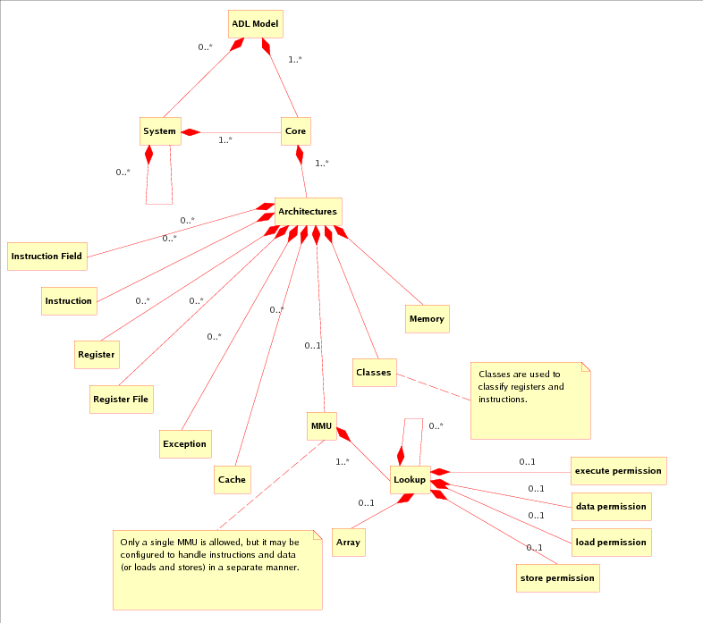

<?xml version="1.0" encoding="utf-8" ?>
<!DOCTYPE html PUBLIC "-//W3C//DTD XHTML 1.0 Transitional//EN" "http://www.w3.org/TR/xhtml1/DTD/xhtml1-transitional.dtd">
<html xmlns="http://www.w3.org/1999/xhtml" xml:lang="en" lang="en">
<head>
<meta http-equiv="Content-Type" content="text/html; charset=utf-8" />
<meta name="generator" content="prest release 0.3.40" />
<link rel="stylesheet" href="default-rst.css" type="text/css" />
</head>
<body>
<div class="document">
<div class="standard header">
  <link type="text/css" rel="stylesheet" href="/swo/css/fsl.css" />
  <script type="text/javascript" language="javascript" src="/swo/jscripts/FSLHeader.js"></script>
  <script language="JavaScript"> 
        WriteFSHeader(); 
  </script> 
</div></div>
<div class="footer">
<hr class="footer" />
<a class="first last reference" href="./fsl-header.rst">View document source</a>.
Generated on: 2018/02/28 15:14:25 MST.
Generated by prest release 0.3.40 from <a class="reference" href="http://docutils.sourceforge.net/rst.html">reStructuredText</a> source.
</div>
</body>
</html>
<?xml version="1.0" encoding="utf-8" ?>
<!DOCTYPE html PUBLIC "-//W3C//DTD XHTML 1.0 Transitional//EN" "http://www.w3.org/TR/xhtml1/DTD/xhtml1-transitional.dtd">
<html xmlns="http://www.w3.org/1999/xhtml" xml:lang="en" lang="en">
<head>
<meta http-equiv="Content-Type" content="text/html; charset=utf-8" />
<meta name="generator" content="prest release 0.3.40" />
<title>ADL Language Reference</title>
<link rel="stylesheet" href="default-rst.css" type="text/css" />
</head>
<body>
<div class="document">
<div class="title section" id="adl-language-reference">
<h1><a>ADL Language Reference</a></h1>
<p>This document describes the architectural description language ADL.  The purpose
of ADL is to describe the architecture of a processor and allow for the creation
of various tools directly from this description, such as an assembler, a
verification ISS, a high-speed ISS, etc.  This language is only for
architectural description and thus specifically does not encompass any
cycle-accurate features.  The intent is that the ADL may be used to generate a
model which would work in conjunction with a micro-architectural description in
order to produce a cycle-accurate model.</p>
<table class="docutils field-list" frame="void" rules="none">
<col class="field-name" />
<col class="field-body" />
<tbody valign="top">
<tr class="field"><th class="field-name">Author:</th><td class="field-body">Brian Kahne</td>
</tr>
<tr class="field"><th class="field-name">Contact:</th><td class="field-body"><a class="reference" href="mailto:bkahne&#64;freescale.com">bkahne&#64;freescale.com</a></td>
</tr>
</tbody>
</table>
<div class="contents topic" id="table-of-contents">
<p class="topic-title first"><a name="table-of-contents">Table of Contents</a></p>
<ul class="simple">
<li><a class="reference" href="#adl-language-reference" id="id3" name="id3">ADL Language Reference</a><ul class="auto-toc simple">
<li><a class="reference" href="#general-overview" id="id4" name="id4">1&nbsp;&nbsp;&nbsp;General Overview</a></li>
<li><a class="reference" href="#c-extensions" id="id5" name="id5">2&nbsp;&nbsp;&nbsp;C++ Extensions</a></li>
<li><a class="reference" href="#file-format" id="id6" name="id6">3&nbsp;&nbsp;&nbsp;File Format</a><ul class="auto-toc simple">
<li><a class="reference" href="#keyscommands-valid-for-all-definesmodifications" id="id7" name="id7">3.1&nbsp;&nbsp;&nbsp;Keys/Commands Valid For All Defines/Modifications</a></li>
<li><a class="reference" href="#attributes" id="id8" name="id8">3.2&nbsp;&nbsp;&nbsp;Attributes</a></li>
<li><a class="reference" href="#definition-types-and-their-keys" id="id9" name="id9">3.3&nbsp;&nbsp;&nbsp;Definition Types And Their Keys</a><ul class="auto-toc simple">
<li><a class="reference" href="#system" id="id10" name="id10">3.3.1&nbsp;&nbsp;&nbsp;System</a></li>
<li><a class="reference" href="#core" id="id11" name="id11">3.3.2&nbsp;&nbsp;&nbsp;Core</a></li>
<li><a class="reference" href="#architecture" id="id12" name="id12">3.3.3&nbsp;&nbsp;&nbsp;Architecture</a><ul class="auto-toc simple">
<li><a class="reference" href="#instruction-field" id="id13" name="id13">3.3.3.1&nbsp;&nbsp;&nbsp;Instruction Field</a></li>
<li><a class="reference" href="#sub-instruction" id="id14" name="id14">3.3.3.2&nbsp;&nbsp;&nbsp;Sub-Instruction</a></li>
<li><a class="reference" href="#instruction" id="id15" name="id15">3.3.3.3&nbsp;&nbsp;&nbsp;Instruction</a></li>
<li><a class="reference" href="#register" id="id16" name="id16">3.3.3.4&nbsp;&nbsp;&nbsp;Register</a></li>
<li><a class="reference" href="#register-file" id="id17" name="id17">3.3.3.5&nbsp;&nbsp;&nbsp;Register File</a></li>
<li><a class="reference" href="#context" id="id18" name="id18">3.3.3.6&nbsp;&nbsp;&nbsp;Context</a></li>
<li><a class="reference" href="#parameter" id="id19" name="id19">3.3.3.7&nbsp;&nbsp;&nbsp;Parameter</a></li>
<li><a class="reference" href="#exception" id="id20" name="id20">3.3.3.8&nbsp;&nbsp;&nbsp;Exception</a></li>
<li><a class="reference" href="#mmu" id="id21" name="id21">3.3.3.9&nbsp;&nbsp;&nbsp;MMU</a></li>
<li><a class="reference" href="#cache" id="id22" name="id22">3.3.3.10&nbsp;&nbsp;&nbsp;Cache</a></li>
<li><a class="reference" href="#memory" id="id23" name="id23">3.3.3.11&nbsp;&nbsp;&nbsp;Memory</a></li>
<li><a class="reference" href="#event-bus" id="id24" name="id24">3.3.3.12&nbsp;&nbsp;&nbsp;Event Bus</a></li>
<li><a class="reference" href="#group" id="id25" name="id25">3.3.3.13&nbsp;&nbsp;&nbsp;Group</a></li>
<li><a class="reference" href="#assembler" id="id26" name="id26">3.3.3.14&nbsp;&nbsp;&nbsp;Assembler</a></li>
<li><a class="reference" href="#real-address-mask" id="id27" name="id27">3.3.3.15&nbsp;&nbsp;&nbsp;Real-Address Mask</a></li>
<li><a class="reference" href="#effective-address-mask" id="id28" name="id28">3.3.3.16&nbsp;&nbsp;&nbsp;Effective-Address Mask</a></li>
<li><a class="reference" href="#external-resource" id="id29" name="id29">3.3.3.17&nbsp;&nbsp;&nbsp;External Resource</a></li>
<li><a class="reference" href="#prefix-counter" id="id30" name="id30">3.3.3.18&nbsp;&nbsp;&nbsp;Prefix Counter</a></li>
<li><a class="reference" href="#relocation" id="id31" name="id31">3.3.3.19&nbsp;&nbsp;&nbsp;Relocation</a></li>
<li><a class="reference" href="#other-definitions" id="id32" name="id32">3.3.3.20&nbsp;&nbsp;&nbsp;Other Definitions</a></li>
</ul>
</li>
</ul>
</li>
</ul>
</li>
<li><a class="reference" href="#predefined-global-resources" id="id33" name="id33">4&nbsp;&nbsp;&nbsp;Predefined Global Resources</a><ul class="auto-toc simple">
<li><a class="reference" href="#global-variables" id="id34" name="id34">4.1&nbsp;&nbsp;&nbsp;Global Variables</a></li>
<li><a class="reference" href="#registers" id="id35" name="id35">4.2&nbsp;&nbsp;&nbsp;Registers</a><ul class="auto-toc simple">
<li><a class="reference" href="#reading-and-writing-registers" id="id36" name="id36">4.2.1&nbsp;&nbsp;&nbsp;Reading and Writing Registers</a></li>
<li><a class="reference" href="#delayed-register-writes" id="id37" name="id37">4.2.2&nbsp;&nbsp;&nbsp;Delayed Register Writes</a></li>
<li><a class="reference" href="#direct-register-accesses" id="id38" name="id38">4.2.3&nbsp;&nbsp;&nbsp;Direct Register Accesses</a></li>
</ul>
</li>
<li><a class="reference" href="#id1" id="id39" name="id39">4.3&nbsp;&nbsp;&nbsp;Memory</a><ul class="auto-toc simple">
<li><a class="reference" href="#delayed-writes" id="id40" name="id40">4.3.1&nbsp;&nbsp;&nbsp;Delayed Writes</a></li>
</ul>
</li>
<li><a class="reference" href="#local-memory" id="id41" name="id41">4.4&nbsp;&nbsp;&nbsp;Local Memory</a><ul class="auto-toc simple">
<li><a class="reference" href="#external-register-functions" id="id42" name="id42">4.4.1&nbsp;&nbsp;&nbsp;External Register Functions</a></li>
</ul>
</li>
<li><a class="reference" href="#mmu-api" id="id43" name="id43">4.5&nbsp;&nbsp;&nbsp;MMU API</a><ul class="auto-toc simple">
<li><a class="reference" href="#mmu-lookup-identifiers" id="id44" name="id44">4.5.1&nbsp;&nbsp;&nbsp;MMU Lookup Identifiers</a></li>
</ul>
</li>
<li><a class="reference" href="#cache-api" id="id45" name="id45">4.6&nbsp;&nbsp;&nbsp;Cache API</a></li>
<li><a class="reference" href="#context-api" id="id46" name="id46">4.7&nbsp;&nbsp;&nbsp;Context API</a></li>
<li><a class="reference" href="#global-functions" id="id47" name="id47">4.8&nbsp;&nbsp;&nbsp;Global Functions</a><ul class="auto-toc simple">
<li><a class="reference" href="#external-pipeline-model-api" id="id48" name="id48">4.8.1&nbsp;&nbsp;&nbsp;External Pipeline Model API</a></li>
<li><a class="reference" href="#rollback-api" id="id49" name="id49">4.8.2&nbsp;&nbsp;&nbsp;Rollback API</a></li>
<li><a class="reference" href="#ignore-mode-api" id="id50" name="id50">4.8.3&nbsp;&nbsp;&nbsp;Ignore-Mode API</a></li>
</ul>
</li>
<li><a class="reference" href="#system-call-support" id="id51" name="id51">4.9&nbsp;&nbsp;&nbsp;System-Call Support</a></li>
</ul>
</li>
<li><a class="reference" href="#usage-notes" id="id52" name="id52">5&nbsp;&nbsp;&nbsp;Usage Notes</a><ul class="auto-toc simple">
<li><a class="reference" href="#3264-mode-behavior" id="id53" name="id53">5.1&nbsp;&nbsp;&nbsp;32/64 Mode Behavior</a></li>
<li><a class="reference" href="#64-bit-only-instructions" id="id54" name="id54">5.2&nbsp;&nbsp;&nbsp;64-Bit Only Instructions</a></li>
<li><a class="reference" href="#simd-registers-and-instructions" id="id55" name="id55">5.3&nbsp;&nbsp;&nbsp;Simd Registers and Instructions</a></li>
<li><a class="reference" href="#mmu-modeling" id="id56" name="id56">5.4&nbsp;&nbsp;&nbsp;MMU Modeling</a></li>
<li><a class="reference" href="#delay-slots" id="id57" name="id57">5.5&nbsp;&nbsp;&nbsp;Delay Slots</a></li>
<li><a class="reference" href="#split-branches" id="id58" name="id58">5.6&nbsp;&nbsp;&nbsp;Split Branches</a></li>
<li><a class="reference" href="#vliw-instructions" id="id59" name="id59">5.7&nbsp;&nbsp;&nbsp;VLIW instructions</a></li>
<li><a class="reference" href="#prefix-instructions" id="id60" name="id60">5.8&nbsp;&nbsp;&nbsp;Prefix Instructions</a></li>
<li><a class="reference" href="#assembler-instructions" id="id61" name="id61">5.9&nbsp;&nbsp;&nbsp;Assembler Instructions</a></li>
<li><a class="reference" href="#assembler-programming-rules-and-post-packet-assembler-hook" id="id62" name="id62">5.10&nbsp;&nbsp;&nbsp;Assembler Programming Rules and Post-Packet Assembler Hook</a></li>
<li><a class="reference" href="#variable-width-instructions" id="id63" name="id63">5.11&nbsp;&nbsp;&nbsp;Variable Width Instructions</a></li>
</ul>
</li>
<li><a class="reference" href="#generators" id="id64" name="id64">6&nbsp;&nbsp;&nbsp;Generators</a><ul class="auto-toc simple">
<li><a class="reference" href="#assemblerdisassembler-generation" id="id65" name="id65">6.1&nbsp;&nbsp;&nbsp;Assembler/Disassembler Generation</a><ul class="auto-toc simple">
<li><a class="reference" href="#multiple-instruction-tables" id="id66" name="id66">6.1.1&nbsp;&nbsp;&nbsp;Multiple Instruction Tables</a></li>
<li><a class="reference" href="#debug-prints" id="id67" name="id67">6.1.2&nbsp;&nbsp;&nbsp;Debug Prints</a></li>
</ul>
</li>
<li><a class="reference" href="#iss-generation" id="id68" name="id68">6.2&nbsp;&nbsp;&nbsp;ISS Generation</a><ul class="auto-toc simple">
<li><a class="reference" href="#usage" id="id69" name="id69">6.2.1&nbsp;&nbsp;&nbsp;Usage</a></li>
<li><a class="reference" href="#configuration-file-syntax" id="id70" name="id70">6.2.2&nbsp;&nbsp;&nbsp;Configuration File Syntax</a></li>
<li><a class="reference" href="#time-tagged-isss" id="id71" name="id71">6.2.3&nbsp;&nbsp;&nbsp;Time Tagged ISSs</a></li>
<li><a class="reference" href="#graphite-integration" id="id72" name="id72">6.2.4&nbsp;&nbsp;&nbsp;Graphite Integration</a></li>
<li><a class="reference" href="#graphite-usage-with-lsf" id="id73" name="id73">6.2.5&nbsp;&nbsp;&nbsp;Graphite Usage With LSF</a></li>
<li><a class="reference" href="#graphite-peripheral-models" id="id74" name="id74">6.2.6&nbsp;&nbsp;&nbsp;Graphite Peripheral Models</a><ul class="auto-toc simple">
<li><a class="reference" href="#the-uvp-testwriter" id="id75" name="id75">6.2.6.1&nbsp;&nbsp;&nbsp;The UVP Testwriter</a></li>
</ul>
</li>
</ul>
</li>
<li><a class="reference" href="#documentation-generation" id="id76" name="id76">6.3&nbsp;&nbsp;&nbsp;Documentation Generation</a><ul class="auto-toc simple">
<li><a class="reference" href="#id2" id="id77" name="id77">6.3.1&nbsp;&nbsp;&nbsp;Usage</a></li>
<li><a class="reference" href="#influential-adl-keys-and-attributes" id="id78" name="id78">6.3.2&nbsp;&nbsp;&nbsp;Influential ADL Keys and Attributes</a></li>
<li><a class="reference" href="#configuration-file" id="id79" name="id79">6.3.3&nbsp;&nbsp;&nbsp;Configuration File</a><ul class="auto-toc simple">
<li><a class="reference" href="#special-transform-functions" id="id80" name="id80">6.3.3.1&nbsp;&nbsp;&nbsp;Special Transform Functions</a></li>
</ul>
</li>
</ul>
</li>
</ul>
</li>
<li><a class="reference" href="#example-code" id="id81" name="id81">7&nbsp;&nbsp;&nbsp;Example Code</a></li>
</ul>
</li>
</ul>
</div>
<div class="section" id="general-overview">
<h2><a class="toc-backref" href="#id4" name="general-overview">1&nbsp;&nbsp;&nbsp;General Overview</a></h2>
<p>An ADL model consists of a system or core object.  Systems may be made up of one
or more cores or other systems and are used to describe multi-processor models.
Core objects describe a single processor core and are made up of one or more
architecture blocks.  Each architecture block describes resources that it has
(registers, instructions, exceptions, etc.) or which should be removed.  Each
type of object in the model may have a documentation string associated with it
which may contain human-readable text.  The idea is to use this for the purpose
of literate programming: A documentation tool could extract this text, as well
as other elements of the design, to create documentation of the model.</p>
<p>Each architecture block can be thought of as a <em>mix-in</em>: It does not have to be
complete in and of itself and can thus describe a fragment of an architecture.
For example, the Power SPE SIMD instructions would be described within an
architecture block but a core using it would not be complete without also
including the main Power architecture.</p>
<p>Graphically, a model looks like:</p>
<div class="figure">
<p class="caption">ADL Model Organization</p>
</div>
<p>The ADL language is declarative, using blocks of extended C++ for describing the
semantics of various resources, such as the actions of an instruction.  The C
preprocessor is used to build a description from multiple files using the
include-file mechanism.</p>
<p>Declarations of resources in ADL take the form:</p>
<pre class="literal-block">[define|defmod] (&lt;type&gt; = [name]) {
  &lt;statement&gt; | &lt;key&gt; = &lt;value&gt; | &lt;define block&gt; ;
}
</pre>
<p>The <em>type</em> specifier is required and specifies what is being declared,
e.g. <em>reg</em>, <em>instr</em>, <em>removes</em>, etc.  The name is optional in general, but
is required for some items, such as instructions and registers.  It may be
either an identifier, a quoted string, or a list of identifiers or strings.  If
the name is a list, then the behavior is the same as if the same block were
replicated for each element in the list.</p>
<p>Within a define body will be either statements, key/value pairs, or other
define/defmod blocks.  Statements exist to allow for literate programming and to
define various action hooks.  As an extension of the C++ grammar, triple-quoted
strings will allow embedded newlines.  For example:</p>
<pre class="literal-block">define (instr = bcctrl) {
  """
  Let the branch target effective address (BTEA) be calculated as follows:

  * For bcctrl[l], let BTEA be 32 Os concatenated with the contents of bits
    32:61 of the Count Register concatenated with 0b00.

  The BO field of the instruction specified the condition or conditions that
  must be met in order for the branch to be taken, as defined in `Branch
  Instructions`_.  The sum BI+32 specified the bit of the Condition Register
  that is to be used.
  """;
  ...
}
</pre>
<p>The contents of the string, from the point-of-view of the ADL front-end, are not
important, but a documentation back-end might use <a class="reference" href="http://docutils.sourceforge.net/rst.html">reStructured Text</a> as a mark-up
format.</p>
<p>Generally, define blocks have key/value pairs for specifying information about a
resource.  For example, a register has a <em>fields</em> key for describing register
fields, a <em>size</em> key for describing its width, etc.  Instructions have a key for
specifying the opcode, the instruction behavior, the format used by an
assembler, etc.</p>
<p>Instructions' behavior is specified using blocks of C++ code, e.g.:</p>
<pre class="literal-block">define (instr = addi) {
  "If RA=0, the sign extended value of the SI field is placed into GPR(RT)";
  size=32;
  bits=0x38000000;
  fields=(RT,RA,SI);
  action= {
    if ( RA == 0 ) {
      GPR(RT) = signExtend(SI,32);
    } else {
      GPR(RT) = GPR(RA) + signExtend(SI,32);
    }
  };
}
</pre>
</div>
<div class="section" id="c-extensions">
<h2><a class="toc-backref" href="#id5" name="c-extensions">2&nbsp;&nbsp;&nbsp;C++ Extensions</a></h2>
<p>The intent of the ADL extensions is to add as little as possible to C++.  Most
of these features are needed for the purpose of implementing the declarative
syntax used by ADL to describe the resources of the processor.  Currently, the
following extensions exist:</p>
<ul>
<li><p class="first">Define blocks.  Adds the keyword <em>define</em>.  These are the primary means for
describing architectural elements such as registers and instructions.  These
may appear at the top-level, may be nested, and may be interspersed with
normal functions, classes, etc.</p>
</li>
<li><p class="first">Define-modify blocks.  Same as above, except that we are issuing a modify
request, rather than a define request.  The keyword is <em>defmod</em>.  Generally, a
<em>define</em> with the same type and name as a previously encountered <em>define</em> will
replace the prior definition, whereas a <em>defmod</em> will merge its contents with
the existing definition.</p>
</li>
<li><p class="first">An anonymous function syntax exists using the keyword <em>func</em>.  For example:</p>
<pre class="literal-block">write = func(unsigned value) { ... };
</pre>
<p>An anonymous function taking no arguments is equivalent to a plain block of
code.  In other words:</p>
<pre class="literal-block">action = { ... };
</pre>
<p>is equivalent to:</p>
<pre class="literal-block">action = func() { ... };
</pre>
<p>If the constant <tt class="docutils literal"><span class="pre">0</span></tt> is used in place of a function, it has the effect of
removing that entry.  In other words:</p>
<pre class="literal-block">action = func() { ... };
</pre>
<p>has the effect of setting <tt class="docutils literal"><span class="pre">action</span></tt> to the specified function.  If the
following is then specified:</p>
<pre class="literal-block">action = 0;
</pre>
<p>This clears out that function; the <tt class="docutils literal"><span class="pre">action</span></tt> key is then considered to be
empty.</p>
<p>Note that this syntax is only allowed as the value for a key/value pair and
may not be used within a block of action code.</p>
</li>
<li><p class="first">Multi-line quotes to support literate programming.  The use of comments is not
a good idea because of the fact that they are <em>comments</em> and thus should not
be considered to hold important information.  Instead, a define or defmod
block may have a multi-line quote as the first element after the declaration.
These quotes use <tt class="docutils literal"><span class="pre">"""</span></tt> as a delimiter, i.e. three double-quote marks.</p>
</li>
<li><p class="first">A bit vector class with arithmetic operators, called <em>bits</em>.  The size of the
bit vector is specified as a template parameter.  This allows a partial
specialization to be used for objects of 32-bits or less, resulting in the use
of native machine arithmetic instructions.  However, the same class can then
be used for much larger integers with no difference in the interface.</p>
<p>Individual bits and slices may be accessed by using the function call
operator: <em>reg(20)</em> or <em>reg(20,21)</em>.  Concatenation of bit vectors is handled
using the <tt class="docutils literal"><span class="pre">concat</span></tt> function:</p>
<pre class="literal-block">concat(a,zero(10),b);
</pre>
<p>A signed version of the bit vector class is also available, called
<em>sbits</em>. These vectors behave like signed integers in C. This mean that sign
extension is done automatically, for example, in assignment operation when the
left value is larger in size than the right value.  In addition, arithmetic
and comparison operations are also performed using signed semantics.</p>
<p>In order to refer to bit positions using little endian bit order one can assign to the core 
parameter <em>bit_endianness</em> value <em>little</em> (default is <em>big</em>). In this ordering bit posistions
are counted from the right, so the bit number <em>0</em> is the least significant bit.</p>
</li>
<li><p class="first">Simple type inferencing:</p>
<ul class="simple">
<li><em>var &lt;ident&gt; = &lt;expr&gt;</em>:  <em>&lt;ident&gt;</em> will be declared with the same type
as that of the initialization expression.</li>
</ul>
</li>
<li><p class="first">Labels are used as code-injection points via the aspect-oriented features of
the language.  This is not new C++ syntax, but its appearance may be
unfamiliar to many programmers.  For example:</p>
<pre class="literal-block">Loop1 : for ( ...) { ... }
</pre>
<p>In this example, <tt class="docutils literal"><span class="pre">Loop1</span></tt> is a label that may be used to insert code via an <em>aspect</em>.</p>
</li>
</ul>
</div>
<div class="section" id="file-format">
<h2><a class="toc-backref" href="#id6" name="file-format">3&nbsp;&nbsp;&nbsp;File Format</a></h2>
<p>The C-preprocessor is used to combine together multiple ADL files into a single
description.  The <em>#import</em> directive is preferred in the general case because
it automatically prevents the inclusion of a file multiple times.  A
description, then, after preprocessing, will consist of a series of <em>define</em> or
<em>defmod</em> blocks, possibly interspersed by C++ code.  The <em>define</em> and <em>defmod</em>
blocks may be nested.  For example, an architecture contains within it all of
the defines specifying instructions, registers, etc.</p>
<p>A valid description must have at least one <em>core</em> define and may also have a
<em>system</em> define to describe an MP system.  A <em>core</em> block will list an
architecture which it implements.  These architecture defines (<em>arch</em> blocks)
contain the bulk of the information, describing instructions, registers, etc.</p>
<p>Plain C++ functions are allowed within <em>arch</em> or <em>core</em> blocks.  These are
available as helper functions for code blocks specified within defines and may
manipulate architected resources.  For example, the following code sets a
PowerPC condition register:</p>
<pre class="literal-block">define (arch = power) {

  void setCrField(bits&lt;3&gt; field,bits&lt;32&gt; x,bits&lt;32&gt; y) {
    var cr = CR;
    bits&lt;4&gt; r = 
      ( (x.signedLT(y)) ? 0x8 : 0) |
      ( (x.signedGT(y)) ? 0x4 : 0) |
      ( (x == y)        ? 0x2 : 0) ;

    cr.set(4*field,4*field+3,r);
    CR = cr;
  }

  ...

}
</pre>
<p>Enumerated type declarations are also allowed.  The <tt class="docutils literal"><span class="pre">enum</span></tt> values may then be
used within action code, or to initialize field values, such as cache, MMU, or
event-bus fields.  For example:</p>
<pre class="literal-block">enum MsgType { Read, Write, Invalidate };
</pre>
<p>This can then be used within action code:</p>
<pre class="literal-block">msg_t data;
data.type = Read;
msg.send(data);
</pre>
<p>Processing of the description occurs in two main phases: A first pass scans in
all elements and does initial syntax checking.  Next, a data model is formed by
combining all architectures which are instantiated by each core.  An
architecture will be scanned in a linear fashion, with defines and modifies
taking effect sequentially.  A later define will replace an earlier one and a
modify operation must follow the define of the object it wants to modify.  In
other words, a modification of the <em>MSR</em> register must follow its original
declaration.  Modifications differ from a duplicate define in that they merge
their values rather than replacing.  Also, any define or modify block may
contain a special key of <em>remove</em>, which will remove the entire definition.</p>
<p>Due to the fact that this is a two-pass parser, the order of different types of
resources does not matter.  For example, while an instruction, in its encoding
description, must reference valid instruction fields, those fields may be
located, physically in the file, after the declaration of the instruction.  This
allows the user to structure a file as desired to aid in readability, rather
than due to parsing requirements.</p>
<p>The following are the types of defines that ADL supports, along with the allowed
keys.  The front-end should ignore, possibly with a warning, unknown
declarations and keys in order to enable forward compatibility.  Keys may occur
multiple times within the same block.</p>
<div class="section" id="keyscommands-valid-for-all-definesmodifications">
<h3><a class="toc-backref" href="#id7" name="keyscommands-valid-for-all-definesmodifications">3.1&nbsp;&nbsp;&nbsp;Keys/Commands Valid For All Defines/Modifications</a></h3>
<ul>
<li><p class="first"><em>remove = &lt;int&gt;</em>:  Non-zero means to remove the definition.</p>
</li>
<li><p class="first"><em>removable = &lt;true | false&gt;</em>:  If false, then the object may not be removed
by subsequent architecture blocks.  The default is <em>true</em>.</p>
</li>
<li><p class="first"><em>modifiable = &lt;true | false&gt;</em>:  If false, then the object may not be
modified by subsequent architecture blocks.  The default is <em>true</em>.</p>
</li>
<li><p class="first"><em>remove &lt;name&gt;</em>: This command allows for the removal of a key in the current
<em>define/defmod</em> and all prior instances.  Subsequent <em>defines</em> or <em>defmods</em>
will not be modified.  For example:</p>
<p>This will define a register and set an offset value:</p>
<pre class="literal-block">define (reg=foo) {
  offset = 32;
}
</pre>
<p>This will then remove the offset key, so that the register will not have an
offset value set:</p>
<pre class="literal-block">defmod(reg=foo) {
  remove offset;
}  
</pre>
</li>
<li><p class="first">Definition: <em>aspect</em>: Define a code aspect.  This allows a block of code to be
inserted immediately after a label, or other defined insertion points, within
a block of action code.  This define block is valid within any define that
contains hooks, e.g. instructions, registers, mmu lookups, caches, etc., or
enclosing scopes of such blocks.</p>
<p>The usual code injection point is just a C label.  Whenever a label is encountered,
the system looks for aspects which contain a matching label.  The search
begins in the current define block and works upwards to enclosing blocks.  If
a match is made and any of the matching aspects have the <strong>exclusive</strong> flag
set, then the search stops.  Otherwise, the search continues to the outer-most
scope.</p>
<p>All code for all matching aspects are inserted immediately following
the label.  The code within an aspect is only evaluated for correctness after
it has been inserted and is evaluated within the context of the code into
which it is inserted.  Thus, an aspect can refer to resources, such as local
variables, instruction fields, etc., which are valid within the code
containing the label.</p>
<p>Additional insertion points include the start and end of instruction action
code.</p>
<p>For example, This defines an instruction with a label of <tt class="docutils literal"><span class="pre">Update</span></tt>:</p>
<pre class="literal-block">define (instr=add1) {
  fields=(OPCD(12),RT,RA,SI);

  action = {
    var carry = Carry(GPR(RA),SI,0);
    Update:
    GPR(RT) = GPR(RA) + SI;
  };
}
</pre>
<p>This modifies the instructions <tt class="docutils literal"><span class="pre">add1</span></tt> and <tt class="docutils literal"><span class="pre">add2</span></tt> to include an aspect
which targets the <tt class="docutils literal"><span class="pre">Update</span></tt> label:</p>
<pre class="literal-block">defmod (instr=(add1,add2)) {
  define (aspect=A) {
    labels = Update;
    action = { GPR(RA) = 0; };
    exclusive = true;
  }
}
</pre>
<p>The aspect defined above would match against the two specified instructions
and would preclude aspects in the enclosing architecture block from being
expanded because the <strong>exclusive</strong> flag is set.</p>
<ul>
<li><p class="first"><em>action = func { }</em>:  The code to insert.</p>
</li>
<li><p class="first"><em>labels = &lt;ident&gt; | &lt;list(ident)&gt;</em>:  Specify target labels for this aspect.</p>
</li>
<li><p class="first"><em>attrs = &lt;ident|ident(str|int[,...])&gt; |
&lt;list(ident|ident(str|int[,...]))&gt;</em>: Expand the aspect only if the parent
object has one or more of the specified attributes.  A functional form may
be used to specify that the attribute must have the specified value(s).</p>
</li>
<li><p class="first"><em>if_defined = &lt;ident&gt; | &lt;list(ident)&gt;</em>: Specify symbols to check before
expanding the aspect.  If the symbols are not defined, then the aspect is
not expanded.  For example, the user may list instruction fields and
exception names; only if the exception exists in the current core and the
instruction fields exist for the current instruction will the aspect be
expanded.</p>
<p>Symbol types currently checked: Instruction fields and <tt class="docutils literal"><span class="pre">blk</span></tt> types (if the
aspect is being expanded within an instruction) and core-level resources,
e.g. exception names, register names, etc.</p>
</li>
<li><p class="first"><em>instr_pre_exec = &lt;bool&gt;</em>: Insert aspect at the start of instruction action
code.</p>
</li>
<li><p class="first"><em>instr_post_exec = &lt;bool&gt;</em>: Insert aspect at the end of instruction action
code.</p>
</li>
<li><p class="first"><em>exclusive = &lt;bool&gt;</em>:  If true, on a match, do not proceed to the
next outermost scope.</p>
</li>
<li><p class="first"><em>priority = &lt;int&gt;</em>: Specifies the priority of this aspect vs. other aspects,
if multiple aspects are expanded at the same insertion point.  An aspect
without a priority is considered to have the lowest priority vs. other
aspects that have priorities.  The highest priority is 0.  The order of
expansion of aspects with equal priorities is undefined.</p>
</li>
</ul>
</li>
</ul>
</div>
<div class="section" id="attributes">
<h3><a class="toc-backref" href="#id8" name="attributes">3.2&nbsp;&nbsp;&nbsp;Attributes</a></h3>
<p>Most definitions support attributes via the <tt class="docutils literal"><span class="pre">attrs</span></tt> key.  An attribute is
simply an arbitrary, user-defined symbol with an optional integer, string,
integer-list or string-list value.  These may be used by some generators to
alter behavior or may be used by clients of the ADL database.</p>
<p>All attributes must be declared at the architecture, core, or system level
before they may be used within a resource.  This is done via the <tt class="docutils literal"><span class="pre">attrs</span></tt> key,
e.g.:</p>
<pre class="literal-block">attrs = (a,b,c);
</pre>
<p>This declares three attributes:  <strong>a</strong>, <strong>b</strong>, and <strong>c</strong>.</p>
<p>To assign an attribute to a resource, use the <tt class="docutils literal"><span class="pre">attrs</span></tt> key.  The value may be
either a single attribute or a list of attributes.  Values are assigned using a
function call notation.  For example:</p>
<pre class="literal-block">define (instr=A) {
  attrs = (a,b(1),c("xyz"));
}
</pre>
<p>The type of the attribute's parameter is determined automatically.  It is valid
to use parametrized attributes without a parameter.</p>
<p>Some attributes are predefined and required by certain generators:</p>
<ul class="simple">
<li><em>cia</em>: Specify that a register is the current-instruction-address
register.</li>
<li><em>nia</em>:  Specify that a register is the next-instruction-address register.
Note that a single register may have both the <em>nia</em> and <em>cia</em> attributes.</li>
<li><em>condition</em>:  Specify that a register is a condition register.</li>
<li><em>other</em>:  Used to indicate the default instruction table.</li>
</ul>
<p>Any object which supports attributes also supports the following keys:</p>
<ul class="simple">
<li><em>inherit_attrs = &lt;bool&gt;</em>:  True means that an object will inherit its
attributes from a parent object, if applicable.  For example, nested
instructions inherit from the outer instruction and assembler shorthands
inherit from their target instructions.  Setting this to false means that no
inheritance takes place.</li>
<li><em>remove_attrs = &lt;ident | list(ident)&gt;</em>: Remove an attribute.  Reports an
error if the attribute does not exist.  This key may be used within any
define/defmod object which supports attributes (has the <tt class="docutils literal"><span class="pre">attrs</span></tt> key).</li>
<li><em>remove_attrs_nc = &lt;ident | list(ident)&gt;</em>: Remove an attribute.  No error is
reported if the attribute does not exist.  This key may be used within any
define/defmod object which supports attributes (has the <tt class="docutils literal"><span class="pre">attrs</span></tt> key).</li>
</ul>
</div>
<div class="section" id="definition-types-and-their-keys">
<h3><a class="toc-backref" href="#id9" name="definition-types-and-their-keys">3.3&nbsp;&nbsp;&nbsp;Definition Types And Their Keys</a></h3>
<div class="section" id="system">
<h4><a class="toc-backref" href="#id10" name="system">3.3.1&nbsp;&nbsp;&nbsp;System</a></h4>
<ul>
<li><p class="first">Definition: <em>sys = &lt;name&gt;</em>: Specify a system.  This is only needed for a
description of an MP system.</p>
<ul>
<li><p class="first">Declarations:  Declarations for systems or cores which constitute this
system.  For example, to declare two cores of type <em>Zen</em>:</p>
<pre class="literal-block">define(sys=ZenSystem) {
  Zen core0;
  Zen core1;
}
</pre>
<p>An array syntax may be used as well, when the type of the declaration is the
same:</p>
<pre class="literal-block">define(sys=ZenSystem) {
  Zen core[2];
}
</pre>
<p>When an array syntax is used, the specified number of instances of the core
or system are created and named by appending each item's index to its
declaration name.  In the example above, <tt class="docutils literal"><span class="pre">core0</span></tt> and <tt class="docutils literal"><span class="pre">core1</span></tt> will be
created, of type <tt class="docutils literal"><span class="pre">Zen</span></tt>.</p>
</li>
<li><p class="first"><em>type = &lt;str&gt;</em>: The type key's use is user definable.  It is accessible
within the ISS and may be used by test writers, such as the UVP test writer.</p>
</li>
<li><p class="first">Definition: <em>shared</em>:  Specify shared resources.  Note that aliased
registers and register files may not be shared.</p>
<ul class="simple">
<li><em>regs = &lt;list&gt;</em>:  List shared registers.</li>
<li><em>regfiles = &lt;list&gt;</em>:  List shared register files.</li>
<li><em>mmulookups = &lt;list&gt;</em>:  List shared MMU lookup objects.</li>
<li><em>parms = &lt;list&gt;</em>:  List shared parameters.</li>
<li><em>caches = &lt;list&gt;</em>: List shared caches.  Once a given cache has become
shared, all subsequent cache levels must be shared.</li>
<li><em>mems = &lt;list&gt;</em>: List shared memories.</li>
<li><em>eventbuses = &lt;list&gt;</em>:  List shared event buses.</li>
<li><em>ext_resources = &lt;list&gt;</em>:  List of shared external resources.</li>
</ul>
</li>
<li><p class="first">Definition: <em>sys = &lt;name&gt;</em>: Systems may be nested.  These are treated as
local systems, visible only to the containing system block.</p>
</li>
</ul>
</li>
</ul>
</div>
<div class="section" id="core">
<h4><a class="toc-backref" href="#id11" name="core">3.3.2&nbsp;&nbsp;&nbsp;Core</a></h4>
<ul>
<li><p class="first">Definition: <em>core = &lt;name&gt;</em>: Specify a core.  A valid description contains at
least one core.</p>
<ul>
<li><p class="first"><em>archs = &lt;list | id&gt;</em>:  One or more architectures which this core implements.</p>
</li>
<li><p class="first"><em>type = &lt;str&gt;</em>: The type key's use is user definable.  It is accessible
within the ISS and may be used by test writers, such as the UVP test writer.</p>
</li>
<li><p class="first"><em>instrtables = &lt;list&gt;</em>:  List classes of instructions to be grouped into
individual instruction tables.  By default, only a single decoder is
created.  However, it is possible to create multiple decode tables using
this field.  Each element of the list is an instruction class declared using
the <em>attrs</em> define, or the special keyword <em>other</em>, which will take
all remaining instructions.</p>
<p>For example:</p>
<pre class="literal-block">instrtables = (other,vle);
</pre>
<p>This means that all instructions belonging to the <em>vle</em> class will be
grouped into a table and all other instructions will be grouped into another
table.  The tables can be switched using the function
<em>setCurrentInstrTable(&lt;class&gt;)</em> in an action block or a read or write hook.</p>
<p>If instead the following line were specified:</p>
<pre class="literal-block">instrtables = vle;
</pre>
<p>Then only the <em>vle</em> decoder would be created.  The other instructions could
be referenced via aliases but would not exist within the ISS's decoder.</p>
<p>Note that the first element of the <tt class="docutils literal"><span class="pre">instrtables</span></tt> list will be used as the
default instruction table when the core is reset.</p>
</li>
<li><p class="first">In addition, all keys/defines for architectures may be used directly within
the core.  This can be useful when a minor modification must be made to an
existing architecture.  Rather than creating an additional one-off
architecture, the specification can be done directly within the core.</p>
</li>
</ul>
</li>
</ul>
</div>
<div class="section" id="architecture">
<h4><a class="toc-backref" href="#id12" name="architecture">3.3.3&nbsp;&nbsp;&nbsp;Architecture</a></h4>
<ul class="simple">
<li>Definition: <em>arch = &lt;name&gt;</em>: Specify an architecture.</li>
</ul>
<div class="section" id="instruction-field">
<h5><a class="toc-backref" href="#id13" name="instruction-field">3.3.3.1&nbsp;&nbsp;&nbsp;Instruction Field</a></h5>
<blockquote>
<ul>
<li><p class="first">Definition: <em>instrfield = &lt;name&gt;</em>: Define an instruction field.</p>
<ul>
<li><p class="first"><em>allow_conflict = &lt;bool&gt;</em>: It allows the user to specify that a given
non-opcode field may overlap with this field, such that normally a
conflict in encoding would be present.  However, due to how the field will
be set, no conflict would result, and thus this should be allowed.  For
example, a set of instructions might have a field named <strong>X</strong>, which
aligns with a 0 bit for the rest of the instructions which do not include
<strong>X</strong>.  Thus, if <strong>X</strong> is 1, no conflict results.  However, since this is
a non-opcode field, the encoder cannot know that <strong>X</strong> will always be 1,
and thus normally a conflict would be detected.</p>
<p>This parameter should be used with caution!  It is not normally needed.</p>
</li>
<li><p class="first"><em>assembler = &lt;bool&gt;</em>: Indicates that this is a field processed indirectly
by the assembler.  Generally, post-packet and post-instruction assembly
hooks will set this field, rather than it being set directly through the
syntax string.</p>
</li>
<li><p class="first"><em>disassemble = &lt;true|false|prefix&gt;</em>: Indicate how to handle an instruction
field by default, unless otherwise specified by an instruction's syntax
string.</p>
<dl class="docutils">
<dt><strong>true</strong>:</dt>
<dd>Disassemble normally.</dd>
<dt><strong>false</strong>:</dt>
<dd>Do not disassemble.  This is overridden by an instruction's syntax, if
specified.</dd>
<dt><strong>prefix</strong>:</dt>
<dd>Disassemble in front of an instruction's mnemonic.  This occurs even if
an instruction's syntax string also specifies it.  This is useful for
implementing instruction prefix syntax without explicit <tt class="docutils literal"><span class="pre">%p</span></tt> fields in
all syntax strings.  To support assembly, the user would normally mark
this field as an <tt class="docutils literal"><span class="pre">assembler</span></tt> field and then set it via assembler
instructions and the <tt class="docutils literal"><span class="pre">pre_asm</span></tt> hook.</dd>
</dl>
</li>
<li><p class="first"><em>doc_title = &lt;string&gt;</em>: Used only in documentation; a custom title for
this instruction field.</p>
</li>
<li><p class="first"><em>doc_title_add = &lt;string&gt;</em>: Used only in documentation; extra title
information for the instruction field.  This is appended to the title, be
it the standard one or a custom one specified via <em>doc_title</em>.</p>
</li>
<li><p class="first"><em>bits = &lt;list&gt;|&lt;int&gt;</em>: A list of integers representing the bit indices.
A split field is represented as a list of lists, e.g. <em>SPRN =
((16,20),(11,15))</em>.</p>
</li>
<li><p class="first"><em>type = &lt;ident&gt;</em>: Specifies the type of this instruction field.  Valid
options are:</p>
<ul class="simple">
<li><em>regfile</em>:  Specifies that the instruction field is associated with a
register file.</li>
<li><em>memory</em>:  Specifies that the instruction field is associated with a
specific memory space.</li>
<li><em>instr</em>: Specifies that the field is instruction-type, i.e., associated 
with an instruction within the instruction table specified by a <em>ref</em> key.</li>
<li><em>immed</em>: Specifies that the field is an immediate value (default).  If
<em>ref</em> is specified, the <em>type</em> can be infered from the resource
referenced.</li>
<li><em>ident</em>: where <em>ident</em> is another prefix instruction field. Only for
prefix instruction fields, it denotes that a field implements another
field.</li>
</ul>
</li>
<li><p class="first"><em>ref = &lt;ident&gt;</em>: If the type is one which refers to another resource, such
as <em>regfile</em>, <em>memory</em>, or <em>instr</em>, this key specifies the association.  For
example, a register file type must contain a <em>ref</em> key which specifies
with which register file it is associated, and an instruction type 
must contain a <em>ref</em> key which specifies within which instruction table it is 
located. 
For prefix fields, this key 
refers to the pseudo field this field implments.</p>
</li>
<li><p class="first"><em>enumerated = &lt;list(string|ident|list(string|ident))&gt;</em>: Specify that the
field is enumerated.  Enumerations map to immediate values starting with
0.  The list is a series of strings, identifiers or lists of strings or
identifiers specifying the enumerated value.  An empty string is allowed.
The identifier "reserved" may be used to indicate a gap in the
sequence. In a nested list all strings specify the same value, e.g. in
<em>enumerated = ("a", ("b1", "b2"), "c") )</em> <em>a</em> specifies <em>0</em>, <em>b1</em> and <em>b2</em>
specify <em>1</em> and <em>c</em> specifies <em>2</em>.</p>
</li>
<li><p class="first"><em>overlay = &lt;bool&gt;</em>: If true, then this field may overlap.  The field is
not decoded for execution, but is provided for assembler/disassembler
purposes.  Its value is set after the underlying field and may thus be
used to set additional bits, such as optional flags.</p>
</li>
<li><p class="first"><em>is_signed = &lt;bool&gt;</em>: If an immediate field, this specifies whether it is
a signed quantity.  The default is <em>false</em>.  Within an instruction's
action code, the field's value will be expanded to the size of the <em>nia</em>
register and sign-extended if this flag is set.</p>
</li>
<li><p class="first"><em>unsigned_upper_bound = &lt;bool&gt;</em>: If a signed immediate field, then this
specifies that the allowed upper bound should be treated as an unsigned
number, when performing range checking, such as by the assembler.  This
means that a value of 0xdeadbeef, for example, is allowed within a 32-bit
field, even though, treated as a signed number, it exceeds the maximum
signed value of 0x7fffffff.  This feature is useful for allowing users to
specify large constants, without the need to calculate the equivalent
negative value.</p>
</li>
<li><p class="first"><em>is_inverted = &lt;bool&gt;</em>: If an immediate field, this specifies whether the
value is inverted prior to being encoded.  The default value is <em>false</em>.
Within an instruction's action code, the value for this field will be
inverted.</p>
</li>
<li><p class="first"><em>pseudo = &lt;bool&gt;</em>: Specifies that this field is not directly mapped to
explicit bits.  It may be used within syntax strings, by aliases, or by
instructions in which their encoding is defined either by aliases or by
the bit-mapped fields notation. If they appear directly within an
instruction's encoding, then bit mappings will be assigned implicitly
based upon the ordering of the fields.  Default is false.</p>
</li>
<li><p class="first"><em>parm = &lt;bool&gt;</em>: Specifies that this field can not be mapped to explicit
bits and can not be used within syntax strings. It can be used only by
aliases and in action code. Default is false.</p>
</li>
<li><p class="first"><em>width = &lt;int&gt;</em>: Field width, in bits. Optional, if the field's bits are
specified; mandatory for pseudo fields. The keyword <em>reserved</em> denotes 
a variable width field which is associated with all bits not associated with
fields in the bit-mapped fields notation. Only one variable width field is 
allowed in an instruction.</p>
</li>
<li><p class="first"><em>size = &lt;int&gt;</em>: Field computed value, in bits. Optional, by default a field
computed value is its bits; and its size equals its width.</p>
</li>
<li><p class="first"><em>prefix = &lt;bool&gt;</em>: If true, then this field may be used in prefix instructions.
Prefix fields may be used only in prefix instructions, and all fields of 
a prefix must have this key set to true. Default, false. Prefix field inforamtion
which is position and block independent can be accessed in action code.</p>
</li>
<li><p class="first"><em>indexed = &lt;int&gt;</em>: This <em>pseudo prefix</em> field is an indexed field of a
given width.  The field can be thought of as an array of elements of the
specified width, where the specific field is selected based on the
instruction's position within the VLIW packet.  The width of the field, if
not specified, is <em>paralle_execution</em> x <em>indexed</em>.</p>
</li>
<li><p class="first"><em>index_endianness = (big|little|)</em>: Endianness for automatically
retrieving slices for indexed instruction fields.  If not specified (the
default), then the same endianness as for the core is used.  If set to
<em>big</em>, then the first instruction indexes from the left-most
(most-significant) bits of the packet).</p>
</li>
<li><p class="first"><em>blk = &lt;ident&gt; | &lt;list&gt;</em>: Optional, specifies the logical blocks this
field is associated with.  If specified, must include the block of any
instruction that uses it.</p>
</li>
<li><p class="first"><em>addr = &lt;ident&gt;</em>:  Specifies that this field represents an address.  Value
values are:</p>
<p><em>pc</em>: PC-relative address.  Within an instruction's action code, the value
for the field will be the sum of the field's encoded value and the <em>cia</em>
register.</p>
<p><em>abs</em>:  Absolute address.</p>
<p><em>none</em>:  Specify that this field does not represent an address.</p>
</li>
<li><p class="first"><em>offset = &lt;int&gt;</em>: Specify an implicit offset.  Within an instruction's
action code, the value for the field will be the field's encoded value
plus the offset.</p>
</li>
<li><p class="first"><em>shift = &lt;int&gt;</em>: Specify a shift value for the field.  Within an
instruction's action code, the value for the field will be the field's
encoded value shifted left by the specified number of bits.  In the
assembler and linker, the value will be shifted right by the specified
number of bits when encoding the operand value.</p>
</li>
<li><p class="first"><em>display = &lt;ident&gt;</em>: Specifies the formatting to be used when displaying
the instruction field.  Allowed values are:</p>
<ul class="simple">
<li><em>hex</em>: Display the field in hexadecimal notation with a 0x prefix.</li>
<li><em>dec</em>: Display the field in decimal notation.</li>
<li><em>signed_dec</em>: Display the field in decimal notation with an explicit
sign prefix: + if the value is positive, - if the value is negative.</li>
<li><em>name</em>: If this is a register file field, display it using the register
file's prefix, followed by the value of the field in decimal.</li>
<li><em>def</em>:  Use the default behavior.</li>
</ul>
<p>The default is to use <em>name</em> if the instruction field has a register file,
otherwise to use <em>dec</em> if the instruction field is five bits or less in
size, otherwise use <em>hex</em>.</p>
</li>
<li><p class="first"><em>table = &lt;list(k-tuple|"reserved")&gt;</em>: Specify that the field is an
enumerated list of admissible resource tuples. Tuples map to indices
starting with 0.  The identifier "reserved" is used to indicate a gap in
the sequence. The tuple elements may be accessed in the instruction
<em>syntax</em> specifier or in the <em>action</em> code by using a function call
notation.  An instruction field X with a table of pairs of integer may be
referenced in the action code by: tmp = X(0) + X(1), where X is a pair
index and X(0), X(1) are its first and second elements, respectively.</p>
</li>
<li><p class="first"><em>fields = &lt;list(int|ident|idnet(int)&gt;</em>: Specify the value returned by the
instruction field. By default, it equals the field's <em>bits</em>.  This can be
combined with nested fields to yield a larger, generated value or a nested
field may use this to take a slice of a parent field.  If the nested field
itself contains a lookup table, then the lookup will be performed
automatically when the field is referenced.  In this situation, the table
may only be one dimensional.  For example:</p>
<pre class="literal-block">define (instrfield = DaDb) { 
  width = 5;    // number of  input  bits 
  pseudo = true;

  // Various allowed combinations of registers.  Note that shortcuts exist,
  // demonstrating multiple enumeration strings for the same value.
  enumerated = (("d0::d2","d0:d1:d2"),
                ("d1::d3","d1:d2:d3"),
                ("d2::d4","d2:d3:d4"),
                ("d3::d5","d3:d4:d5"),
                ...
                "d0:d7:d15"
                ); 

  define(instrfield=Da) {
    size = 5;
    fields = (4,0);
    table = (0,1,2,3,4,5,6,7,8,9,10,11,12,12,0,2,4,6,8,10,1,3,5,7,9,11,0,3,6,9,0);
  }     
  define(instrfield=Db) {
    size = 5;
    fields = (4,0);
    table = (1,2,3,4,5,6,7,8,9,10,11,12,13,14,2,4,6,8,10,12,3,5,7,9,11,13,3,6,9,12,7);
  }     
  define(instrfield=Dc) {
    size = 5;
    fields = (4,0);
    table = (2,3,4,5,6,7,8,9,10,11,12,13,14,15,4,6,8,10,12,14,5,7,9,11,13,15,6,9,12,15,15);
  }
}
</pre>
<p>In this example, the parent field is enumerated.  Each nested field then
refers to a one dimensional encoding slice which corresponds to the
enumerated values.  When the action code of an instructions references the
nested field, e.g. <strong>DaDb.Da</strong>, then the result returned is the value of
<strong>DaDb</strong> indexed into the table stored in <strong>Da</strong>.</p>
<p>Another method for using nested fields is to refer to a parent's table for
lookup purposes.  For example:</p>
<pre class="literal-block">define (instrfield = DaDb) { 
  width = 5;    // Number of  input  bits 
  size = 5;   // Necessary so that the default width isn't taken from the
              // nested fields.
  ref = D; 
  pseudo = true;

  table = ((0,1,2),
           (1,2,3),
           (2,3,4),
           ...
           (9,12,15),
           (0,7,15)
           ); 

  // Extra enumerations which act as shortcuts.
  enumerated = ("d0::d2",
                "d1::d3",
                "d2::d4",
                "d3::d5",
                "d4::d6",
                "d5::d7",
                "d6::d8",
                "d7::d9",
                "d8::d10",
                "d9::d11",
                "d10::d12",
                "d11::d13",
                "d12::d14",
                "d12::d15"
                ); 

  // This has the effect of enumerating the table using the specified formatting.
  syntax = ("%f:%f:%f",DaDb(0),DaDb(1),DaDb(2));

  define(instrfield=Da) {
    width = 4;
    fields = (DaDb(0));
  }     
  define(instrfield=Db) {
    width = 4;
    fields = (DaDb(1));
  }     
  define(instrfield=Dc) {
    width = 4;
    fields = (DaDb(2));
  }     
}
</pre>
<p>In this example, each nested field reference's a particular slice of the
parent's table.  Some enumerations are specified explicitly, but the use
of the syntax string with table-lookup references is used to implicitly
create extra enumerations from the field's table.  For example, the
enumerations "d0:d1:d2" and "d1:d2:d3" are added (the <em>d</em> prefix is added
implicitly due to the field referencing the <strong>D</strong> register file, which, is
presumed to have a prefix of <em>d</em>.  These are then combined with any
existing enumerations, so that explicitly specified enumerations may act
as shortcuts, e.g. "d0::d2", as the first enumeration, maps to a value of
0, as does the implicitly created "d0:d1:d2".  Gaps in the explicit
enumerations may be created by using the <strong>reserved</strong> keyword.</p>
</li>
<li><p class="first">Definition: <em>instrfield = &lt;name&gt;</em>: Nested instruction field. These are treated
as local fields, and can be accessed from the containing field by their name,
or by any instruction using the '.' hierarchical notation, e.g., DaDb.Db.
Nested fields inherit some of the properties of the containing instruction. Therefore,
can not redefine the keywords, pseudo, prefix, blk or set a reserved width.
The <em>bits</em> and <em>fields</em> keys in a nested instruction field are relative to the containing
instruction. For instance:</p>
<pre class="literal-block">define(instrfield=DaDb) {
  bits = ((8,9),(0,1));

        define(instrfield=Tbl) {
    bits = (3,4);
          table = ((0,1),reserved,(2,3),reserved);
  }
  fields = (0,Db(0),1,Db(1));

        define(instrfield=Db) {
    fields = (0,2);
  }
}
</pre>
<p>The nested field <em>Tbl</em> uses bits <em>9</em> and <em>0</em> of the instruction.
The nested field <em>Db</em> returns the upper three bits of the <em>DaDb</em> field.</p>
</li>
<li><p class="first"><em>value = &lt;string&gt;</em>: Optional, specifies default value for the field. For numeric
fields, the default value is zero.</p>
</li>
<li><p class="first"><em>valid_ranges = list(&lt;int&gt;,&lt;int&gt;)</em>: Optional, specifies a list of inclusive 
ranges for allowed values. Currently, only unsigned fields are supported.</p>
</li>
<li><p class="first"><em>valid_masks = list(&lt;uint&gt;,&lt;uint&gt;)</em>: Optional, specifies a list of allowed 
masks. Syntax is ((pattern1,value1),...). Value of field is valid if 
<em>pattern_i &amp; field == pattern_i &amp; value_i</em> for some <em>i</em>.</p>
</li>
<li><p class="first"><em>action = &lt;code&gt;</em>: Optional. The value returned by the instruction field. 
The computed value should be assinged to the identifier <em>ThisField</em>, and expressions
of the form <em>bits(hi,lo)</em> refering to the field's bits. Note, for most usages
the <em>fields</em> suffices for describing this value. For indexed fields action code must take
one parameter, representing the index, all other fields may have an action of arity 0.</p>
</li>
<li><p class="first"><em>syntax = ( &lt;string&gt;, &lt;fields ...&gt; )</em>: Specifies how an instruction field
is to be parsed by an assembler or printed by a disassembler. The syntax
is a list of nested fields with their <em>fields</em> key defined. For example,
<em>syntax = ( "%f:%f", Da, Db )</em>.  Either a nested field may be specified or
a table-reference, e.g. <em>syntax = ( "%f:%f", DaDb(0), DaDb(1) )</em>.  The two
forms may not be mixed.  If the latter is used, then the syntax string is
used to generate enumerations based upon the table data, which may be
combined with extra enumerations already specified.</p>
<p>The only valid control field is:</p>
<p>%f: Specifies an nested instruction field.</p>
<p>Expressions are not supported for instruction field syntax.</p>
<p>See definition of syntax for instruction for more details.</p>
</li>
<li><p class="first"><em>alias = &lt;name&gt;</em>: Specifies that this field is an alias to another
instruction field.  Useful when instructions in assembler are
distinguished by instruction field syntax.  Can be used in syntax similar
to how expressions are used -- usign functional notation.  Example:</p>
<pre class="literal-block">define(instrfield=DaDb) {
  ref=D;
  define(instrfield=Da) { ... };
  define(instrfield=Db) { ... };
  syntax = ("%f,+%f",Da,Db);
}

define(instrfield=DaDb2) {
  alias = DaDb;
  syntax = ("%f,-%f",Da,Db);
}

define (instr=add_p) {
  ...
  syntax = ("add %f",DaDb);
} 

define (instr=add_m) {
  ...
  syntax = ("add %f",DaDb2,DaDb(DaDb2));
 } 
</pre>
<p>In this example the assembly line: <tt class="docutils literal"><span class="pre">add</span> <span class="pre">d0,+d1</span></tt> is <em>add_p</em> instruction and <em>add d0,-d1</em> is <em>add_m</em>.</p>
</li>
</ul>
</li>
</ul>
</blockquote>
</div>
<div class="section" id="sub-instruction">
<h5><a class="toc-backref" href="#id14" name="sub-instruction">3.3.3.2&nbsp;&nbsp;&nbsp;Sub-Instruction</a></h5>
<blockquote>
<ul>
<li><p class="first">Definition: <em>subinstr = &lt;name&gt;</em>: Define a sub-instruction.  A
sub-instruction allows you to decompose an instruction into a series of
orthogonal sub-components.  For example, suppose an architecture has a
series of arithmetic operation, e.g. add, multiply, subtract, and a series
of addressing modes, e.g. register, memory, indirect memory, etc.  Writing
by hand the cartesian product of all operations with all addressing modes
would be tedious.  Instead, you can create a set of sub-instructions for
addressing and a set of sub-instructions for the operations, then group
these together within an instruction.  ADL will automatically generate the
cross-product of these two groups.</p>
<ul>
<li><dl class="first docutils">
<dt><em>attrs = &lt;list&gt;</em>: List any attributes that this sub-instruction is</dt>
<dd>associated with.  Attributes will be inherited by all instruction built
from this sub-instruction.</dd>
</dl>
</li>
<li><p class="first"><em>fields = &lt;list&gt;</em>: List of fields. Hard-coded values for fields are
specified using the functional notation, e.g., <em>Op1(12)</em>. Fields may be
specified using the bit-mapped notation, e.g., <em>fields = ((bits(0,5),RA),
(bits(6),0xa), (bits(7,12),RB), (bits(13), reserved),
(bits(14,15),b11));</em>, where are RA, RB are pseudo instruction fields, and
the keyword <em>reserved</em> denotes that the bit is not used for encoding. The
notation <em>b11</em> denotes the binary representation of <em>3</em>.  Pseudo-fields
may be repeated across sub-instructions.</p>
</li>
<li><p class="first"><em>syntax = ( &lt;string&gt;, &lt;fields ...&gt; )</em>: Specifies how an instruction is to
be parsed by an assembler or printed by a disassembler. Takes the form of
a list, where the first element is a format string and the following items
are opcode fields. See definition of syntax for instruction for more
detail.</p>
</li>
<li><p class="first"><em>action = &lt;code&gt;</em>: The semantics of the sub-instruction.  Instruction fields
are accessible using their names and registers are also accessible using
their names. The action may take additional arguments which are passed
to it by the instanciating instruction, e.g., for subinstr X:</p>
<pre class="literal-block">action = func(bits&lt;16&gt; &amp;rval) {

}
</pre>
<p>it is used in the instruction's action code:</p>
<pre class="literal-block">bits&lt;16&gt;   Y0;
X(Y0);
</pre>
<p>Note that the fields should not be specified in the action code definition,
they are inherited from the instruction. Action code without arguments is specified
using:</p>
<pre class="literal-block">action = {

}
</pre>
<p>If the action contains a <em>return</em> statement, it will abort instruction
execution.</p>
<p>When using defmod construct, one can type:</p>
<pre class="literal-block">defmod (instr = subinstr1) {
...
}
</pre>
<p>in order to refer to any instruction that is constructed using this subinstruction.
Note, that usual syntax:</p>
<pre class="literal-block">defmod (subinstr = subinstr1) {
...
}      
</pre>
<p>has different meaning, it modifies parameters of the single subinstruction.</p>
</li>
</ul>
</li>
</ul>
</blockquote>
</div>
<div class="section" id="instruction">
<h5><a class="toc-backref" href="#id15" name="instruction">3.3.3.3&nbsp;&nbsp;&nbsp;Instruction</a></h5>
<blockquote>
<ul>
<li><p class="first">Definition: <em>instr = &lt;name&gt;</em>: Define an instruction.</p>
<ul>
<li><p class="first"><em>doc_title = &lt;string&gt;</em>: Used only in documentation; a custom title for this
instruction, to appear in any headings or links that refer to the instruction.
By default, all documentation uses the instruction's syntax as the title, but
it can be useful to override this for the parents of nested instructions (to
name the instruction family).  Note that all instruction titles will automatically
append the block name, if any.</p>
</li>
<li><p class="first"><em>doc_title_add = &lt;string&gt;</em>: Used only in documentation; extra title
information for the instruction.  This is appended to the title, be it the
standard one or a custom one specified via <em>doc_title</em>.</p>
</li>
<li><p class="first"><em>dsyntax = ( &lt;string&gt;, &lt;fields ...&gt; )</em>: Specifies how an instruction is to
be printed by a disassembler.  This is normally not needed, as the
disassembly can be derived from the <tt class="docutils literal"><span class="pre">syntax</span></tt> key.  However, this may be
required for some complex instructions.</p>
<p>Takes the form of a list, where the first element is a format string and
the following items are opcode fields or expressions.  Expressions may
invoke helper functions, but these helper functions must be self-contained
and may not reference registers or other model resources.</p>
<p>Valid control codes are:</p>
<p>%f:  Specify an instruction field.</p>
<p>%i:  Insert the name of the instruction.</p>
<p>If an expression is used as an argument to a field, in the field list,
then this is interpreted to mean that the field's formatting will be used
to format the output.  For example:</p>
<pre class="literal-block"> define (instrfield = SCI8) {
   """
   A placeholder for the assembly representation of an SCI8-format constant.
   """;
   width = 32;
   pseudo = true;
   display = hex;
}

...
dsyntax = ("%i %f,%f,%f",RT,RA,SCI8(sci8(E_F,E_SCL,E_UI8)));       
</pre>
<p>In the example above, <strong>E_F</strong>, <strong>E_SCL</strong>, and <strong>E_UI8</strong> are actual encoded
fields, <strong>sci8</strong> is a helper function used to calculate the value to be
displayed, and <strong>SCI8</strong> is a pseudo-field.  Since the <strong>SCI8</strong> definition
specifies hex formatting, the resulting disassembly will display the third
field using hexadecimal notation.</p>
</li>
<li><p class="first"><em>width = &lt;int | variable&gt;</em>: Instruction width, in bits.  The default
value, if not specified, is determined from the max bit positions of the fields 
rounded up to nearest byte.</p>
<p>An instruction with  <em>variable</em> width indicates that all instructions' encoding should be 
ignored and ADL should internally encode instructions.</p>
</li>
<li><p class="first"><em>attrs = &lt;list&gt;</em>: Lists any attributes that this instruction is associated
with. If it is a succint instruction then attribures will be inherited by
newly built instructions.  If it is a nested instruction, then it will
inherit its attributes from its parent instruction.  Attributes will also
be inherited by assembler shorthands from the target instruction.</p>
</li>
<li><p class="first"><em>exclude_sources = &lt;ident|ident(int|ident)|list&gt;</em>: The user may use this
key to explicitly exclude register resources from being considered as
sources.  This is primarily used when generating a transactional ISS.</p>
<p>Normally, the ADL parser will automatically determine sources and targets.
However, in some situations, the parser will be overly conservative.  This
will not affect functional correctness in a transactional ISS coupled to a
performance model, but may result in erroneous stalls.</p>
<p>For example, the following code will list <tt class="docutils literal"><span class="pre">GPR(RT)</span></tt> as a source and a
target:</p>
<pre class="literal-block">var m = mode(true/*reg*/,false/*addr*/);
var carry = Carry(GPR(RA),GPR(RB),0); 
GPR(RT)(m,regSize-1) = GPR(RA) + GPR(RB);
setXerField(false/*ov*/,false/*so*/,true/*ca*/,carry);
setCrField(m,0,GPR(RT),0);
</pre>
<p>However, the <tt class="docutils literal"><span class="pre">setCrField</span></tt> function may have been written such that it
only cares about the least-significant-half of GPR(RT), and thus GPR(RT)
is not truly a source.  In such a situation, the instruction may need to
have this source explicitly excluded:</p>
<pre class="literal-block">exclude_sources = GPR(RT);
</pre>
</li>
<li><p class="first"><em>exclude_targets = &lt;ident|ident(int|ident)|list&gt;</em>: This is equivalent to
<em>exclude_sources</em>, except that it applies to target resources.</p>
</li>
<li><p class="first"><em>fields = &lt;list&gt;</em>: A list of fields, sub-instructions, or bit-mapped
fields.  The sub-instruction fields are added to instruction. A
sub-instruction group is substituted by each of its members. Hard-coded
values for fields are specified using a functional notation,
e.g. <em>Op1(19)</em>.  Bit-mapped fields are specified using the notation:</p>
<pre class="literal-block">fields = ((bits(0,5),RA),(bits(6),0xa),(bits(7,12),RB),(bits(13),reserved),(bits(14,15),b11));
</pre>
<p>where are RA, RB are pseudo instruction fields. and the keyword <em>reserved</em>
denotes that the bits is not not used for encoding.  The notation <em>b11</em>
denotes the binary representation of <em>3</em>.  For this type of encoding, a
value may be specified for a field using the following syntax:</p>
<pre class="literal-block">(bits(&lt;src-start&gt;,&lt;src-end&gt;),&lt;field-name&gt;(&lt;field-start&gt;,&lt;field-stop&gt;),&lt;value&gt;)
</pre>
<p>The size of the instruction is derived from this value by simply examining
the highest index and rounding up to the nearest byte.  Any bits which are
not specified in the <em>fields</em> line are set to 0.</p>
</li>
<li><p class="first"><em>allow_conflict = &lt;bool&gt;</em>: Allow encoding conflicts.  This is similar to
<strong>allow_conflict</strong> in instruction fields, but is useful when instruction
fields are complex and conflicts do not map neatly to a single instruction
field.  Normally, ADL requires that, out of a set of instructions, that
one instruction contains opcode bits which are a superset of all other
opcode bits, or else that of the opcode bits which do overlap, there are
different opcode values. This way, a straight-forward tree can be
constructed looking at the smallest mask, making a decision on the opcode
values, then descending to the relevant next level of the tree.</p>
<p>In some complex encodings, this might not be the case.  For example,
imagine a situation where there are three instruction A, B, and C.  All
three have the same common opcode, but A contains certain fixed bits which
do not overlap with the others, C contains certain fixed bits which do not
overlap with the others, and B contains only the common opcode.  Normally,
this would be a conflict, but by setting this flag in instruction A or C,
then the decision tree will split the opcode bits of A or'd with C, so
that the decode tree will first check to see if A's specified bits are
set.  If not, then we will check to see if B's bits are set.  If not, the
C is selected.</p>
</li>
<li><p class="first"><em>blk = &lt;ident&gt; | &lt;list&gt;</em>: Optional, specifies the logical block this
instruction is associated with; or, when present in a parent instruction,
the list of all possible blocks used by the nested instructions.  The list
form is only needed when some nested instructions belong to different
blocks.  If blk is specified for an instruction, the value must be
identical to the block of all the instruction's fields; and, for nested
instructions, must be equal to one of the blocks in the parent's blk list.
<strong>Important:</strong> The list form is currently only meaningful in
documentation; the rest of ADL will assume that the first block in a
parent's list is "the" block for that instruction.</p>
</li>
<li><p class="first"><em>next_table = &lt;code&gt;</em>: Specify action to be taken to change the current
decode table.  This function should be very simple, as it is used by both
the dissasembler and the simulator and thus does not have access to
registers.  It may examine instruction fields and call a limited set of
functions, such as setting a new instruction table using
<tt class="docutils literal"><span class="pre">setCurrentInstrTable</span></tt> and indicating the end of a packet via
<tt class="docutils literal"><span class="pre">setPacketPosition()</span></tt>.</p>
</li>
<li><p class="first"><em>prefix = &lt;bool&gt;</em>: Optional, specifies that this instruction econdes a
prefix and should be interpreted as such only if it is first instruction
in VLES, or second instrction in VLES and the first one was a
prefix. Note, the same encoding may be used for an instruction and a
prefix. refix instruction action code can not modify registers or memory
and are used to encode information used by other instructions in the VLES.</p>
</li>
<li><p class="first"><em>prefix_counters = ( (&lt;prefix-counter&gt;,&lt;field&gt;) [ , ... ])</em>: Bind prefix
counters to prefix fields.  This means that the specified field will be
used to index into the specified field during decode.  This parameter is
often used within a parent-instruction type, e.g. a StarCore instruction
of type <strong>OneWord</strong> which specifies how prefix bits and actual
fetched-bits are arranged within an instruction.</p>
</li>
<li><p class="first"><em>prefix_counter_incr = ( &lt;prefix-counter&gt; [ , ... ])</em>: List prefix
counters to be incremented when the specified instruction is decoded.</p>
</li>
<li><p class="first"><em>prefix_counter_decr = ( &lt;prefix-counter&gt; [ , ... ])</em>: List prefix
counters to be decremented when the specified instruction is decoded.</p>
</li>
<li><dl class="first docutils">
<dt><em>pseudo = &lt;bool&gt;</em>: The instruction defines a template instruction with no syntax or</dt>
<dd>action code. Template instructions define how the full instruction encoding is
composed from prefix fields and the instruction's encoding.</dd>
</dl>
</li>
<li><p class="first"><em>reserved_bits_value = &lt;0|1&gt;</em>: Specify the value to use for instruction
reserved bits.  The default is 0, but this flag allows this to be changed
to a value of 1.  If not set in the instruction then the default value
from the core is used.</p>
</li>
<li><p class="first"><em>type = &lt;ident&gt;</em>: The type of <em>pseudo</em> instruction this instruction implements.</p>
</li>
<li><p class="first">Definition: <em>instr = &lt;name&gt;</em>: Define a nested instruction. Nested
instruction use to group together an instruction and its
aliases. Therefore, a nested instruction can use only the fields, syntax
and alias keywords. The alias should refer to the encapsulating
instruction. The name of a nested instruction is global and is not
affected by the nesting.</p>
</li>
<li><p class="first">Definition: <em>subinstrs = &lt;name&gt;</em>: Define a group of sub-instructions.</p>
<ul class="simple">
<li><em>subs = &lt;list&gt;</em>: List any sub-instructions in this group.</li>
</ul>
</li>
<li><dl class="first docutils">
<dt><em>names = &lt;list&gt;</em>: List of names for instructions generated from the <em>subinstrs</em>.</dt>
<dd>It may only be used with the <em>subinstrs</em>. The identifer "reserved" may be
used to indicate that an instruction should not to be generated from the
corresponding combination. The instruction are generated lexicographically
by their occurrence in the fields entry, left-to-right within a <em>subinstrs</em>
group.  If this key is omitted, then names for the generated instructions
are created by concatenating the instruction name with each
sub-instruction name, separated by "_".</dd>
</dl>
</li>
<li><p class="first"><em>assemble = &lt;bool&gt;</em>: This instructs ADL to not include the instruction in
the assembler.  The instruction may only be generated as a result of a
macro.</p>
</li>
<li><p class="first"><em>disassemble = &lt;bool&gt;</em>: This is a hint which tells ADL whether to exclude
this instruction when attempting to disassemble an opcode.  It may only be
applied to aliases.</p>
</li>
<li><p class="first"><em>syntax = ( &lt;string&gt;, &lt;fields ...&gt; )</em>: Specifies how an instruction is
to be parsed by an assembler or printed by a disassembler.  Takes the form
of a list, where the first element is a format string and the following
items are opcode fields, sub-instructions, or subinstrs.  Nested instructions will
inherint the syntax in case they do not have their own syntax definition. for example,
<em>syntax = ( "bc %d,%d", BO, BI )</em>.</p>
<p>Valid control codes are:</p>
<p>%f:  Specify an instruction field.</p>
<p>%p:  Specify an order independent enumerated instruction field.</p>
<p>%i:  Insert the name of the instruction.</p>
<p>Fields marked by %p can be specified in any order.For example: Suppose
that <tt class="docutils literal"><span class="pre">F1</span></tt> can be ".right" or ".left" and <tt class="docutils literal"><span class="pre">F2</span></tt> can be ".up" or ".down"
and <em>syntax = ("%i%p%p %f,%f,F1,F2,R1,R2);</em> Then, both <em>foo.up.left r4,r5</em>
and <em>foo.left.up r4,r5</em> are valid and equivalent.  Note that there can be
up to one such squence of "%p" codes which must (if present) follow
immediately after the instruction name.</p>
<p>Nested instruction fields are referred as in the following example:</p>
<pre class="literal-block">syntax = ("%i %f,%f",DaDb.Da,DaDb.Db);
</pre>
<p>where the field DaDb has nested instruction fields <tt class="docutils literal"><span class="pre">Da</span></tt> and <tt class="docutils literal"><span class="pre">Db</span></tt>.</p>
<p>A group of nested fields can encode a single field value. The field
<tt class="docutils literal"><span class="pre">DaDb</span></tt> could encode multiple nested fields. For example,
a pair of nested fields <tt class="docutils literal"><span class="pre">Da</span></tt> and <tt class="docutils literal"><span class="pre">Db</span></tt> which are explicit 
in the syntax of the instruction:</p>
<pre class="literal-block">add d0,d1,d3
</pre>
<p>while the register pair d0,d1 is encoded by a single field. This instruction syntax
is:</p>
<pre class="literal-block">sytnax = ("%i %f,%f", DaDb, Res);
</pre>
<p>while the syntax of instruction field <tt class="docutils literal"><span class="pre">DaDb</span></tt> is:</p>
<pre class="literal-block">syntax = ("%f,%f", Da, Db);
</pre>
<p>describing how the <tt class="docutils literal"><span class="pre">DaDb</span></tt> field is assembler or disassembler.</p>
<p>The field <tt class="docutils literal"><span class="pre">DaDb</span></tt>  can only  encode part of all possible pairs, for example
only pairs <tt class="docutils literal"><span class="pre">Da,</span> <span class="pre">Db</span></tt> such that <tt class="docutils literal"><span class="pre">Da</span></tt> is less than or equal <tt class="docutils literal"><span class="pre">Db</span></tt>.
The following expressions handle this case:</p>
<ul class="simple">
<li><tt class="docutils literal"><span class="pre">reverse(%f)</span></tt>:   tuples encoded by the field in reverse order.</li>
<li><tt class="docutils literal"><span class="pre">symmetric(%f)</span></tt>: tuples encode by the field and its reverse tuples.</li>
</ul>
<p>Instruction fields which are table based use a function call notation to
specify the element to be encoded.  For example, if <tt class="docutils literal"><span class="pre">X</span></tt> is a two-element
table-based field:</p>
<pre class="literal-block">syntax = ("foo %f,%f",X(0),X(1));
</pre>
<p>The optional <em>&lt;expressions&gt;</em> list, where each expression 
can be used to specify value for instruction fields that are not mapped directly by the syntax
string. For example:</p>
<pre class="literal-block">syntax = ("foo %f", X,Y(X &gt;&gt; 2 - cia()));
</pre>
<p>where X and Y are instruction fields, X may be a pseudofield but Y must be
a real instruction field.  The special function <tt class="docutils literal"><span class="pre">cia()</span></tt> stands for the
program counter.  <strong>Note:</strong> Expressions are not supported for nested
instruction fields.</p>
<p>Fields that do not appear in the <em>&lt;fields ...&gt;</em> list must be defined by
an expression. Expressions can be simple arithmetic expression consisting
of constants or field names and is written in a functional form.
For example, instruction "foo" has three instruction fields and the following syntax:</p>
<pre class="literal-block">syntax = ( "foo %f,%f", A, B, C(A + B));
</pre>
<p>This means that value of field 'C' is not explicitly defined by the
assembly string but derived from values of 'A' and 'B'.</p>
<p>The ternary <tt class="docutils literal"><span class="pre">a</span> <span class="pre">?</span> <span class="pre">b</span> <span class="pre">:</span> <span class="pre">c</span></tt> construct is also supported.  One pseudo-field may
implicitly define two or more fields. For example:</p>
<pre class="literal-block">syntax = ( "foo %f", P, 
           A(P &gt; 0 ? 0 : 1),
                       B(P &gt; 0 ? (P &gt;&gt; 1) : ~(P &gt;&gt; 1) ))
</pre>
<p>If sub-instructions are used and a syntax string is specified, then all
sub-instructions must have a syntax definition. In this case, 
the sub-instruction in the syntax format is replaced by the syntax of 
the sub-instruction. For example, if X is a sub-instruction with syntax:</p>
<pre class="literal-block">syntax = ("%f,%f", BO, BI)
</pre>
<p>and instruction Y uses, and has the syntax:</p>
<pre class="literal-block">syntax = ("foo %f,%f", X, RA) 
</pre>
<p>it will be expanded to:</p>
<pre class="literal-block">syntax = ("foo %f,%f,%f", BO, BI, RA)
</pre>
<p>Subinstructions will be substituted by each of their members.</p>
<p>Another possibility  is to write a list of syntaxes.  For example:</p>
<pre class="literal-block">define(instr = foo) {
      names = ("aa","bb",reserved,"cc");
      syntax = ("aa %f %f",A,B,
                 "bb %f %f",A,B,
                     "cc %f"   ,A);     
}
</pre>
<p>This example demonstrates the case where the third instruction (<tt class="docutils literal"><span class="pre">cc</span></tt>) the field <tt class="docutils literal"><span class="pre">B</span></tt> 
is an opcode, so that the first approach will not work.</p>
<p>Note that the name of the instruction is not implicit; it must be included
within the string, as shown in the example.  The default syntax string, if
one is not specified, is to have the name of the instruction, followed by
the instruction fields listed in order.</p>
<p>A few words on how the disassembler generation algorithm works.  It
tries to invert expression based on binary encoding.</p>
<p>First of all if the expression maps one variable to one field, the
algorithm will try to invert it. For example <tt class="docutils literal"><span class="pre">X(P</span> <span class="pre">&gt;&gt;</span> <span class="pre">2)</span></tt> will produce
<tt class="docutils literal"><span class="pre">P</span> <span class="pre">=</span> <span class="pre">(X&lt;&lt;2)</span></tt>.  Currently '+', '-', '&lt;&lt;', '&gt;&gt;' and '~' are supported.</p>
<p>The case of ternary operator is more complicated.  Here is an example:</p>
<pre class="literal-block">syntax = ("do %f,%f", A, P, BS(P&gt;0xFFFF ? 1 : 0), IMM(P&gt;0xFFFF ? P&gt;&gt;16 : P));
</pre>
<p>Instruction "do" has three instruction fields: A, BS and IMM.  P is a pseudo field.</p>
<p>First, for each expression we determine its type. The possible types are:</p>
<ol class="arabic">
<li><p class="first"><em>To number</em>:  This means that leaves of the tree built by the ternary operator are 
numbers and do not need to be inverted. For example: <tt class="docutils literal"><span class="pre">BS(P&gt;0xFFFF</span> <span class="pre">?</span>
<span class="pre">1</span> <span class="pre">:</span> <span class="pre">0)</span></tt>.</p>
</li>
<li><p class="first"><em>Simple function</em>:  For example <tt class="docutils literal"><span class="pre">A(A+1)</span></tt>. This expression can be
easily inverted.</p>
</li>
<li><p class="first"><em>Complex functions</em>: This means that the original value may be
mapped to several possible simple functions. From our example:
<tt class="docutils literal"><span class="pre">IMM(P&gt;0xFFFF</span> <span class="pre">?</span> <span class="pre">P&gt;&gt;16</span> <span class="pre">:</span> <span class="pre">P)</span></tt>.  In this case it is not possible to
understand the original value of <tt class="docutils literal"><span class="pre">P</span></tt> based only on the value of Y.</p>
<p>The algorithm traverses the tree built by the ternary operators (they can be nested) and
saves all possible function outcomes that can occur. In the example for
the third type we would save the list consisting only of two
elements: <tt class="docutils literal"><span class="pre">P&gt;&gt;16</span></tt> and <tt class="docutils literal"><span class="pre">P</span></tt>.</p>
<p>Each expression of a such list is a simple function that can be inverted.
Now, given the binary encoding of the field we have several possibilities for 
the original value. In our case it is <tt class="docutils literal"><span class="pre">IMM</span></tt> or <tt class="docutils literal"><span class="pre">IMM&lt;&lt;16</span></tt>. To select the right
one we use expressions of the first type. We check one by one all possible
values and the one that is consistent with values of the "checker" fields is chosen
to be the right one. In our example we put both "IMM" and "IMM&lt;&lt;16" into expression
for "BS" and check it against actual value of "BS".</p>
<p>If no "to number" checker field is available then we take all the
expressions where this field is used as input and use those
expressions as checkers.  This algorithm will not work correctly for
every possible syntax expressions but usually it is enough for most
assembly constructions.</p>
</li>
</ol>
</li>
<li><p class="first"><em>action = &lt;code&gt;</em>: The semantics of the instruction.  Instruction fields
are accessible using their names and registers are also accessible using
their names.</p>
<p>If the action contains a <em>return</em> statement, it will abort instruction
execution.</p>
<p>If the instruction is defined in terms of sub-instructions. Their action
code can be called using function call notation, e.g.:</p>
<pre class="literal-block">bits&lt;16&gt;  z;
X(z);
</pre>
<p>Note that the sub-instruction action needs to be called explicitly. The 
sub-instruction fields are implicitly passed to the action code.</p>
<p>If the instruction contains micro-operations (instruction fields mapped to
instruction tables), then those may be either explicitly invoked with the
<strong>run</strong> or <strong>run_commit</strong> functions, or implicitly by omitting the action
function, in which case the micro-operations will be executed
sequentially.  In this latter case, a prior instruction, such as a branch,
may control which micro operations execute by calling
<strong>setMicroOpOffset</strong>.</p>
</li>
<li><p class="first"><em>assembler = &lt;code&gt;</em>: Defines code that directs assembler instruction
handling by the asembler. The code can access assembler parameters
and prefix variables using their names. If <em>action</em> is defined, the 
<em>assembler</em> code can access the instruction's fields using their  names.
It can be used to handle assembler instruction side-effects, 
and to define assembler directives. If the <em>queue_size</em> defined in the 
assembler configuration is larger than <em>1</em>, prefix variables are 
accessed as array elements where index <em>0</em> denotes current
packet/instruction.</p>
</li>
<li><p class="first"><em>asm_rank = &lt;int&gt;</em>: Define the relative ordering of this instruction
versus other instructions of the same name.  By default, the assembler
generator uses various heuristics to try and order instructions, such as
preferring more enumerated fields vs other types of fields.  However,
sometimes these heuristics are incorrect.  The <strong>asm_rank</strong> key allows the
user to override this behavior.  A lower value means a higher priority;
the default is 100.</p>
</li>
<li><p class="first"><em>asm_rules = &lt;list&gt;</em>: List any programming rules to be checked after the
instruction is assembled.</p>
</li>
<li><p class="first"><em>alias = &lt;call | list(call)&gt;</em>: The function name (or names) must be that
of another instruction already defined.  Each argument of the function
call is a mapping of the alias's fields to the target's fields, which uses
function-call notation of the form <tt class="docutils literal"><span class="pre">target-field(alias-field)</span></tt>.</p>
<p>For example:</p>
<pre class="literal-block">define (instr=se_add) {
  fields = {Op8(4),RY,RX};
  alias = add(RT(RX),RA(RX),RB(RY));
}
</pre>
<p>If the name of the alias target is not a simple identifier, then it must
be quoted, e.g. <tt class="docutils literal"><span class="pre">alias</span> <span class="pre">=</span> <span class="pre">"addic."(RT(RX),RA(RX),RB(RY));"</span></tt>.</p>
<p>Valid values for the arguments of the mappings are:</p>
<ul>
<li><p class="first">Constant integer:  The target's field will always receive this value.
For example:  <tt class="docutils literal"><span class="pre">RA(0)</span></tt>.  The <tt class="docutils literal"><span class="pre">RA</span></tt> field will always be set to 0.</p>
</li>
<li><p class="first">An identifier:  The identifier must name a field in the alias, or a
target's field, in the case of a shorthand.  For example:  <tt class="docutils literal"><span class="pre">RB(RS)</span></tt>.
The <tt class="docutils literal"><span class="pre">RB</span></tt> field will be set to the value of the <tt class="docutils literal"><span class="pre">RS</span></tt> field.</p>
</li>
<li><p class="first">An expression.  The expression may consist of simple arithmetic
operators, constant integers, and field names.  The value for the field
will be computed using this field.  For example: <tt class="docutils literal"><span class="pre">ME(0-SH)</span></tt>.  The
<tt class="docutils literal"><span class="pre">ME</span></tt> field will be set to the result of the expression <tt class="docutils literal"><span class="pre">0-SH</span></tt>.</p>
<p>Several functions are provided for supporting various operations such as
bit mask encodings, where an alias source field is specified as a bit
mask, but the target field is expected to be an index:</p>
<ul class="simple">
<li><em>count_leading_zeros(n,s)</em>: Return a value counting the number of bits
in <tt class="docutils literal"><span class="pre">n</span></tt>, where <tt class="docutils literal"><span class="pre">n</span></tt> is of size <tt class="docutils literal"><span class="pre">s</span></tt> bits, before the first 0 -&gt; 1
transition, starting with the most-significant bit.</li>
<li><em>count_trailing_zeros(n)</em>: Return a value counting the number of bits in
<tt class="docutils literal"><span class="pre">n</span></tt> after the last 1 -&gt; 0 transition, starting with the
least-significant bit.</li>
<li><em>count_ones(n)</em>: Returns the number of 1 bits in <tt class="docutils literal"><span class="pre">n</span></tt>.</li>
<li><em>cia()</em>: Return the current program counter.  For assemblers, this
corresponds to a simple line count.</li>
</ul>
<p>In addition, user-defined helper functions may be called in order to
implement complex algorithms.</p>
</li>
</ul>
<p>Automatically inverting expressions using these operators for
disassembling is not currently supported.</p>
<p>If the <em>fields</em> parameter is omitted, the instruction is considered a
short-hand notation for another instruction.  The fields will be extracted
from the alias definition.  For example:</p>
<pre class="literal-block">define (instr=li) {
  alias = addi(RD(RD),RA(0),D(D));
}
</pre>
<p>The opcode fields will be those of <em>addi</em> and the remaining fields will
be <em>RD</em> and <em>D</em>.  In this case, a value of 0 will be used for the
<em>RA</em> parameter.</p>
<p>Short-hand instructions are meant mainly for use by the assembler and
other such tools, rather than ISSs.  That is, they are not meant to be
disassembled and executed by a model.  Aliases which do define fields,
however, are meant to be executed.  The use of helper functions in alias
expressions is only supported for short-hand instructions.</p>
<p>A list of instructions may be specified if this is an assembler shorthand,
which allows for the simple assembler macros to be created.  For example:</p>
<pre class="literal-block">define(instr=add2) {
  syntax = ("add %f,%f,%f,%f",R1,R2,R3,SI);
  alias = ( addi(RT(R3),RA(R3),SI(SI)), add(RT(R1),RA(R2),RB(R3)) );
}
</pre>
<p>Instructions using subinstrs are expanded to multiple instructions, therefore,
one can not define a short-hand to them.</p>
</li>
<li><p class="first"><em>alias_action = func(const InstrArgs &amp;) {}</em>: If this instruction contains
no fields, then the behavior is slightly different.  In that case, this
function acts as a complex alias expansion.  The function must take a
constant reference to an <strong>InstrArgs</strong> object, which is a vector of the
instruction's values.  Currently, only numeric operands are supported.
The function must then return an IntrBundle object containing the actual
instructions to be assembled.  Use createInstr() to create these
instructions.</p>
</li>
<li><p class="first"><em>dependencies = &lt;block&gt;</em>: Define resource dependencies.  This allows an
ISS generated with <strong>--dep-tracking</strong> to correlate resource reads with
resource writes.  Dependency data is described as a series of C++
statements within a brace-delimited block:</p>
<pre class="literal-block">define (instr=...) {
  dependencies = {
    GPR(RT) = ( GPR(RA), GPR(RB) );
  };
}
</pre>
<p>Each expression in the dependencies block consists of an expression with
the lhs identifying the target and the rhs listing all sources as a
comma separated list.</p>
<p>The syntax for an item in the expression may be:</p>
<ul class="simple">
<li>Register or register</li>
<li>Register-file(index)</li>
<li>Memory</li>
</ul>
<p>If a register-file is specified without an index, then this means that
any read of that register file is a dependency. Otherwise, an index may
be specified. The index takes the form of an expression consisting of
constants and instruction fields. Likewise, referencing a register on
the lhs means that any read is a dependency.</p>
<p>For memory, each memory operation is taken to refer to the next register
operation, e.g. GPR = Mem means that each memory read will be a
dependency for the next GPR write.</p>
<p>For a POWER condition-register operation, the dependency list would simply be:</p>
<pre class="literal-block">dependencies = {
        CR = CR;
}
</pre>
<p>Basically, the write to the condition register depends upon any read of
the condition register.</p>
<p>For a POWER add operation:</p>
<pre class="literal-block">dependencies = {
        GPR = GPR;
}
</pre>
<p>Again, any read of the GPRs, GPR(RA) and GPR(RB), is a dependency for GPR(RT).</p>
<p>For a POWER load with update, more must be specified:</p>
<pre class="literal-block">dependencies = {
        GPR(RT) = Mem
  GPR(RA) = GPR(RA)
}
</pre>
<p>In other words,the target GPR depends upon memory, but the base register
depends only upon the base register.</p>
<p>In some cases it is necessary to indicate which register or memory read
or write is being targeted.  To describe this, sequence numbers are
used, denoted as <tt class="docutils literal"><span class="pre">$n</span></tt>, where <tt class="docutils literal"><span class="pre">n</span></tt> is the sequence number. For
example:</p>
<pre class="literal-block">dependencies = {
        LR = Mem($1);
  CTR = Mem($2);
  CR = Mem($3);
}
</pre>
<p>This describes a situation in which a series of memory reads target
specific registers.</p>
<p>After a hit, i.e. a write occurs to a target, the dependency list is
saved and cleared.  This means that repeated operations, such as for
POWER's lmw instruction, will report only the last memory read as a
dependency, as expected.</p>
</li>
<li><p class="first"><em>enable_post_fetch = &lt;bool | func() {}&gt;</em>: Enable or disable post-fetch
logic for this instruction.  The default is <strong>true</strong>.  By default, this
logic is enabled and generally increments the next-instruction-address
register (program counter).  The logic may be overridden by defining a
<a class="reference" href="#post-fetch">post_fetch</a> hook.  Setting this flag to false disables the generation of
this code.  Alternatively, an enable predicate may be specified, which
allows for dynamic control over the post-fetch logic.  The function should
return a boolean value indicating whether to call the post-fetch logic
(true) or not (false).</p>
</li>
</ul>
</li>
</ul>
</blockquote>
</div>
<div class="section" id="register">
<h5><a class="toc-backref" href="#id16" name="register">3.3.3.4&nbsp;&nbsp;&nbsp;Register</a></h5>
<blockquote>
<ul>
<li><p class="first">Definition: <em>reg = &lt;name&gt;</em>: Define a register.  The register name must be
a valid C++ identifier and may be referred to within action code by using
its name.</p>
<ul>
<li><p class="first"><em>attrs = &lt;list&gt;</em>: Lists any attributes that this register is associated
with.  This is either a single identifier or a list of identifiers.</p>
</li>
<li><p class="first"><em>width = &lt;int&gt;</em>:  Specifies the register width in bits.</p>
</li>
<li><p class="first"><em>offset = &lt;int&gt;</em>:  Specifies a starting bit offset.  For example, this
lets the user express the fact that the register is 32-bits wide, but its
starting bit should be 32, rather than 0.  The bits for fields are
relative to this offset.</p>
</li>
<li><p class="first"><em>alias = &lt;same as for read or write alias&gt;</em>: If a register is a simple,
direct alias of another register file or register-file element, then the
<em>alias</em> key may be used.  This is equivalent to defining a read and write
hook which both have an <em>alias</em> key.</p>
</li>
<li><p class="first"><em>alias_slice = &lt;same as for read or write slice&gt;</em>: This just provides a
shorthand way of defining an alias slice, as opposed to creating a read
and write hook and using the <em>slice</em> key.</p>
</li>
<li><p class="first">Definition: <em>field = &lt;name&gt;</em>: Define or modify a register field.  A
register field is just a subset of bits within a register which is
assigned a name and may be directly read or written.  Refer to
<a class="reference" href="#registers">Registers</a> for information about how to use fields within action code.</p>
<ul>
<li><p class="first"><em>attrs = &lt;list&gt;</em>:  Lists any attributes that this field is associated
with.</p>
</li>
<li><p class="first"><em>bits = &lt;list&gt;|&lt;int&gt;</em>: A list of integers representing the bit indices
which constitute the field. A split field is represented as a list of
lists, e.g.  <tt class="docutils literal"><span class="pre">bits</span> <span class="pre">=</span> <span class="pre">(1,(11,15),(16,20))</span></tt>. The first element of the
pair must be less than the second element and must be
greater-than-or-equal to the offset parameter (or 0, if no offset is
specified). Indexed field cannot be split.</p>
</li>
<li><p class="first"><em>indexed = &lt;int&gt;</em>: As an alternative to specifying a bit range, the
user may specify that this is an indexed field of a given width, where
the size of the register is a multiple of this width.  The register can
then be thought of as an array of these fields, where the specific field
can be selected dynamically.  Multiple indexed fields of varying widths
can be used to represent the fact that a vector register is a union of
different data types.</p>
</li>
<li><p class="first"><em>readonly = &lt;bool&gt;</em>: The field is read-only.  On a normal write,
i.e. no write hook is defined for this register, this field will not be
modified.</p>
</li>
<li><p class="first"><em>reserved = &lt;bool&gt;</em>: The field is reserved, meaning that it is always
0.  This can be used to override a definition found in a parent
architecture, such as for when a particular design does not implement
the field.</p>
</li>
<li><p class="first"><em>writable = &lt;bool&gt;</em>: Only relevant for read-only fields.  If a field is
marked as <em>readonly</em>, then it normally cannot be written.  Setting
<em>writable</em> to true means that a specific write to this field is allowed,
while full writes to the register will mask the bits for this field.
For example, for field X marked as <em>readonly</em> and <em>writable</em>, the
following will set register's FOO's X field:</p>
<pre class="literal-block">FOO.X = 1;
</pre>
<p>whereas the following will mask field X:</p>
<pre class="literal-block">FOO = 0xdeadbeef
</pre>
</li>
</ul>
<p>If fields are defined and they do not cover all bits in the register, then
the bits not mentioned are regarded as reserved and will be tied to 0.</p>
<p>As currently envisioned, accessing fields will still utilize the read and
write hooks.  The entire register will be accessed, then the relevant
slice will be returned.</p>
<p>The <em>remove</em> key may be used to delete a field.  A modify operation may
be used to alter a field.  A duplicate definition will generate an error.</p>
</li>
<li><p class="first"><em>log_name = &lt;ident|str&gt;</em>: Specifies the name to be used when the register
is logged via the various trace outputs and how the register may be set
using the debugging interface.  This name overrides the default, which is
simply the register's name as specified in the definition.</p>
</li>
<li><p class="first"><em>pseudo = &lt;bool&gt;</em>: If non-zero, indicates that this is an aliased
register and does not actually represent an actual storage element.  This
item necessitates a read and write hook.</p>
</li>
<li><p class="first">Definition: <em>read</em>: Specify an action to be taken on a read of this
register.  The <em>remove</em> key may be used to remove a read hook.</p>
<ul>
<li><p class="first"><em>alias = &lt;ident | ident(int) | ident(int).ident |
ident(int).ident(int)&gt;</em>: If specified, then a read will access the
specified register instead.  If the alias is to an element of a register
file, then the <tt class="docutils literal"><span class="pre">ident(int|'child_id')</span></tt> syntax must be used, where
<em>ident</em> is the name of the register-file and <em>int</em> is the index of the
element to be aliased.</p>
<p id="child-relative-indexing">Also supported is the use of the special identifier <tt class="docutils literal"><span class="pre">child_id</span></tt>.  This
means that the index of the alias will be equal to the core's index
within the parent system's list of children.  This is useful when
modeling a simultaneous multi-threaded system.  For example, each core's
program counter might be an alias into a register-file containing all
program counters in the system.</p>
<p>If referencing a specific element of a context, then the
<tt class="docutils literal"><span class="pre">ident(int).&lt;rest&gt;</span></tt> syntax is used: The <tt class="docutils literal"><span class="pre">ident</span></tt> specifies the name
of the context and the <tt class="docutils literal"><span class="pre">int</span></tt> specifies the element of the context.</p>
</li>
<li><p class="first"><em>slice = (&lt;int&gt;,&lt;int&gt;) | ((&lt;int&gt;,&lt;int&gt;),&lt;int&gt;)</em>: Only valid if <em>alias</em>
is specified.  Indicate a slice of the aliased register to use on a read
or write.  If the second form is specified, then the third integer
specifies a shift.  The slice is taken from the alias target, then
left-shifted to form the value for this register.</p>
</li>
<li><p class="first"><em>action = func([unsigned start,unsigned stop]) { }</em>: If a special action
is to be taken when a value is read from the register, the code can be
placed here.  The underlying register is accessible using its name,
unless <em>pseudo</em> was specified, in which case no underlying register
exists.  If the optional <em>start</em> and <em>stop</em> parameters are present, then
the precise bits of the read action are specified, such as when a slice
or field is being read.</p>
</li>
</ul>
</li>
<li><p class="first">Definition: <em>write</em>: Specify an action to be taken on a write of this
register.  The <em>remove</em> key may be used to remove a write hook.</p>
<ul>
<li><p class="first"><em>alias = &lt;same as for read&gt;</em>: Same as <em>alias</em> for <em>read</em>, except that
this applies to writes.</p>
</li>
<li><p class="first"><em>slice = (&lt;int&gt;,&lt;int&gt;)</em>: Only valid if <em>alias</em> is specified.
Indicate a slice of the aliased register to use on a write.</p>
</li>
<li><p class="first"><em>immediate = &lt;bool&gt;</em>: If true, then if this is a parallel architecture,
then the write-hook executes immediately, while the actual update of the
register is delayed until the commit-phase, at the end of the packet.
If false (the default), then the write-hook executes during the
commit-phase.  If the <tt class="docutils literal"><span class="pre">ValueBundle</span></tt> syntax is used, then a write-hook
cannot have the immediate flag set to true.  If not specified, then the
hook inherits its value from the architecture-level flag
<tt class="docutils literal"><span class="pre">immediate_writehooks</span></tt>.</p>
</li>
<li><p class="first"><em>ignore = &lt;bool&gt;</em>: If true, this designates a read-only register (any
write is ignored).</p>
</li>
<li><p class="first"><em>action = func(bits&lt;width&gt; value [,unsigned start,unsigned stop]) { }</em>:
If a special action is to be taken when a value is written to the
register, the code can be placed here.  The underlying register is
accessible using its name, unless <em>pseudo</em> was specified, in which case
no underlying register exists.</p>
<p>For parallel architectures packet-based register update is supported. 
This allows for multiple register updates by instructions in the same execution 
packet. The write hook determines the value actually written based on all updates. 
The argument is such a case if a <em>ValueBundle</em>. A ValueBundle has an STL vector 
interface, and its elements have the interface:</p>
<ul class="simple">
<li><em>mask()</em>: the write mask associated with element.</li>
<li><em>value()</em>: the value written expanded to register width.</li>
<li><em>addr()</em>: the address of the insturction issuing this write.</li>
<li><em>index()</em>: the register file element's index, zero for registers.</li>
</ul>
<p>Within the hook, the following function is valid:</p>
<pre class="literal-block">void updateReg(const ValueBundle &amp;);
</pre>
<p>This takes a ValueBundle object and applies all of the updates to the
hook's register.  Use this helper function in order to avoid having the
static usage-tracking system think that a full register update is being
performed, when in fact only partial accesses are being made, as
specified by the instruction which made the write.</p>
<p>If two extra unsigned parameters are supplied, then the inclusive
bit-indexes of the range to update are supplied.  For example, if the
user has updated a field, and the write hook contains these indexes,
then the field's bit range will be supplied to the write hook.</p>
</li>
</ul>
</li>
<li><p class="first"><em>reset = &lt;int&gt;| func([unsigned context_index]) { }</em>: Specify a reset value
for the register.  If not specified, the power-on-reset value is 0 but the
value will remain unchanged for reset operations generated by the core
(caused by calling <tt class="docutils literal"><span class="pre">resetCore</span></tt> within action code).</p>
<p>This may be a code sequence to handle more complex reset sequences, such
as those that depend upon external values.  The function should not return
a value; rather, it should write to the register to set a value.  If the
register belongs to a context, then the context ID is supplied as a
parameter to the function in order to allow for context-dependent values.</p>
</li>
<li><p class="first"><em>external_write = func(bits&lt;width&gt; value) {}</em>:  Define side-effects to
occur when a value is written to the register via the <tt class="docutils literal"><span class="pre">IssNode::setRegExt</span></tt>
function.  This is useful, for example, for system models, where an
interface of some sort may set a register value, with various side
effects.</p>
</li>
<li><p class="first"><em>serial = &lt;bool&gt;</em>: In parallel execution mode this register is updated
sequentially, i.e., immediately. Default is false.</p>
</li>
<li><p class="first"><em>enumerated = &lt;list(ident)&gt;</em>: Specifies that the register is enumerated.
Enumerations map strings to values starting with 0. The list is a series of
identifiers specifying enumerated values. The identifier "reserved" may
be used to indicate a gap in the sequence.  Enumerated and
corresponding numerical values are interchangeable.  Numbers can be used
for values that aren't enumerated.  An enumeration string can be used in
the register scope; other scopes require that it be quantified with a
register name. For instance:</p>
<pre class="literal-block">define(reg=R) {
  width = 32;

  enumerated = ("Normal","DelaySlot");

      reset = Normal;
}

post_fetch = func(unsigned s) {

      if (R == R::DelaySlot) {
    R = R::Normal;
  }
}
</pre>
</li>
</ul>
</li>
</ul>
</blockquote>
</div>
<div class="section" id="register-file">
<h5><a class="toc-backref" href="#id17" name="register-file">3.3.3.5&nbsp;&nbsp;&nbsp;Register File</a></h5>
<blockquote>
<ul>
<li><p class="first">Definition: <em>regfile = &lt;name&gt;</em>: Define a register file.  This basically
follows the format of a register, with a few modifications.  The register
name must be a valid C++ identifier and may be referred to within action
code by using its name.</p>
<p>A register file can be thought of in two ways, depending upon whether it is
sparse (contains <strong>entry</strong> definitions) or non-sparse (contiguous).  A sparse
register-file is essentially an interface to a set of real resources
(registers or elements of a register-file), whereas a non-sparse
register-file is essentially an array of registers.</p>
<p>In some applications, it is important to hide from an external application
whether a set of storage elements in a processor are modeled as a series of
individual registers or as a register-file.  A sparse register-file never
logs accesses itself, but rather defers that to the actual element being
accessed, whereas a non-sparse register-file does lot accesses to itself.
If a register-file is marked with the <strong>log_as_reg</strong> attribute, however,
then it is logged as a register, with the index appended to the name.</p>
<p>For example, a design might contain a series of registers which are very
similar, e.g. ABC0, ABC1, ABC2, ABC3.  While documented as being individual
registers normally accessed through a sparse register-file, the modeler
might wish to model these as a register-file named ABC with a size of 4,
rather than a series of registers.  However, this fact can be hidden from an
application using the model through the use of the <strong>log_as_reg</strong> attribute.
Accessing the second element of the file will result in a register-write
logging call with a name of "ABC1".</p>
<ul>
<li><p class="first">Definition: <em>entry = &lt;int&gt;</em>: Specifies that this is a sparse register file and
that the following register is a member of this register file.  Sparse
register files are collections of registers which are defined elsewhere.
Currently, sparse register files, i.e. any register file with <em>entry</em>
definitions, may not have per-register-file read or write hooks.  The
integer value is the index of the register in this register file.</p>
<ul>
<li><p class="first"><em>reg = &lt;ident | ident(int)&gt;</em>: Specify the name of the member register
or a register file.  If a register file, then a single element of the
register file may be specified using the <tt class="docutils literal"><span class="pre">ident(index)</span></tt> syntax.  The
special identifier <tt class="docutils literal"><span class="pre">child_id</span></tt> may be used for the index, to support
<a class="reference" href="#child-relative-indexing">child-relative indexing</a>.</p>
<p>If a register-file is specified with no index, then each register-file
element is mapped to consecutive entries, starting with the entry which
specifies the register-file.  For example:</p>
<pre class="literal-block">define (entry=30) { reg=FOO; };
</pre>
<p>Assuming that <strong>FOO</strong> is a register-file of 4 elements, then entry 30
will map to <strong>FOO(0)</strong>, entry 31 will map to <strong>FOO(1)</strong>, entry 32 will
map to <strong>FOO(2)</strong> and entry 33 will map to <strong>FOO(3)</strong>.</p>
</li>
<li><p class="first">Definition: <em>read</em>: This definition allows the user to apply a read hook
to a read from this register when accessed through the register file.</p>
<ul class="simple">
<li><em>action = func() { }</em>: If a special action is to be taken when a
value is read from the register, the code can be placed here.  The
underlying register is accessible using its name or by using the
special name of <em>ThisReg</em>.  The hook should return a value that is the
result of the read operation.</li>
</ul>
</li>
<li><p class="first">Definition: <em>write</em>: Specify an action to be taken on a write to this
register, when accessed through this register file.</p>
<ul class="simple">
<li><em>immediate = &lt;bool&gt;</em>: If true, then if this is a parallel
architecture, then the write-hook executes immediately, while the
actual update of the register is delayed until the commit-phase, at
the end of the packet.  If false (the default), then the write-hook
executes during the commit-phase.  If the <tt class="docutils literal"><span class="pre">ValueBundle</span></tt> syntax is
used, then a write-hook cannot have the immediate flag set to true.
If not specified, then the hook inherits its value from the
architecture-level flag <tt class="docutils literal"><span class="pre">immediate_writehooks</span></tt>.</li>
<li><em>ignore = &lt;bool&gt;</em>: If true, this designates a read-only register (any
write is ignored).</li>
<li><em>action = func(bits&lt;width&gt; value) { }</em>: If a special action is to be
taken when a value is written to the register, the code can be placed
here.  The underlying register is accessible using its name or by using
the special name of <em>ThisReg</em>.</li>
</ul>
</li>
<li><p class="first"><em>syntax = &lt;string&gt;</em>: Specify a string to be printed in disassembler for
instruction field referring to this regfile.</p>
</li>
</ul>
</li>
<li><p class="first"><em>attrs = &lt;list&gt;</em>:  Same as for <em>reg</em>.</p>
</li>
<li><p class="first"><em>invalid_entry_read = func(unsigned index) {}</em>:  For sparse register files
only.  If a read occurs and no entry exists for the specified index, then
the default behavior is to abort.  This hook allows the user to specify an
alternate behavior.  It should return a value that is the result of the
read operation.</p>
</li>
<li><p class="first"><em>invalid_entry_write = func(unsigned index,bits&lt;width&gt; value) {}</em>: For
sparse register files only.  If a write occurs and no entry exists for the
specified index, then the default behavior is to abort.  This hook allows
the user to specify an alternate behavior.</p>
</li>
<li><p class="first"><em>log_name = &lt;ident|str&gt;</em>: Specifies the name to be used when the
register-file is logged via the various trace outputs and how the register
may be set using the debugging interface.  This name overrides the
default, which is simply the register-file's name as specified in the
definition.</p>
</li>
<li><p class="first"><em>prefix = &lt;ident&gt;</em>: A prefix string, to be used for disassembly and
assembly.</p>
</li>
<li><p class="first"><em>size = &lt;int&gt;</em>:  The number of entries in the register file.</p>
</li>
<li><p class="first"><em>width = &lt;int&gt;</em>:  Same as for <em>reg</em>.</p>
</li>
<li><p class="first"><em>offset = &lt;int&gt;</em>: Specifies a starting bit offset.  For example, this lets
the user express the fact that the register is 32-bits wide, but its
starting bit should be 32, rather than 0.  The bits for fields are
relative to this offset.</p>
</li>
<li><p class="first"><em>reset = &lt;int&gt; | func([unsigned context_index]) { }</em>: Specify a reset
value for the register.  If not specified, the power-on-reset value is 0
but the value will remain unchanged for reset operations generated by the
core (caused by calling <tt class="docutils literal"><span class="pre">resetCore</span></tt> within action code).</p>
<p>This may be a code sequence to handle more complex reset sequences, such
as those that depend upon external values.  The function should not return
a value; rather, it should write to the register to set a value.  If the
register belongs to a context, then the context ID is supplied as a
parameter to the function in order to allow for context-dependent values.</p>
<p>This may not be specified if the register file is sparse.  In that case,
the registers which constitute the sparse register file will reset
themselves.</p>
</li>
<li><p class="first"><em>external_write = func(unsigned index,bits&lt;width&gt; value) {}</em>: Define
side-effects to occur when a value is written to the register-file element
via the <tt class="docutils literal"><span class="pre">setRegExt</span></tt> function.  This is useful, for example, for system
models, where an interface of some sort may set a register value, with
various side effects.</p>
</li>
<li><p class="first"><em>alias = &lt;ident&gt;</em>: If a register file is a simple, direct alias of another
register file, then the <em>alias</em> key may be used.  This is equivalent to
defining a read and write hook which both have an <em>alias</em> key.</p>
</li>
<li><p class="first">Definition: <em>read</em>: Same as for <em>reg</em>, except that an extra index as
the first argument is required for the action function, if specified.  The
following items have been added:</p>
<ul class="simple">
<li><em>regs = &lt;list(pair(int))&gt;</em>: If an alias is defined, this
specifies a subset of the registers of the alias to be used for this
register file.  For example, a value of <em>(0,15)</em> would mean that only
the first sixteen registers of the alias are to be used.  A list is
allowed to describe a split register file, e.g. <em>((0,7),(24,31))</em>
means to map the first and last eight registers of the alias to the
register file being defined.</li>
</ul>
</li>
<li><p class="first">Definition: <em>write</em>: Same as for <em>reg</em>, except that an extra index is
required for the action function, if specified.  The following items have
been added:</p>
<ul class="simple">
<li><em>regs = &lt;list(pair(int))&gt;</em>: If an alias is defined, this
specifies a subset of the registers of the alias to be used for this
register file.  For example, a value of <em>(0,15)</em> would mean that only
the first sixteen registers of the alias are to be used.  A list is
allowed to describe a split register file, e.g. <em>((0,7),(24,31))</em>
means to map the first and last eight registers of the alias to the
register file being defined.</li>
</ul>
</li>
<li><p class="first">Definition: <em>field = &lt;name&gt;</em>: Same as for <em>reg</em>.  These may only be applied to
non-sparse register files.  All registers within the file have the same
fields.  A field is just a subset of bits within a register-file which is
assigned a name and may be directly read or written.  Refer to
<a class="reference" href="#registers">Registers</a> for information about how to use fields within action code.</p>
</li>
<li><p class="first"><em>serial = &lt;bool&gt;</em>: In parallel execution mode this regfile is updated
sequentially, i.e., immediately. Default is false.</p>
</li>
<li><dl class="first docutils">
<dt><em>enumerated = &lt;list(ident)&gt;</em>: Same as for <em>reg</em>. It may only be applied</dt>
<dd>to non-sparse register files.</dd>
</dl>
</li>
</ul>
</li>
</ul>
</blockquote>
</div>
<div class="section" id="context">
<h5><a class="toc-backref" href="#id18" name="context">3.3.3.6&nbsp;&nbsp;&nbsp;Context</a></h5>
<blockquote>
<ul class="simple">
<li>Definition: <em>context = &lt;name&gt;</em>: Define a context.  This is a group of
resources arranged into an array of instances.  The active instance is set
via a predicate function.  This allows for the straight-forward modeling of
blocked-multithreading architectures, as well as other constructs which
switch between several instances of a set of items.<ul class="simple">
<li><em>active = func { ... }</em>: This function specifies which instance is active.
It must return an integer representing the active element
(0..``num_contexts``).</li>
<li><em>attrs = &lt;list&gt;</em>: Lists any attributes that this context is associated
with.</li>
<li><em>mem_layout = &lt;list&gt;</em>: List the order in which register and register-file
resources should be written or read from memory using the built-in
<tt class="docutils literal"><span class="pre">read</span></tt> and <tt class="docutils literal"><span class="pre">write</span></tt> methods.  All elements of a register-file will be
contiguous in memory.  This list, if specified, must cover all context
resources, except those explicitly omitted via the <strong>mem_omit</strong> list.</li>
<li><em>mem_omit = &lt;list&gt;</em>: Specify resources to omit from the built-in <tt class="docutils literal"><span class="pre">read</span></tt>
and <tt class="docutils literal"><span class="pre">write</span></tt> operations.</li>
<li><em>num_contexts = &lt;int&gt;</em>:  Specify the number of contexts.</li>
<li><em>regs = &lt;list&gt;</em>:  List registers in this context.</li>
<li><em>regfiles = &lt;list&gt;</em>:  List register files in this context.</li>
</ul>
</li>
</ul>
</blockquote>
</div>
<div class="section" id="parameter">
<h5><a class="toc-backref" href="#id19" name="parameter">3.3.3.7&nbsp;&nbsp;&nbsp;Parameter</a></h5>
<blockquote>
<ul>
<li><p class="first">Definition: <em>parm = &lt;name&gt;</em>: Define an architectural parameter.  These may
be used to modify the behavior of instructions, registers, etc., by querying
their value (and modifying them if they are not constant) in action code.
Parameters, by default, are modifiable.</p>
<ul class="simple">
<li><em>options = &lt;list&gt;</em>: Each list element is an identifier listing a
possible value for the parameter.  The options "true" and "false" are only
allowed if those are the only options, i.e. if it is boolean.</li>
<li><em>value = &lt;ident&gt;</em>: A default value for the parameter.  If not listed, or
set to <em>undefined</em>, then a value must be specified by a subsequent
architectural block or else the instantiation of the core will fail.</li>
<li><em>constant = &lt;true | false&gt;</em>: If true, the parameter may not be modified
by action code.  Otherwise, it may be assigned one of the identifiers
listed in <em>options</em>.</li>
<li><em>watch = func() {}</em>: The user may optionally set a monitor function which
may be used to update the value of the parameter.  The function is called
if any of the registers mentioned within the expression are modified.</li>
</ul>
<p>Parameters are frequently used to communicate between different subsystems.
For example, an MMU translation may set a parameter which is then checked by
a memory hook.  When using an internal direct-memory-interface cache, the
simulator will look at the memory hooks to see what parameters must be saved
within a cache entry.  Any extra parameters that might be needed may be
given an attribute of <tt class="docutils literal"><span class="pre">dmi_store</span></tt>, which will cause them to also be saved,
and set when a hit occurs in the DMI cache.</p>
</li>
</ul>
</blockquote>
</div>
<div class="section" id="exception">
<h5><a class="toc-backref" href="#id20" name="exception">3.3.3.8&nbsp;&nbsp;&nbsp;Exception</a></h5>
<blockquote>
<ul>
<li><p class="first">Definition: <em>exception = &lt;name&gt;</em>: Define an exception.  Exception names must
be valid C++ identifiers and may be used within the model as an <tt class="docutils literal"><span class="pre">enum</span></tt> of
type <tt class="docutils literal"><span class="pre">Exception</span></tt>.  An exception may be raised by action code using several
methods:</p>
<ul class="simple">
<li>By calling the <em>raiseException</em> function with the name of an exception.
This will cause an exception to be immediately processed.  If the
exception contains any fields, then the data for this exception will be
supplied with their reset values.</li>
<li>By calling <em>setException</em>.  This will cause the exception to be handled
after the instruction has completed.  If the exception contains any
fields, then the data for this exception will be supplied with their reset
values.</li>
<li>By calling <em>raiseException(const &lt;name&gt;_t &amp;)</em>.  This will
cause the exception to be immediately processed.  Field data for the
exception will be take from the supplied argument.</li>
<li>By calling <em>setException(const &lt;name&gt;_t &amp;)</em>.  This will
cause the exception to be handled after the instruction has completed.
Field data for the exception will be take from the supplied argument.</li>
</ul>
<p>For <a class="reference" href="#level">level</a> sensitive exceptions, a pending exception may be canceled by
calling the cancelException* function.</p>
<p>Generally, an exception's processing consists of modifying architectural
state to store two types of information: Information describing why an
exception was taken, e.g. that a Power program-interrupt was taken due to an
illegal instruction, and information describing how the exception should be
handled, e.g. the saving of state information and a change in control.</p>
<p>For the first type of information, it may seem natural to simply modify
architectural state before calling <em>raiseException</em>.  For example, a Power
<em>mtspr</em> instruction might modify the ESR (Exception Syndrome Register) to
set the appropriate bit indicating that an attempt was made to access an
illegal SPR register, then call <em>raiseException</em>.  This approach has several
problems.  First, it divides an exception's modifications into multiple
locations, which makes it hard to understand the overall effect.  Second,
for a performance model which is modeling a pipeline, it may be necessary to
ignore exceptions, such as those caused by speculative instructions.  If
architectural changes are made immediately, then these effects cannot easily
be ignored.</p>
<p>For this reason, it is highly recommended that exception fields be used to
convey information to the exception handler.  If fields are defined for an
exception, then a data structure named <em>&lt;name&gt;_t</em> will be created,
containing members named for each field.  The user should store all relevant
information into this data structure, then raise an exception using the
appropriate, exception-specific raise function.  The exception handler will
then receive a copy of this data structure, from which architectural
modifications may be made.</p>
<p>The keys and defines for the <em>exception</em> definition are:</p>
<ul class="simple">
<li>Definition: <em>field = &lt;name&gt;</em>: Define a field for storing exception
information.<ul class="simple">
<li><em>bits = &lt;int&gt;</em>: Specifies that the field is an integer of <em>bits</em> size.
If set to 0 (the default), then the field's type is a 32-bit integer.</li>
<li><em>attrs = &lt;list&gt;</em>: Lists any attributes that this field is associated
with.</li>
<li><em>reset = &lt;int | ident&gt;</em>: Specify the default value for this field.</li>
</ul>
</li>
<li><em>attrs = &lt;list&gt;</em>: Lists any attributes that this exception is associated
with.</li>
<li><em>action = func([&lt;name&gt;_t]) { }</em>: This code is executed when the
exception is raised.  It takes care of modifying the environment as
needed, such as by modifying the program counter to point to the new
instruction location.  If fields are defined for this exception, then the
exception's action code will take a single argument: A copy of the data
structure set by the function which raised the exception.</li>
<li><em>enable = func() {}</em>: A boolean predicate which specifies whether the
exception is or is not enabled.  If it returns false, then the
side-effects of the exception, as specified by <tt class="docutils literal"><span class="pre">action</span></tt> are not taken.
If the exception is <tt class="docutils literal"><span class="pre">level</span></tt> sensitive and is raised from an external
source, then if the exception is currently disabled, it will remain
pending until the exception is either enabled, at which point the
exception side-effects will occur, or it is canceled.</li>
<li><em>priority = &lt;int&gt;</em>: Specifies the priority class for the exception.  The
highest priority value is 0.  Higher priority exceptions are processed
after lower priority exceptions so that their side effects will be seen
last.</li>
<li><em>sensitivity = <a class="target" id="level">level</a> | edge</em>: Describes the behavior of the exception when
generated externally.  The default is <tt class="docutils literal"><span class="pre">edge</span></tt> sensitive, which means that
if the exception is currently disabled, all effects will be ignored.  If
the exception is <tt class="docutils literal"><span class="pre">level</span></tt> sensitive, then if it is generated externally
and it is currently disabled, it will remain pending until the exception
is either enabled, at which point the exception side-effects will occur,
or it is canceled.</li>
</ul>
</li>
</ul>
</blockquote>
</div>
<div class="section" id="mmu">
<h5><a class="toc-backref" href="#id21" name="mmu">3.3.3.9&nbsp;&nbsp;&nbsp;MMU</a></h5>
<blockquote>
<ul>
<li><p class="first">Definition: <em>mmu</em>: The general idea is that instruction descriptions will
communicate with the memory via the use of the Mem object, using effective
addresses.  Based upon whether an MMU is defined or not, translation of this
address into a physical address may take place.</p>
<p>An ADL-generated simulator may implement an MMU such that translations are
cached in order to reduce the overhead of looking up a real address for each
instruction fetch, data access, etc.  In such a situation, callback
functions such as <tt class="docutils literal"><span class="pre">hit</span></tt>, <tt class="docutils literal"><span class="pre">miss</span></tt>, etc. may not be called for each and
every translation.  However, they will be called for each new translation,
so that the system may check or modify its state as necessary.</p>
<p>In order to detect when such a cache becomes invalid, ADL examines the
registers used in these various predicates and callbacks and flushes the
cache when these registers change.  However, sometimes this can be overly
conservative.  There may be a situation where a register change should not
cause the cache to be invalidated because the register is not actually a
control register, but rather simply a conveyor of information.  In that
case, a register may be given an attribute of <tt class="docutils literal"><span class="pre">no_mmu_control</span></tt>.  This will
cause the register to be excluded from the set of registers which, upon a
change, will cause a translation cache to be flushed.</p>
<ul>
<li><p class="first">Definition: <em>lookup = &lt;name&gt;</em>: The MMU contains one or more <em>lookup</em>
objects which represent TLBs and map an effective address to a real
address.  If multiple <em>lookup</em> objects are present then they must either
be assigned priorities in order to handle the situation where more than
one object returns a mapping, or else an event handler must be defined.
This would normally generate an exception.  The <em>lookup</em> objects may
define an array for storing information or else they may define an action
function for performing the mapping operation.</p>
<p>Note that in the functions which require as arguments of <em>&lt;lookup name&gt;</em>
or <em>&lt;parent-lookup name&gt;</em>, the parent names are the names of the parent
lookup objects.  The lookup name argument may be either the name of the
current lookup object or the special type <em>TransType</em>.  Use of the latter
may be preferred so that a generic MMU lookup object may be used for
multiple cases through the use of the <em>inherit</em> and <em>interface</em> keys.</p>
<ul>
<li><p class="first">Definition: <em>array</em>: Define an array for this lookup object.  This
defines an associative data structure which stores field information.</p>
<ul class="simple">
<li><em>entries</em>:  Total number of entries in the array.</li>
<li><em>set_assoc</em>: Set-associativity of the array.  The number of sets in
the array is thus <tt class="docutils literal"><span class="pre">entries</span> <span class="pre">/</span> <span class="pre">set_assoc</span></tt>.  A value of 0 is
interpreted to be fully-associative.</li>
</ul>
</li>
<li><p class="first">Definition: <em>lookup = &lt;name&gt;</em>: <em>lookup</em> blocks may be nested.  This means
that if a hit is found, the child <em>lookup</em> blocks will be searched.
Expressions within the child blocks will have access to the parent's
matching entry by using the name of the parent block.  So, for example,
a child whose parent is named <em>Seg</em> may access the parent's matching
entry by specifying <em>Seg.X</em>, where X is the name of the field.</p>
</li>
<li><p class="first">Definition: <em>setfield = &lt;name&gt;</em>: Define a field for each set in an MMU lookup.</p>
<ul class="simple">
<li><em>bits = &lt;int&gt;</em>: Specify the number of bits in this field.  If set to 0
(the default), then the field's type is a 32-bit integer.</li>
<li><em>attrs = &lt;list&gt;</em>: Lists any attributes that this field is associated
with.</li>
<li><em>reset = &lt;int&gt;</em>: Specify the reset value for this field item.</li>
</ul>
</li>
<li><p class="first">Definition: <em>wayfield = &lt;name&gt;</em>: Define a field for each way in an MMU lookup.</p>
<ul class="simple">
<li><em>bits = &lt;int&gt;</em>: Specify the number of bits in this field.  If set to 0
(the default), then the field's type is a 32-bit integer.</li>
<li><em>attrs = &lt;list&gt;</em>: Lists any attributes that this field is associated
with.</li>
<li><em>reset = &lt;int&gt;</em>: Specify the reset value for this field item.</li>
</ul>
</li>
<li><p class="first">Definition: <em>test = &lt;name&gt;</em>:  Address-selection criteria can be grouped
together into <em>test-sets</em>, in order to allow an MMU to apply different
matching criteria, based upon the state of the system.  The order of
application of these different test-sets is specified via the
<tt class="docutils literal"><span class="pre">test_order</span></tt> key in the lookup.</p>
<ul>
<li><p class="first"><em>enable = func(TransType) {}</em>: This predicate is used to tell whether
the test-set should be used for matching purposes.  It should return a
boolean value of <tt class="docutils literal"><span class="pre">true</span></tt> to indicate that it is enabled.  The
<tt class="docutils literal"><span class="pre">TransType</span></tt> parameter is used to specify the type of translation:
<tt class="docutils literal"><span class="pre">LoadTrans</span></tt>, <tt class="docutils literal"><span class="pre">StoreTrans</span></tt>, or <tt class="docutils literal"><span class="pre">InstrTrans</span></tt>.</p>
</li>
<li><p class="first"><em>test = &lt;test function&gt;</em>:  Specify a matching function.  These
entries may be repeated and all match functions must be satisfied to
register as a successful lookup.  The valid matching functions are:</p>
<ul>
<li><p class="first"><em>Bounded(&lt;expr&gt;,&lt;expr&gt;[,&lt;expr&gt;])</em>: The two expressions denote a
lower and upper bound (inclusive), against which to check the
address.  Note that this is similar to using a <em>Check</em> test, except
that this tells the system how to describe the boundary and thus
makes it possible to cache the translation for faster model
performance.</p>
<p>The optional third expression allows the user to specify a mask to
be used to mask the address before it is compared against the
bounds.  The result of the expression should be a mask value to be
applied against the effective address.  Keep in mind that the
address is always a 64-bit <tt class="docutils literal"><span class="pre">unsigned</span> <span class="pre">long</span> <span class="pre">long</span></tt> and thus an offset
may need to be applied when dealing with 32-bit address.</p>
</li>
<li><p class="first"><em>Check(&lt;expr&gt;)</em>: Execute the expression and return true if the
expression returns true.  For example, <em>Check( (MSR(PR) == 0) ? VS :
VP )</em>, where <em>MSR</em> is a register, <em>PR</em> is a register field, and <em>VS</em>
and <em>VP</em> are fields of the lookup object.</p>
</li>
<li><p class="first"><em>Compare(&lt;field-name&gt;,&lt;expr&gt; [,&lt;expr&gt;...])</em>:  The first argument
specifies a field name.  Subsequent arguments define match
expressions.  The field must match the value of one of the specified
expressions.  For example, <em>Compare(TID,PID0,PID1,PID2)</em>, where
<em>PIDn</em> are registers and <em>TID</em> is a lookup field.  If this lookup is a
child of another lookup, parent fields may be accessed by specifying
the name of the parent, e.g. <em>Seg.VSID</em>.</p>
</li>
<li><p class="first"><em>AddrIndex(&lt;start-bit&gt;,&lt;stop-bit&gt;)</em>:  Specify address bits which
select an entry in the array.  This may only be applied to arrays with
a set-associativity of 1 (direct-mapped).  The start and stop bits are
calculated relative to the ra_mask value.  Currently, the ea_mask must
be a constant value in order to support this test.</p>
</li>
<li><p class="first"><em>AddrComp(&lt;field-name&gt;)</em>:  Match the address to the specified field
name.  The offset is calculated using the <em>pagesize</em>.</p>
</li>
</ul>
<p>The expressions may use the <em>Instr</em>, <em>Data</em>, <em>Load</em>, or <em>Store</em>
predicates to test for the type of translation being performed and may
use <em>ea</em> to check the effective-address.</p>
</li>
</ul>
</li>
<li><p class="first"><em>attrs = &lt;list&gt;</em>:  Lists any attributes that this lookup is associated
with.</p>
</li>
<li><p class="first"><em>type = &lt;Instr | Data | Both&gt;</em>:  The type of translation for which to
use this lookup.  The default is <em>Both</em>.</p>
</li>
<li><p class="first"><em>priority = &lt;int | 'ignore'&gt;</em>: Priority of this lookup function versus
others at its same level.  If priorities are not used, then a multi-hit
handler must be present in order to handle the case where multiple hits
occur.  The default priority is 0 (highest).  If the value is set to
<strong>ignore</strong> then the lookup is not used for the general translation
process.  It is still generated, however, so that it may be used
explicitly by action code, by directly referring to it.</p>
</li>
<li><p class="first"><em>inherit = &lt;ident&gt;</em>: Specify a lookup object from which to inherit.
This essentially makes a copy of the specified lookup object.</p>
</li>
<li><p class="first"><em>interface = &lt;bool&gt;</em>: Specify that this item is only an interface and
should not be used for translations.  Interface objects are useful for
specifying requirements; another lookup object can use an interface
object by specifying the <em>inherit</em> key.</p>
</li>
<li><p class="first"><em>pageshift = &lt;int&gt;</em>: Specify a value to shift the effective and real
page numbers by before combining with the page offset.  Use this for
when there is an implicit shift for these fields.</p>
</li>
<li><p class="first"><em>sizetype = &lt;ident&gt;</em>: Specify how size is encoded.  The type may be
<em>BitSize</em> (default), which means that the page size should be
interpreted as (2^(sizescale*size+sizeoffset) &lt;&lt; sizeshift) bytes, or
<em>LeftMask</em>, which means that the field name is interpreted as a mask
with 1's specifying the bits of the address which are ignored, shifted
by sizeshift.</p>
</li>
<li><p class="first"><em>size = &lt;int | field-name&gt;</em>: Specify a size for this translation.  If an
integer, the size is taken to be that value in bytes.</p>
</li>
<li><p class="first"><em>sizescale = &lt;int&gt;</em>: Specify a scaling factor for the size field.  For
example, Power uses 4 as the base for the size calculation.
Thus, a scaling factor of 2 would be used.</p>
</li>
<li><p class="first"><em>sizeoffset = &lt;int&gt;</em>: Offset value added to the size before it is
scaled.  Use this for when the size value has an implicit offset,
e.g. "a size 0 page is 16KB".</p>
</li>
<li><p class="first"><em>sizeshift = &lt;int&gt;</em>: Amount by which to shift the size value.</p>
</li>
<li><p class="first"><em>test = &lt;test function&gt;</em>: Tests may be specified directly within a
lookup if there is only a single set of selection criteria.  This means
that only a single test-set exists, which is always used.</p>
</li>
<li><p class="first"><em>test_order = list(ident)</em>: Specifies the order for applying test-sets
when performing an address lookup.  Each element of the list should
identify a <tt class="docutils literal"><span class="pre">test</span></tt> define.  All test-sets other than the last item must
have an enable predicate; the last item's enable predicate will be
ignored, as it represents the <em>else</em> clause.</p>
</li>
<li><p class="first"><em>valid = func() { }</em>:  A predicate function which returns true if the
translation is considered valid.  The function may only refer to fields
within the translation and not to any design resources such as registers.</p>
</li>
<li><p class="first"><em>realpage = &lt;field-name&gt;</em>: Specify the field used to construct the real
address.  The offset is derived from the <em>size</em> field.  This is then
concatenated to the <em>realpage</em> value to form the final address.  If not
specified, then no translation is performed- the real address is simply
the effective address.</p>
</li>
<li><p class="first"><em><a class="target" id="exec-perm">exec_perm</a> = func(&lt;lookup name&gt; [,&lt;parent-lookup name&gt; ...],addr_t ea,unsigned
seq) {}</em>: Function called on an instruction hit.  This should check to
see if the access is allowed and take any appropriate action if it is
not.  The <tt class="docutils literal"><span class="pre">seq</span></tt> parameter specifies which translation this represents,
if a sequence of translations is required, such as for a misaligned
access.</p>
</li>
<li><p class="first"><em>data_perm = func(&lt;lookup name&gt; [,&lt;parent-lookup name&gt; ...],addr_t ea,unsigned
seq) {}</em>: Function called on a load or store.  This should check to see
if the access is allowed and take any appropriate action if it is not.
The <tt class="docutils literal"><span class="pre">seq</span></tt> parameter specifies which translation this represents, if a
sequence of translations is required, such as for a misaligned access.</p>
</li>
<li><p class="first"><em><a class="target" id="load-perm">load_perm</a> = func(&lt;lookup name&gt; [,&lt;parent-lookup name&gt; ...],addr_t ea,unsigned
seq) {}</em>: Function called on a load.  This should check to see if the
access is allowed and take any appropriate action if it is not.  The
<tt class="docutils literal"><span class="pre">seq</span></tt> parameter specifies which translation this represents, if a
sequence of translations is required, such as for a misaligned access.</p>
</li>
<li><p class="first"><em><a class="target" id="store-perm">store_perm</a> = func(&lt;lookup name&gt; [,&lt;parent-lookup name&gt; ...],addr_t ea,unsigned
seq) {}</em>: Function called on a store.  This should check to see if the
access is allowed and take any appropriate action if it is not.  The
<tt class="docutils literal"><span class="pre">seq</span></tt> parameter specifies which translation this represents, if a
sequence of translations is required, such as for a misaligned access.</p>
</li>
<li><p class="first"><em>multi_hit = func(TransType tt,addr_t,unsigned seq) { }</em>: If this hook
is defined, then a search will continue after an initial translation is
found.  If another translation in the same way is also found, then this
hook will be invoked.</p>
</li>
<li><p class="first"><em>final_hit = func(TransType tt,addr_t,unsigned seq,unsigned found_count)
{ }</em>: If this hook is defined then a search will continue after an
initial translation is found.  this function is called after a search is
performed and one or more matches are found.  The <tt class="docutils literal"><span class="pre">found_count</span></tt>
parameter contains the number of matching entries.</p>
</li>
<li><p class="first"><em>miss = func (TransType tt,addr_t ea,unsigned seq) { }</em>: Miss-handler.  If the
item is not found in the specified array, this function is executed.  If
no array is defined, then this function is always executed.  It may be
used, for example, to implement a hardware table-walk routine.  The
<tt class="docutils literal"><span class="pre">seq</span></tt> parameter specifies which translation this represents, if a
sequence of translations is required, such as for a misaligned access.</p>
<p>It must return an object whose type is the name of the lookup object.
The object is basically a structure whose constructor arguments are the
list of fields and whose members are the fields found in this lookup
object.</p>
</li>
<li><p class="first"><em>hit = func(TransType tt,&lt;lookup name&gt; [,&lt;parent-lookup name&gt;
...],addr_t ea,unsigned seq) {}</em>: Hit-handler.  Called if there is a hit in the
array.  There is no return value; the purpose of this function is to
cause any side-effects that are required.  The <tt class="docutils literal"><span class="pre">seq</span></tt> parameter
specifies which translation this represents, if a sequence of
translations is required, such as for a misaligned access.</p>
</li>
<li><p class="first"><em>reset = func { }</em>:  Reset handler function.  This function will execute
during reset and may be used to initialize the lookup to a reset state.
The lookup can be accessed using the function call API.  For example, a
lookup named <tt class="docutils literal"><span class="pre">TlbCam</span></tt> for a Power part might be reset in the following
manner:</p>
<pre class="literal-block">reset = {
  // Reset state: One 4k translation at top of memory which does a 1-1
  // translation.
  TlbCam_t t;

  t.EPN  = 0xfffff;
  t.TID  = 0;
  t.V    = 1;
  t.TS   = 0;

  t.RPN  = 0xfffff;
  t.SIZE = 1;

  t.SX   = 1;
  t.SW   = 1;
  t.SR   = 1;

  t.UX   = 0;
  t.UW   = 0;
  t.UR   = 0;
  t.WIMG = 0;

  TlbCam(0,0) = t;
}
</pre>
<p>The reset function is called after all fields have been set to their
default values.</p>
</li>
<li><p class="first"><em>mem_read = func(unsigned set,unsigned way,addr_t addr) {}</em>: Read the
contents of a specific set and way of the lookup from memory, starting
at address <tt class="docutils literal"><span class="pre">addr</span></tt>.  This routine is required if the lookup is part of
a context.  The function should return an updated address pointing to
the next location after the entry that was read.</p>
</li>
<li><p class="first"><em>mem_write = func(unsigned set,unsigned way,addr_t addr) {}</em>: Write the
contents of a specific set and way of the lookup to memory, starting at
address <tt class="docutils literal"><span class="pre">addr</span></tt>.  This routine is required if the lookup is part of a
context.  The function should return an updated address pointing to
the next location after the entry that was written.</p>
</li>
<li><p class="first"><em>mem_size = &lt;int&gt;</em>:  Size, in bytes, of a lookup element when written to
memory.  This must be defined if the <tt class="docutils literal"><span class="pre">mem_read</span></tt> and <tt class="docutils literal"><span class="pre">mem_write</span></tt>
hooks are defined.</p>
</li>
</ul>
</li>
<li><p class="first"><em>attrs = &lt;list&gt;</em>: Lists any attributes that this MMU is associated with.</p>
</li>
<li><p class="first"><em>both_enable = func() { }</em>: If present, this expression must evaluate to true
in order for the MMU to be enabled.</p>
</li>
<li><p class="first"><em>instr_enable = func() { }</em>: If present, this expression must evaluate to true
in order for the MMU to be enabled for instruction translations.</p>
</li>
<li><p class="first"><em>data_enable = func() { }</em>: If present, this expression must evaluate to true
in order for the MMU to be enabled for data translations.</p>
</li>
<li><p class="first"><em>multi_hit = func(TransType tt,addr_t ea,unsigned seq) { }</em>: Code to
execute when more than one lookup object finds a mapping and there is no
priority order.</p>
</li>
<li><p class="first"><em>final_hit = func(TransType tt,addr_t,unsigned seq,unsigned found_count) {
}</em>: If this hook is defined, then this function is called after a search
is performed and one or more matches are found.  The <tt class="docutils literal"><span class="pre">found_count</span></tt>
parameter contains the number of matching lookups.  Note that if this hit
exists, then we do obey priorities in terms of search order and we also
call the <strong>multi_hit</strong> hook.</p>
</li>
<li><p class="first"><em>data_miss = func(addr_t ea,unsigned seq) { }</em>: Code to generate when no
mapping is found on a data translation.  The function may raise an
exception or return a boolean.  If true is returned, the translation
process is re-tried.  If false, then the effective address is used as the
translated address.</p>
</li>
<li><p class="first"><em>store_miss = func(addr_t ea,unsigned seq) { }</em>: Same as data-miss, except
only called on stores (writes).  If both a <strong>data_miss</strong> and a
<strong>store_miss</strong> hook exist, then <strong>store_miss</strong> is called first.</p>
</li>
<li><p class="first"><em>load_miss = func(addr_t ea,unsigned seq) { }</em>: Same as data-miss, except
only called on loads (reads).  If both a <strong>data_miss</strong> and a
<strong>load_miss</strong> hook exist, then <strong>load_miss</strong> is called first.</p>
</li>
<li><p class="first"><em>instr_miss = func(addr_t ea,unsigned seq) { }</em>: Code to generate when no
mapping is found on an instruction translation.  The function may raise an
exception or return a boolean.  If true is returned, the translation
process is re-tried.  If false, then the effective address is used as the
translated address.</p>
</li>
<li><p class="first"><em>misaligned_read = func(addr_t ea,addr_t ra)</em>: If a misaligned read
occurs, then this hook is called between memory accesses which might cross
a page.</p>
</li>
<li><p class="first"><em>aligned_write = func(addr_t ea,addr_t ra)</em>: If a write occurs, then this
hook is called with the initial effective and real address.  If this is a
misaligned write, the address is the initial, misaligned address of the
access.</p>
</li>
<li><p class="first"><em>misaligned_write = func(addr_t ea,addr_t ra)</em>: If a misaligned write
occurs, then this hook is called between memory accesses which might cross
a page.  It can be used to implement non-atomic writes.  For example,
suppose a misaligned store operation crosses a page, such that the second
page is not accessible.  If no portion of the operation should be
performed, then the model can simply raise an exception in one of the
permission checking functions.  It may also be used for broadcasting
information about writes, such as for implementing coherency protocols.</p>
<p>If, however, the first portion of the store should be performed, but no
the second part, then the permission function might simply set a flag,
such as by using a non-architected register.  Then, the
<tt class="docutils literal"><span class="pre">page_crossing_write</span></tt> hook would actually raise the exception.</p>
</li>
<li><p class="first"><em>pre_read = func(addr_t ea,addr_t ra)</em>: This hook allows actions to be
performed just prior to a read being performed, after all translations
have been performed.  This is only called once, even for misaligned
accesses.  The addresses are the initial addresses of the access.  This
hook may only be used if reads are non-interleaved (see <a class="reference" href="#interleaved-reads">interleaved_reads</a>).</p>
</li>
<li><p class="first"><em>post_read = func(addr_t ea,addr_t ra)</em>: This hook allows actions to be
performed once a read has been performed, but before the value is returned
to an instruction's action code.  This is only called once, even for
misaligned accesses.  The addresses are the initial addresses of the
access.</p>
</li>
<li><p class="first"><em>pre_write = func(addr_t ea,addr_t ra)</em>: This hook allows actions to be
performed just prior to the execution of a write, after all translations
have been performed.  This is only called once, even for misaligned
accesses.  The addresses are the initial addresses of the access.  This
hook may only be used if writes are non-interleaved (see <a class="reference" href="#interleaved-writes">interleaved_writes</a>).</p>
</li>
<li><p class="first"><em>post_write = func(addr_t ea,addr_t ra)</em>: This hook allows actions to be
performed once a write has been performed, but before control returns to
an instruction's action code.  This is only called once, even for
misaligned accesses.  The addresses are the initial addresses of the
access.</p>
</li>
</ul>
</li>
</ul>
</blockquote>
</div>
<div class="section" id="cache">
<h5><a class="toc-backref" href="#id22" name="cache">3.3.3.10&nbsp;&nbsp;&nbsp;Cache</a></h5>
<blockquote>
<ul>
<li><p class="first">Definition: <em>cache = &lt;name&gt;</em>: Specify a cache.</p>
<ul>
<li><p class="first">Definition: <em>setfield = &lt;name&gt;</em>: Specify a field for each set of the
cache.  The value of the field is then accessible via a unary
function-call, e.g. <tt class="docutils literal"><span class="pre">ThisCache(set).field</span></tt>.</p>
<ul class="simple">
<li><em>bits = &lt;int&gt;</em>: Specify the width of the field in bits.  If set to 0 (the
default), then the field's type is a 32-bit integer.</li>
<li><em>attrs = &lt;list&gt;</em>: Lists any attributes that this field is associated
with.</li>
<li><em>reset = &lt;int&gt;</em>: Specify the reset value for this field.  Default is 0.</li>
</ul>
</li>
<li><p class="first">Definition: <em>wayfield = &lt;name&gt;</em>: Specify a field for each way of each set
of the cache.  The value of the field is then accessible via a binary
function-call, e.g. <tt class="docutils literal"><span class="pre">ThisCache(set,way).field</span></tt>.</p>
<ul>
<li><p class="first"><em>bits = &lt;int&gt;</em>: Specify the width of the field in bits.  If set to 0 (the
default), then the field's type is a 32-bit integer.</p>
</li>
<li><p class="first"><em>attrs = &lt;list&gt;</em>: Lists any attributes that this field is associated
with.</p>
</li>
<li><p class="first"><em>reset = &lt;int&gt;</em>: Specify the reset value for this field.  Default is 0.</p>
<p><strong>Note</strong>: All caches contain the way-fields of <tt class="docutils literal"><span class="pre">valid</span></tt>, <tt class="docutils literal"><span class="pre">dirty</span></tt>,
<tt class="docutils literal"><span class="pre">tag</span></tt>, and <tt class="docutils literal"><span class="pre">locked</span></tt>.  The names of way-fields and set-fields must all
be unique.</p>
</li>
</ul>
</li>
<li><p class="first"><em>type = &lt;instr|data|unified&gt;</em>:  Specify the type of the cache.  A harvard
architecture is described by creating separate data and instruction
caches.  Once a level in the memory hierarchy has become unified, all
subsequent caches must be unified.</p>
</li>
<li><p class="first"><em>level = &lt;int&gt;</em>: Level of cache hierarchy.  A value of 1 is the smallest
allowed value and corresponds to an L1 cache.</p>
</li>
<li><p class="first"><em>attrs = &lt;list&gt;</em>:  Lists any attributes that this cache is associated
with.</p>
</li>
<li><p class="first"><em>sets = &lt;int | list(int)&gt;</em>:  Explicitly specify the number of sets in the
cache.  This may be a list in order to allow the user to model a cache
with a dynamic structure, in which case a <tt class="docutils literal"><span class="pre">sets_func</span></tt> must be specified
in order to select between different numbers of sets.  If not specified,
then the number of sets will be calculated from the size of the cache.</p>
<p>If a model contains both model-based cache configuration code, i.e. a
<tt class="docutils literal"><span class="pre">sets_func</span></tt> and supports dynamic parameters, then the dynamic parameters
will take precedence: If a dynamic parameter is set on a cache, then the
cache will ignore any changes generated by the model.</p>
</li>
<li><p class="first"><em>size = &lt;int&gt;</em>: Size of the cache, in bytes.  May be omitted if the number
of sets is explicitly specified.  If both the size and the number of sets
are specified, then the size must be smaller than the largest size
possible from the number of sets and ways specified.  However, a smaller
size is permitted for when a design does not allow for this maximum size.</p>
<p>For example, a cache for a design might have two configurations: 8-way 128
sets or 4-way 256 sets, each with a 128-byte cache line size.  By default,
the size would be based upon the largest possible value, e.g. 8 ways and
256 sets, but in this case, the actual size is 128 * 256 * 4 = 128k.</p>
</li>
<li><p class="first"><em>linesize = &lt;int&gt;</em>:  The size of a cache line, in bytes.</p>
</li>
<li><p class="first"><em>set_assoc = &lt;int | list(int)&gt;</em>: Set associativity of the cache.  A value
of 0 implies a fully-associative cache..  This may be a list in order to
allow the user to model a cache with a dynamic structure, in which case a
<tt class="docutils literal"><span class="pre">assoc_func</span></tt> must be specified in order to select between different
associativities.</p>
<p>If a model contains both model-based cache configuration code, i.e. a
<tt class="docutils literal"><span class="pre">sets_func</span></tt> and supports dynamic parameters, then the dynamic parameters
will take precedence: If a dynamic parameter is set on a cache, then the
cache will ignore any changes generated by the model.</p>
</li>
<li><p class="first"><em>sets_func = func () { }</em>:  A predicate to specify the number of sets
currently active in the cache.  The returned value must be an unsigned
integer whose value corresponds to one of the values listed in the
<tt class="docutils literal"><span class="pre">sets</span></tt> key.</p>
</li>
<li><p class="first"><em>assoc_func = func () { }</em>: A predicate to specify the number of ways
currently active in the cache.  The returned value must be an unsigned
integer whose value corresponds to one of the values listed in the
<tt class="docutils literal"><span class="pre">set_assoc</span></tt> key.</p>
</li>
<li><p class="first"><em>enable = func (CacheAccess ca [,addr_t addr]) { }</em>: If present, this
expression must evaluate to true in order for the cache to be enabled.
Otherwise, it is disabled and the access passes directly to the next level
in the memory hierarchy.  This function may take a single argument which
indicates the type of access and an optional second argument which
specifies the address of the access.</p>
</li>
<li><p class="first"><em>hit = func (CacheAccess,addr_t) { }</em>: Function called when an address hits in the
cache.</p>
</li>
<li><p class="first"><em>hit_pred = func(CacheAccess,unsigned set,unsigned way) {}</em>: Function
called when a set is being searched for a valid way.  This predicate, if
it exists, is only called if the given way is valid and has a matching
tag.  It may be used to skip a way due to other reasons, such as to model
a way-disabling feature.  It should return true if the way is valid, or
false to skip this way and proceed with the search.</p>
</li>
<li><p class="first"><em>miss = func (CacheAccess,addr_t) { }</em>: Function called when an address misses in the
cache.</p>
</li>
<li><p class="first"><em>line_access = func(CacheAccess ca,unsigned set,unsigned way,addr_t addr) { }</em>:
Function called when a line is hit or loaded into the cache.</p>
</li>
<li><p class="first"><em>replace = func(CacheAccess ca,unsigned set) { }</em>: Defines a custom replacement
algorithm.  The function should return the way to be replaced.</p>
</li>
<li><p class="first"><em>invalidate_line = func(CacheAccess ca,unsigned set,unsigned way) {}</em>: Called when a line
is invalidated.  Refer to the <a class="reference" href="#cache-api">Cache API</a> for methods used to manipulate
the cache.  Default behavior is to do nothing.  This routine can be useful
for modifying state, such as locks, when a line is invalidated.</p>
</li>
<li><p class="first"><em>read_line = func(CacheAccess ca, unsigned set,unsigned way,addr_t addr) {
}</em>: Function called when a new line (specified by <em>addr</em>) is needed.  This
function can be used to implement, for example, victim cache behavior by
reading from memory rather than the next level of the cache hierarchy.
Refer to the <a class="reference" href="#cache-api">Cache API</a> for methods used to manipulate the cache.  The
default behavior is to query the next level of the memory hierarchy.</p>
</li>
<li><p class="first"><em>miss_enable = func(CacheAccess ca,addr_t addr,unsigned set) {}</em>: Should
return true if, on a miss, a line may be allocated (or replaced).  If
false, then the access proceeds to the next level in the memory hierarchy.</p>
</li>
<li><p class="first"><em>write_through = func(CacheAccess ca, addr_t addr) {}</em>: Function called on
a write.  Return true to indicate that the behavior should be
write-through and false to indicate write-back behavior.  Default behavior
is to always return false.</p>
</li>
</ul>
</li>
</ul>
</blockquote>
</div>
<div class="section" id="memory">
<h5><a class="toc-backref" href="#id23" name="memory">3.3.3.11&nbsp;&nbsp;&nbsp;Memory</a></h5>
<blockquote>
<ul class="simple">
<li>Definition: <em>mem = &lt;name&gt;</em>: Specify a local memory.<ul class="simple">
<li><em>instr_mem = &lt;true | false&gt;</em>: If true, will be the
source for instructions. Only one is allowed per-core. Optional, defaults to false.</li>
<li><em>size = &lt;int&gt;</em>: Size of the memory, in bytes.</li>
<li><em>addr_unit = &lt;int&gt;</em>: Addressable unit, in bytes. Must be a power of 2.</li>
<li><em>parent = (&lt;mem name&gt;, &lt;offset&gt;)</em>: Optional, allows a memory to be implemented as
a subset of another memory.</li>
<li><em>read = func(unsigned size,bits&lt;s&gt; data)</em>: This allows the user to define
a read hook to manipulate data read from memory.  The value in <tt class="docutils literal"><span class="pre">data</span></tt> is
what has just been read and is the size of the access just performed.  In
other words, if a 32-bit read is executed, then <tt class="docutils literal"><span class="pre">data</span></tt> will be 32-bits
wide.  The function should perform any necessary manipulations and then
return the new value.</li>
<li><em>instr_read = func(unsigned size,bits&lt;s&gt; data)</em>: Same as the <tt class="docutils literal"><span class="pre">read</span></tt>
hook, except that this applies only to instructions.  If not specified,
then the <tt class="docutils literal"><span class="pre">read</span></tt> hook is used for instructions and data.  If it is
specified, then this hook is used for instruction fetches and the <tt class="docutils literal"><span class="pre">read</span></tt>
hook is only used for data.</li>
<li><em>write = func(unsigned size,bits&lt;s&gt; data)</em>: This allows the user to define
a write hook to manipulate data written to memory.  The value in <tt class="docutils literal"><span class="pre">data</span></tt>
is what will be written to memory and is the size of the access being
performed.  In other words, if a 32-bit write is executed, then <tt class="docutils literal"><span class="pre">data</span></tt>
will be 32-bits wide.  The function should perform any necessary
manipulations and then return the new value.  This hook is called just
after the address is translated, so that any processor state modified by a
MMU hit function will be visible to this hook.</li>
<li><em>prefetch_mem = &lt;true | false&gt;</em>: If true, this memory serves as a prefetch 
buffer for instructions. Optional, defaults to false. Buffer is updated
from the instruction memory at the pre-fetch phase, 
before the pre_fetch hook is invoked. Buffer is filled starting at the 
current-instruction-address. Only one is allowd per-core. This memory 
can not have read/write hooks, parent memory or addr_unit defined.
Accesses to this memory are not logged and modifications are not written back.</li>
</ul>
</li>
</ul>
</blockquote>
</div>
<div class="section" id="event-bus">
<h5><a class="toc-backref" href="#id24" name="event-bus">3.3.3.12&nbsp;&nbsp;&nbsp;Event Bus</a></h5>
<blockquote>
<ul>
<li><p class="first">Definition: <em>eventbus</em>: Create a broadcast bus for interprocessor
communications.  A bus allows one core to transmit a packet to all other
cores which have a bus of the same name.  It is an error to have buses of
the same name but with different data-packet formats.</p>
<p>To send data on a bus, the syntax is:</p>
<pre class="literal-block">&lt;bus name&gt;.send(&lt;bus data&gt;,bool signal_self = false);
</pre>
<p>Where <tt class="docutils literal"><span class="pre">bus</span> <span class="pre">data</span></tt> is an object of type <tt class="docutils literal"><span class="pre">&lt;bus</span> <span class="pre">name&gt;_t</span></tt>.  The default
constructor sets all fields to either the specified reset value, or else 0
(or the first enumerated value if the field is enumerated).  Each field may
then be assigned to directly.  For example, given a bus named <tt class="docutils literal"><span class="pre">Foo</span></tt> with
two fields, <tt class="docutils literal"><span class="pre">field1</span></tt> and <tt class="docutils literal"><span class="pre">field2</span></tt>:</p>
<pre class="literal-block">Foo_t x;

x.field1 = 10;
x.field2 = 20;

Foo.send(x);
</pre>
<p>The <tt class="docutils literal"><span class="pre">send</span></tt> function may be called anywhere within a core.  If the
<tt class="docutils literal"><span class="pre">signal_self</span></tt> parameter is set to true, then all registered handlers for
the event bus, including that of the sender, are invoked.  Otherwise, the
sender's handler is not invoked.</p>
<ul class="simple">
<li><em>action = func(&lt;bus name&gt;_t x) { ... }</em>: Handler function called when data
is transmitted on the bus.  All attached handlers, except the handler of
the transmitting core, are called by default.  As with all other hook functions, any
core resources may be modified.</li>
<li>Definition: <em>field = &lt;name&gt;</em>: Define a field for the bus's data packet.<ul class="simple">
<li><em>bits = &lt;int&gt;</em>: Specifies that the field is an integer of <em>bits</em> size.
If set to 0 (the default), then the field's type is a 32-bit integer.</li>
<li><em>attrs = &lt;list&gt;</em>: Lists any attributes that this field is associated
with.</li>
<li><em>reset = &lt;int | ident&gt;</em>: Specify the default value for this field.</li>
</ul>
</li>
</ul>
</li>
</ul>
</blockquote>
</div>
<div class="section" id="group">
<h5><a class="toc-backref" href="#id25" name="group">3.3.3.13&nbsp;&nbsp;&nbsp;Group</a></h5>
<blockquote>
<ul>
<li><p class="first">Definition: <em>group</em>: Create a group.</p>
<ul>
<li><p class="first"><em>attrs = &lt;ident | list(ident)&gt;</em>: Lists any attributes that this group is associated with.
This is either a single identifier or a list of identifiers.</p>
</li>
<li><p class="first"><em>check_parent = &lt;bool&gt;</em>: If true, then when applying a filter, such as
<tt class="docutils literal"><span class="pre">has_attrs</span></tt>, this will also check a parent instruction.  Otherwise, the
parent instruction is skipped and not included in a group.</p>
</li>
<li><p class="first"><em>type = &lt;ident&gt;</em>: Optionally defines type of the group. If missing it will
be deduced from group items.</p>
</li>
<li><p class="first"><em>has_attrs = &lt;ident|ident(str|int[,...])&gt; |
&lt;list(ident|ident(str|int[,...]))&gt;</em>: Specify that group items must
contain one or more of the listed attributes.  If this filter is used then
the <tt class="docutils literal"><span class="pre">type</span></tt> must be explicitly specified.  For example:</p>
<pre class="literal-block">define (instr = i1) { attrs = (a1); fields = (OPCD(1),A,B); action  = {};}
define (instr = i2) { attrs = (a2,a4(1)); fields = (OPCD(1),A,B); action  = {};}
define (instr = i3) { attrs = (a3,a1,a4(2)); fields = (OPCD(1),A,B); action  = {};}

define (group=g1) {
  has_attrs = a1;
  type = instr;
}

define (group = g2) {
  has_attrs = a4(1);
  type = instr;
}
</pre>
<p>The group <strong>g1</strong> would select instructions <strong>i1</strong> and <strong>i3</strong> and <strong>g2</strong>
will have instruction i2.</p>
</li>
<li><p class="first"><em>has_fields = &lt;ident | list(ident)&gt;</em>: Specify that group items must
contain the listed fields.  This is only applicable for instructions,
registers, and register-files.  If this filter is used then
the <tt class="docutils literal"><span class="pre">type</span></tt> must be explicitly specified.  For example:</p>
<pre class="literal-block">define (instr = i1) { fields = (OPCD(1),A,B); action  = {};}
define (instr = i2) { fields = (OPCD(1),A,C); action  = {};}
define (instr = i3) { fields = (OPCD(1),A,D); action  = {};}

define (group=g1) {
  has_fields = (A,C);
  type = instr;
}
</pre>
<p>The group <strong>g1</strong> would select instruction <strong>i2</strong>.</p>
</li>
<li><p class="first"><em>items = &lt;list&gt;</em> : Specifies items of the group. Item can be:</p>
<ol class="arabic">
<li><p class="first">An ADL object.</p>
</li>
<li><p class="first">A reference to all elements of a given type (denoted '*').  For
example:</p>
<pre class="literal-block">define (group = all_insts) {
  type = instr;
  items = "*";
}
</pre>
<p>This creates a group of all instructions in the system.</p>
</li>
<li><p class="first">Set intersection (denoted '&amp;'), set difference (denoted '-'), or set
union (denoted by '|' or ',') of two groups.  All items should be of the same
type except for instructions and subinstructions that are considered to
be of the same type (subinstruction refers to all instructions built
from it).  Sub-expressions are supported.   For example:</p>
<pre class="literal-block">define (group = big_group) {
  items = (r15,                 // simple item 
           *reg_g1,             // reference to some group
           *reg_g2 - *reg_g4,   // set difference
           *reg_g2 &amp; *reg_g4 ); // set intersection
}

define (group = reg_g5) {
  items = ( (*reg_g1 | *reg_g2) - (reg1,reg2,reg3));
}

defmod (reg = (r23,*reg_big)) {
  attrs = small;
}
</pre>
</li>
</ol>
<p>One more example: Suppose, we want to indicate in ADL the time that is
required for instruction to be completed. Here subinstruction <em>multOp</em>
refers to all instructions built from it, e.g. all instructions that
implement multiplication. Now we are able to define:</p>
<pre class="literal-block">define (group = fast) {
  items = (add,sub,subi,subi,div);
}

define (group = slow) {
  items = (multOp,div,divi);
}   

defmod (instr = *fast) {
  attrs = time(1); 
}

defmod (instr = *slow) {
  attrs = time(5); 
}    

defmod (instr = (div,divi)) {
  attrs = time(10);
}

define (group = debug_illegal) {
  items = (*fast &amp; *slow);
}     
</pre>
<p>Group references are resolved when defmod blocks are parsed, so defmod
groups can be specified in any order, although cycle references are
forbidden.</p>
</li>
</ul>
</li>
</ul>
</blockquote>
</div>
<div class="section" id="assembler">
<h5><a class="toc-backref" href="#id26" name="assembler">3.3.3.14&nbsp;&nbsp;&nbsp;Assembler</a></h5>
<blockquote>
<ul>
<li><p class="first">Definition: <em>assembler</em>: Configures assembler generator.</p>
<ul>
<li><p class="first"><em>comments = &lt;list(string)&gt;</em> : Optional, specifies strings that start a
comment. Default is "#".</p>
</li>
<li><p class="first"><em>line_comments = &lt;list(string)&gt;</em> : Optional, specifies strings that start
a comment only at the beginning of the line. Default is "#". Note, that
usual comments cannot be used at the beginning of the line.</p>
</li>
<li><p class="first"><em>line_separators = &lt;list(char)&gt;</em> : Optional, defines additional characters
used to denote an "end of line".  For parallel architectures, this means
the end of a packet.</p>
</li>
<li><p class="first"><em>instr_separators = &lt;list(char</em>&gt;*: Optional, defines characters used to
mark an explicit separation between instructions.  This is only valid for
architectures with packetized encodings and instructions separated by
these characters are considered to be part of the same packet.</p>
</li>
<li><p class="first"><em>queue_size = &lt;int&gt;</em> : Optional, defines the size of the packet queue the
assembler maintains.  The default is 1.  The queue allows assembler
function code to address packets preceding the current one.</p>
</li>
<li><p class="first"><em>queue_offset = &lt;int&gt;</em>: Optional, defines which element of the queue
should be processed by the <em>post_packet_asm</em> hook.  By default, this is 0,
meaning that the current packet is always processed.  By setting this to
1, for example, the second-most-current packet is processed, allowing the
<em>post_packet_asm</em> hook to potentially combine two packets together.  Other
elements in the queue may be accessed via the <strong>getPriorPacket</strong> function.</p>
</li>
<li><p class="first"><em>packet_grouping = &lt;char|(&lt;char,char)&gt; &gt;</em> : Optional, defines packet
grouping separators. Can be defined only for parallel
architectures. Default is "\n". Note, that if "\n" is used as packet
separator then every character defined in line_separator key will be
considered a packet separator.</p>
</li>
<li><p class="first"><em>disasm_instrtables = &lt;list&gt;</em>: List classes of instructions to be grouped
into one decoding tree of the dissassembler.  The list is ordered, so
first the disassembler searches instructions in the first instruction
table, if not found it tries to look in the next one etc. This is useful
for the prefix encodings, where prefix instructions reside in the "prefix"
instruction table but no explicit table change is written in assembly.</p>
</li>
<li><p class="first"><em>asm_instrtables = &lt;list&gt;</em>: List classes of instructions to be grouped
together into a single table for the assembler.  This allows multiple sets
of instructions to be assembled directly, without an explicit change of
encoding tables, as long as their names do not conflict.</p>
</li>
<li><dl class="first docutils">
<dt><em>exlicit_regs = &lt;bool&gt;</em>: Optional, specifies if one has to write an</dt>
<dd>explicit register file prefix in assembly programs. Default is false
(PowerPC). This feature is useful when instruction can be recognized only
by its operands, example: StarCore instructions 'move.l #$1,r0' and
'move.l #$1,d0".</dd>
</dl>
</li>
<li><p class="first"><em>symbol_chars = &lt;list(characters)&gt;</em> : Optional, specifies the list of characters
that may appear in operand in addition to the alphanumeric characters. This affects the way 
how the assembler remove whitespaces before such characters.</p>
</li>
<li><p class="first"><em>operand_symbols_excluded = &lt;list(characters)&gt;</em> : Optional, specifies the list of characters
that may not appear in operand. This may help reject invalid syntax earlier, 
at parsing and not at encoding, as required by some assembler application.</p>
</li>
<li><p class="first">Definition: <em>rule = &lt;name&gt;</em>: Define an assembler programming rule. It is
invoked by the assembler after the <em>post_asm</em> hook for instruction rules, and
after the <em>post_packet_asm</em> hook for packets.</p>
<ul class="simple">
<li><em>action = func(&lt;InstrBundle|InstrInfo&gt;) {}</em>: Specifies an assembler
rule.  The function takes an <em>InstrInfo</em> argument for instruction rules,
and an <em>InstrBundle</em> argument for packet rules. See the <em>Assembler
Programming Rules</em> section for more details.</li>
</ul>
</li>
<li><p class="first">Definition: <em>parm = &lt;name&gt;</em>: Define an assembler parameter. Used to modify 
assembler behaviour by setting and querying their value
by  <em>assembler</em>.</p>
<ul class="simple">
<li><dl class="docutils">
<dt><em>constant = &lt;bool&gt;</em>: If true, parameter can't be modified by </dt>
<dd>assembler action code. Defualt, modifiable parameters.</dd>
</dl>
</li>
<li><em>type = &lt;ident&gt;</em> : Specifies assembler parameter type. Valid
options are:<ul class="simple">
<li><dl class="docutils">
<dt><em>integer</em>: specifies an integer type parameters implemented as </dt>
<dd>a 64-bit unsigned integer.</dd>
</dl>
</li>
<li><em>label</em>: specifies a label parameter that can be
be assigned the current instruction/packet label, denoted by "'*'", 
or checked for equality with the current label.</li>
</ul>
</li>
<li><em>value = &lt;int&gt;</em>: specifies parameter default value for <em>integer</em> type parameters,
not be specified for <em>label</em> paramaters their default, by definition, 
is <em>0</em>.</li>
</ul>
<p>Example</p>
<pre class="literal-block">define (assembler) {
      comments = ("//","#");
      line_comments = ("#rem");
      line_separators = (";");
      packet_grouping = (("[","]","\n"));
      define(parm=L1) {
         type = label;
      }
      define(parm=P1) {
         type = integer;
         value = 0;                                                     
      }
}       
</pre>
</li>
</ul>
</li>
</ul>
</blockquote>
</div>
<div class="section" id="real-address-mask">
<h5><a class="toc-backref" href="#id27" name="real-address-mask">3.3.3.15&nbsp;&nbsp;&nbsp;Real-Address Mask</a></h5>
<blockquote>
<ul class="simple">
<li>Definition: <em>ra_mask</em>: Specify a real-address mask.  This will be applied to
all addresses after translation, but before the request to memory.  Since
the native memory model for ADL is 64-bit, this allows the user to model a
processor which has fewer address bits.<ul class="simple">
<li><em>value = &lt;addr_t&gt;</em>:  Specify an initial value for the address mask.</li>
<li><em>watch = func () { }</em>:  Specify a watch function to dynamically modify the
mask based upon resource changes.  To modify the mask within the function,
write to the variable "RaMask".</li>
</ul>
</li>
</ul>
</blockquote>
</div>
<div class="section" id="effective-address-mask">
<h5><a class="toc-backref" href="#id28" name="effective-address-mask">3.3.3.16&nbsp;&nbsp;&nbsp;Effective-Address Mask</a></h5>
<blockquote>
<ul class="simple">
<li>Definition: <em>ea_mask</em>: Specify an effective-address mask.  This will be
applied to all addresses immediately before translation.<ul class="simple">
<li><em>value = &lt;addr_t&gt;</em>:  Specify an initial value for the address mask.</li>
<li><em>watch = func () { }</em>:  Specify a watch function to dynamically modify the
mask based upon resource changes.  To modify the mask within the function,
write to the variable "EaMask".</li>
</ul>
</li>
</ul>
</blockquote>
</div>
<div class="section" id="external-resource">
<h5><a class="toc-backref" href="#id29" name="external-resource">3.3.3.17&nbsp;&nbsp;&nbsp;External Resource</a></h5>
<blockquote>
<ul>
<li><p class="first">Definition: <em>ext_resource = &lt;name&gt;</em>: Defines a legal, global resource,
defined externally, for the core.  The object may then be used in action
code in the design; no checking is performed other than to allow the name to
be used.  This is useful, for example, if an external class is to be used to
implement additional functionality in the design, similar to how external
functions maybe called by action code.</p>
<p>Note that the resource's declaration will need to be included via a header
file.</p>
<p>In the case of a resource declared as <strong>external</strong>, a class method is
created, named <tt class="docutils literal"><span class="pre">void</span> <span class="pre">set_&lt;ext-resource&gt;(objtype</span> <span class="pre">*)</span></tt>, so that a pointer to
the object may be specified and a method called <tt class="docutils literal"><span class="pre">objtype</span>
<span class="pre">*get_&lt;ext-resource&gt;()</span></tt> is created to access the pointer.  The standard
interface function <tt class="docutils literal"><span class="pre">IssNode::setExtResource</span></tt> may also be used to set a
pointer to the resource object by name.</p>
<p>For a resource not declared as <strong>external</strong>, an accessor called <tt class="docutils literal"><span class="pre">objtype</span>
<span class="pre">&amp;get_&lt;ext-resource&gt;()</span></tt> is created.</p>
<ul class="simple">
<li><em>objtype = &lt;ident&gt;</em>: The object's type.  For model generation, this will
be instantiated as a member variable in the core's class.</li>
<li><em>constr_args = &lt;list&gt;</em>: A list of constructor arguments for a non-external
resource.  The arguments are supplied as-is to the object's constructor.</li>
<li><em>external = &lt;bool&gt;</em>: If true, only a pointer to the object is created and
initialized to 0.  An external application must assign the pointer before
use.  The default is false: The object is instantiated as a normal member
variable.</li>
<li><em>reset = &lt;bool&gt;</em>: If true, a call to the object's <tt class="docutils literal"><span class="pre">reset(bool</span> <span class="pre">init,bool</span>
<span class="pre">por)</span></tt> method is made when the core is reset.  The <strong>init</strong> parameter will
be true upon initial object creation and <strong>por</strong> will be true upon
subsequent reset operations.</li>
</ul>
</li>
</ul>
</blockquote>
</div>
<div class="section" id="prefix-counter">
<h5><a class="toc-backref" href="#id30" name="prefix-counter">3.3.3.18&nbsp;&nbsp;&nbsp;Prefix Counter</a></h5>
<blockquote>
<ul>
<li><p class="first">Definition: <em>prefixcounter = &lt;name&gt;</em>: Define a counter for indexing into
instruction fields or for other uses within a parallel architecture.</p>
<p>The basic idea is that, for some architectures such as StarCore, optional
prefix instructions are used to increase the size of an instruction's
encoding space.  When present, a field within the prefix instruction
supplies a fixed number of bits to certain instructions within the VLIW
packet, e.g. three bits per arithmetic instruction, where those three bits
are used to contribute one extra bit to each of the operand fields.</p>
<p>However, the method by which each slice is retrieved from the field may be
complex, e.g. only arithmetic instructions use this field, etc.  For this
reason, the user may employ a counter to index into such a field.  A counter
is bound to a specific field within an instruction definition, using the
<tt class="docutils literal"><span class="pre">prefix_counters</span></tt> parameter, and incremented or decremented by the
relevant instructions using the <tt class="docutils literal"><span class="pre">prefix_counter_incr</span></tt> or
<tt class="docutils literal"><span class="pre">prefix_counter_decr</span></tt> parameter.</p>
<ul class="simple">
<li><em>reset = &lt;int&gt;</em>: Specify the reset value for the counter.  The reset value
is applied whenever a new packet is encountered.</li>
</ul>
</li>
</ul>
</blockquote>
</div>
<div class="section" id="relocation">
<h5><a class="toc-backref" href="#id31" name="relocation">3.3.3.19&nbsp;&nbsp;&nbsp;Relocation</a></h5>
<blockquote>
<ul>
<li><p class="first">Definition: <em>reloc = &lt;name&gt;</em>: Define a linker relocation type.  A relocation
is the method by which an assembler communicates with a linker, when symbol
addresses cannot be determined at assembly time.  For example, a function's
address might be in a different translation unit.  The assembler will see
that a symbol is not local and will insert a relocation so that the linker
can insert the symbol's address later, once it is known.</p>
<ul>
<li><p class="first"><em>abbrev = &lt;str&gt;</em>: Optional abbreviation used within the assembly file.  If
not specified, then the relocation's name is used instead.</p>
</li>
<li><p class="first"><em>value = &lt;int&gt;</em>: Integer value of the relocation.</p>
</li>
<li><p class="first"><em>pcrel = &lt;bool&gt;</em>: Optional, whether or not this is a pc-relative
relocation.  If not specified and the relocation is associated with a
field, then the flag will be set to true if the instruction field is
marked as pc-relative.  If specified in the relocation and used by an
instruction field, then the flag values must match.</p>
</li>
<li><p class="first"><em>field_width = &lt;int&gt;</em>: Width of field used with this relocation, in bits.
If not specified and the relocation is associated with a field, then the
width of the relocation will be taken from the field width.  If a width is
specified and it is also used by an instruction field, then the widths
must match.</p>
</li>
<li><p class="first"><em>width = &lt;int&gt;</em>: Optional, width of instructions the relocation was
associated with. If specified, and the relocation is used in an
instruction with a different width, then the assembler will correct the
offset to compensate for the difference. This is applicable if relocation
is aligned to the end of the instruction.</p>
</li>
<li><p class="first"><em>offset = &lt;int&gt;</em>: Optional, the relocation offset relative to the
instruction width. in bytes. This may be useful if the relocation is not
aligned to the end of the instruction.</p>
</li>
<li><p class="first"><em>is_signed = &lt;bool&gt;</em>: Optional (default is false).  The relocation is
considered a signed value.  This is only used for overflow checking.  If
the relocation is associated with an instruction field, then the
instruction field's signed value will be used or must match what is set in
the instruction field.</p>
</li>
<li><p class="first"><em>instrfield = &lt;ident&gt; | (&lt;ident&gt;,&lt;ident&gt;)</em>: Specify an optional
instruction field to be associated with this relocation.  This allows the
linker to know how to set a value in a field, especially for fields with
non-contiguous bits.  This is also used to associate a default relocation
with an instruction field.  In the second form, two instruction fields are
specified.  This allows a relocation to be specialized to a particular
micro-operation field and a particular field used to store the
micro-operation (the instruction field of the macro-operation).</p>
</li>
<li><p class="first"><em>check_overflow = &lt;bool&gt;</em>:  Optional (default is true).  Check for
overflow when performing the relocation.</p>
</li>
<li><p class="first"><em>right_shift = &lt;int&gt;</em>: Optional, used to specify the number of bits 
the relocation value is right-shifted before it is encoded.</p>
</li>
<li><p class="first"><em>bitpos = &lt;int&gt;</em>: Optional, used to specify a position of the relocation
within the instruction.  This acts as a left-shift operation on the value.</p>
</li>
<li><p class="first"><em>action = func(uint64_t,int)</em>: Specify a special handling function.  This
function receives the relocation address and should perform any necessary
actions, returning the modified value.  This is done before any shifting
operations are performed, as specified by <tt class="docutils literal"><span class="pre">right_shift</span></tt>, etc.</p>
<p>The second parameter is a flag which is 1 if the function is being invoked
by the linker or by the assembler for a non-relocation element, e.g. a
local label which will not be emitted as a relocation (the flag is an
integer only due to the need to be compatible with C).</p>
</li>
<li><p class="first"><em>src_mask = &lt;int&gt;</em>: Optional, mask to use to extract out a portion of the
source to combine with the relocation value.  This is 0 by default.</p>
</li>
<li><p class="first"><em>dst_mask = &lt;int&gt;</em>: Optional, mask to use to specify the portion of the
instruction in which to place the value.  This defaults to a value of all
ones for the specified field width.</p>
</li>
</ul>
</li>
</ul>
</blockquote>
</div>
<div class="section" id="other-definitions">
<h5><a class="toc-backref" href="#id32" name="other-definitions">3.3.3.20&nbsp;&nbsp;&nbsp;Other Definitions</a></h5>
<blockquote>
<ul>
<li><p class="first"><em>active = func() {}</em>:  Called to determine whether the core should be active
or not.  This is a watch which is only called when the resources mentioned
in the function are modified.</p>
</li>
<li><p class="first"><em>addr_check = func(addr_t ea,addr_t ra,TransType tt [, int id, int set, int
way]) {}</em>: Called whenever an address is generated for a memory operation.
This occurs even for hits within the same translation page.  Since this hook
is called extremely frequently, it should contain a minimal amount of code
in order to maintain performance.  It can be used, for example, to implement
various kinds of debug exceptions.  The <tt class="docutils literal"><span class="pre">tt</span></tt> parameter specifies the type
of transaction and can have the values <tt class="docutils literal"><span class="pre">LoadTrans</span></tt>, <tt class="docutils literal"><span class="pre">StoreTrans</span></tt> or
<tt class="docutils literal"><span class="pre">InstrTrans</span></tt>.</p>
<p>The <tt class="docutils literal"><span class="pre">id</span></tt>, <tt class="docutils literal"><span class="pre">set</span></tt>, and <tt class="docutils literal"><span class="pre">way</span></tt> parameters specify the TLB and location in
the TLB used for this translation.  These parameters are optional and may be
omitted for performance reasons.  They may be -1 to indicate an invalid
value, e.g. a real-mode translation which doesn't use a TLB specifies an id
of -1.  The <tt class="docutils literal"><span class="pre">id</span></tt> values may be compared against an enumeration of valid
TLBs in the system.  Refer to <a class="reference" href="#mmu-lookup-identifiers">MMU Lookup Identifiers</a> for more information.</p>
<a id="branch-taken"></a></li>
<li><p class="first"><em>branch_taken = func() { }</em>: Optional.  Called when a write occurs to the
next-instruction-address (nia) register other than implicit nia updates
performed before each instruction is executed.  The nia register has already
been updated when this is called, so the new address may be queried by
reading the nia register.</p>
</li>
<li><p class="first"><em>decode_retry = func(addr_t,uint32) { }</em>: Optional. Called when an
instruction does not decode. First argument is the address of the
instruction, second is the instruction read. Returns a <em>boolean</em>. If it
returns <em>true</em> decoding is retried else <em>decode_miss</em> is invoked.</p>
</li>
<li><p class="first"><em>decode_miss = func(addr_t,uint32) { }</em>:  Called when an instruction does
not decode.  First argument is the address of the instruction, second is the
instruction read.</p>
</li>
<li><p class="first"><em>exception_is_branch = &lt;bool&gt;</em>:  If true, an exception is considered a
branch, from the point of view of logging and the <a class="reference" href="#branch-taken">branch_taken</a> hook.  The
default is <strong>true</strong>.</p>
</li>
<li><p class="first"><em>immediate_writehooks = &lt;bool&gt;</em>:  This acts as a global flag, within the
core, for specifying whether write-hooks, for a parallel architecture,
execute immediately or during the commit phase, at the end of a packet.  By
default, write-hooks execute during the commit phase, but setting this flag
to true means that the write-hook executes immediately.  This flag may be
overridden by the <tt class="docutils literal"><span class="pre">immediate</span></tt> key within the <tt class="docutils literal"><span class="pre">write</span></tt> definition of a
register or register-file.</p>
<blockquote>
<a id="interleaved-reads"></a></blockquote>
</li>
<li><p class="first"><em>interleaved_reads = &lt;bool&gt;</em>: If true, then misaligned reads are performed
such that translations are interleaved with the data accesses,
i.e. <strong>translate</strong>, <strong>read</strong>, <strong>translate</strong>, <strong>read</strong>.  If
non-interleaved, then all translations are performed first, before any
memory-system accesses, i.e. <strong>translate</strong>, <strong>translate</strong>, <strong>read</strong>,
<strong>read</strong>.  The default is <tt class="docutils literal"><span class="pre">true</span></tt>:  Reads are interleaved.</p>
<a id="interleaved-writes"></a></li>
<li><p class="first"><em>interleaved_writes = &lt;bool&gt;</em>: If true, then misaligned writes are
performed such that translations are interleaved with the data accesses,
i.e. <strong>translate</strong>, <strong>write</strong>, <strong>translate</strong>, <strong>write</strong>.  If
non-interleaved, then all translations are performed first, before any
memory-system accesses, i.e. <strong>translate</strong>, <strong>translate</strong>, <strong>write</strong>,
<strong>write</strong>.  The default is <tt class="docutils literal"><span class="pre">true</span></tt>:  Writes are interleaved.</p>
</li>
<li><p class="first"><em>invalid_entry_read = func(unsigned id,unsigned index) {}</em>: For sparse
register files only.  If a read occurs and no entry exists for the specified
index, then the default behavior is to abort.  This hook allows the user to
specify an alternate behavior.  It should return a value that is the result
of the read operation, raise an exception, etc.  This is a global default
which will be applied, if it exists, to all sparse register files unless a
per-register-file override exists.</p>
</li>
<li><p class="first"><em>invalid_entry_write = func(unsigned id,unsigned index,bits&lt;width&gt; value) {}</em>: For
sparse register files only.  If a write occurs and no entry exists for the
specified index, then the default behavior is to abort.  This hook allows
the user to specify an alternate behavior.  This is a global default
which will be applied, if it exists, to all sparse register files unless a
per-register-file override exists.</p>
</li>
<li><p class="first"><em>itable_watch = func() {}</em>: Specify a watch function for switching
instruction tables.  The function should return an enum representing the
current instruction table in use.  This function should be used, versus the
direct calling of <tt class="docutils literal"><span class="pre">setCurrentInstrTable()</span></tt>, when the instruction table
depends upon register values, since this will ensure that the system is
consistent after state has been loaded from a source such as a testcase,
since write-hook functions are not called during testcase loading.</p>
</li>
<li><p class="first"><em>pre_cycle = func() {}</em>: For a standard ISS, this is called immediately
before the <tt class="docutils literal"><span class="pre">pre_fetch</span></tt> hook, if one exists, and is modified by the
<a class="reference" href="#clock-cycle-ratio">clock_cycle_ratio</a> configuration parameter, if one was specified.  In a
cycle-based mode, this is called just before each clock cycle.  The default
action is to do nothing.</p>
</li>
<li><p class="first"><em>pre_exception = func(Exception e) {}</em>: Called when an exception occurs,
before the exception's handler code.  The function's argument specifies what
type of exception occurred.</p>
</li>
<li><p class="first"><em>pre_fetch = func() {}</em>:  Called just before an instruction fetch.  The
default behavior is to do nothing.</p>
</li>
<li><p class="first"><em>post_cycle = func() {}</em>: For a standard ISS, this is called immediately
after the <tt class="docutils literal"><span class="pre">post_exec</span></tt> hook, if one exists, and is modified by the
<a class="reference" href="#clock-cycle-ratio">clock_cycle_ratio</a> configuration parameter, if one was specified.  In a
cycle-based mode, this is called just after the completion of each clock
cycle.  The default action is to do nothing.</p>
</li>
<li><p class="first"><em>post_exception = func(Exception e) {}</em>: Called when an exception occurs,
after the exception's handler code.  The function's argument specifies what
type of exception occurred.</p>
<a id="post-fetch"></a></li>
<li><p class="first"><em>post_fetch = func(unsigned instr_size) {}</em>: Called after an instruction
fetch.  The argument is the size of the instruction just fetched.  The
default behavior is:</p>
<blockquote>
<p>NIA = CIA + instr_size;</p>
</blockquote>
<p>where NIA is the next-instruction-address register identified by the <em>nia</em>
class and CIA is the current-instruction-address register identified by the
<em>cia</em> class.</p>
</li>
<li><p class="first"><em>post_exec = func() {}</em>: Called just after an instruction is executed.  The
default behavior is to do nothing.</p>
</li>
<li><p class="first"><em>pre_asm = func() {}</em>: Called just before an instruction is assembled.</p>
</li>
<li><p class="first"><em>post_asm = func(unsigned instr_width) {}</em>: Called just after an instruction
is recognized in the assembler. Currently can access only prefix instruction
fields and assembler parameters, the argument denotes the current
instruction width in bits. Default behavior is to do nothing.</p>
</li>
<li><p class="first"><em>post_packet = func() {}</em>: Called just after an parallel execution set of
instructions terminates. Default is to reset prefix data, if defined.</p>
</li>
<li><p class="first"><em>post_packet_commit = func() {}</em>: Called just after an parallel execution
set of instructions terminates and all delayed writes have been made.  This
hook will be able to see architectural changes made by the instructions in
the last packet.</p>
</li>
<li><p class="first"><em>post_packet_asm = func(InstrBundle b) {}</em>: Called after all instructions in
a parallel execution set are recognized by the assembler, but before
instructions are written. Currently only assembler parameters and prefix
variables are accessible.  Default:  Do nothing.</p>
<p><strong>Note:</strong> The default action is to set prefix fields, if the architecture
contains prefix fields.  If a <em>post_packet_asm</em> hook is written, this action
is <strong>not</strong> taken by default.  Instead, the user must do this explicitly by
calling <tt class="docutils literal"><span class="pre">InstrBundle::set_prefix_fields()</span></tt>.  Otherwise, the prefix values
will not be set.  This is done so that an architecture may override the
default prefix-field setting logic, if necessary.</p>
</li>
<li><p class="first"><em>parallel_execution = &lt;int&gt;</em>: If greater then zero, size of parallel execution
set, otherwise, serial computation. Default is zero.</p>
</li>
<li><p class="first"><em>packet_pos_incr = &lt;int&gt;</em>: Increment amount per instruction within a
parallel architecture.  If 0, then the packet position is advanced by 1 per
instruction.  Otherwise, the size of the instruction (in bits) is divided by
<tt class="docutils literal"><span class="pre">packet_pos_incr</span></tt> and the resulting value is used to increment the
position counter, e.g. a value of 16 increments the position by 1 for every
16-bits, so that a 32-bit instruction would increment the position counter
by 2.</p>
</li>
<li><p class="first"><em>blk = &lt;ident&gt; | &lt;list&gt;</em>: List of functional blocks in the architecture. An instruction
or instruction field can be associated with a block, which must be defined using this 
keyword.</p>
</li>
<li><p class="first"><em>attrs = &lt;ident[(list)] | list(ident[(list)])&gt;</em>: Define attribute flags for
various resources.  Attributes are simply arbitrary, user-defined symbols,
with optional values, which may be used by various generators to alter
behavior, or by clients, e.g. users of the ADL database, to convey
information.  Refer to the <a class="reference" href="#attributes">Attributes</a> section for more information.</p>
</li>
<li><p class="first"><em>reserved_bits_value = &lt;0|1&gt;</em>:  Specify the value to use for instruction
reserved bits.  The default is 0, but this flag allows this to be changed to
a value of 1.  Setting the flag at the core/architecture level means that
the value applies to all instructions, unless overridden on a
per-instruction basis.</p>
</li>
<li><p class="first"><em>bit_endianness = &lt;little|big&gt;</em>: Optional, specifies bit endianness of the
core. Default is big endian (the most significant bit is number 0).</p>
</li>
<li><p class="first"><em>instr_endianness = &lt;little|big&gt;</em>:  Specifies byte ordering for
instructions.  The default is <strong>big</strong>.</p>
</li>
<li><p class="first"><em>data_endianness = &lt;little|big&gt;</em>: Specifies byte ordering for data.  The
default is <strong>big</strong>.</p>
</li>
</ul>
</blockquote>
</div>
</div>
</div>
</div>
<div class="section" id="predefined-global-resources">
<h2><a class="toc-backref" href="#id33" name="predefined-global-resources">4&nbsp;&nbsp;&nbsp;Predefined Global Resources</a></h2>
<div class="section" id="global-variables">
<h3><a class="toc-backref" href="#id34" name="global-variables">4.1&nbsp;&nbsp;&nbsp;Global Variables</a></h3>
<p>Each instruction action has access to its opcode fields and all registers will
appear as globals and may be accessed within a function's action sequence using
the register's name:</p>
<pre class="literal-block">MSR(20) = 1;
</pre>
<p>This is also true for register hook functions.  In addition, within hooks, the
special name <tt class="docutils literal"><span class="pre">ThisReg</span></tt> may be used to refer to the register with which the
hook is associated.  For example:</p>
<pre class="literal-block">defmod (reg=(A,B,C)) {
  define (write) {
    action = func(bits&lt;64&gt; value) {
      if (Mode == LowPower) {
        ThisReg = concat( ThisReg.get&lt;32&gt;(0,31) , value.get&lt;32&gt;(32,63) );
      } else {
        ThisReg = value;
      }
    };
  }
}
</pre>
<p>This applies a write hook to registers <tt class="docutils literal"><span class="pre">A</span></tt>, <tt class="docutils literal"><span class="pre">B</span></tt>, and <tt class="docutils literal"><span class="pre">C</span></tt>.  The hook is
valid for all three registers because of the use of <tt class="docutils literal"><span class="pre">ThisReg</span></tt> to modify the
register's value.</p>
<p>Register files may be accessed using function-call notation:</p>
<pre class="literal-block">uint32 r = RS;
GPR(r) = 10;
</pre>
<p>The method <em>valid(&lt;index&gt;)</em> may be called on a register file to see if an
index is valid:</p>
<pre class="literal-block">SPR.valid(20);
</pre>
<p>A register's fields will be accessed using the method variable access syntax:</p>
<pre class="literal-block">CR.CR0 = 0x4;
</pre>
<p>or:</p>
<pre class="literal-block">bits&lt;4&gt; tmp = CR.CR1;
</pre>
<p>Exception names are also present as global symbols and may be used by the
<em>raiseException</em> routine to raise an exception.</p>
</div>
<div class="section" id="registers">
<h3><a class="toc-backref" href="#id35" name="registers">4.2&nbsp;&nbsp;&nbsp;Registers</a></h3>
<div class="section" id="reading-and-writing-registers">
<h4><a class="toc-backref" href="#id36" name="reading-and-writing-registers">4.2.1&nbsp;&nbsp;&nbsp;Reading and Writing Registers</a></h4>
<p>As mentioned above, registers are accessed via their name.  Registers may be
read from and written to, but mutable side-effect operations are not allowed.
For example, one cannot do the following:</p>
<pre class="literal-block">A.set(0,20,3);
</pre>
<p>However, writes to slices of a register are allowed:</p>
<pre class="literal-block">A(0,15) = 0xdead;
</pre>
<p>Writes to fields are also supported:</p>
<pre class="literal-block">A.a = 0xdead;
</pre>
<p>For indexed fields:</p>
<pre class="literal-block">VPR.halfword(i) = ...;
</pre>
<p>Elements of a register file are specified using the function-call notation:</p>
<pre class="literal-block">GPR(3) = GPR(4) + GPR(5);
</pre>
<p>Slices of register file elements may also be read or written using the same
notation as for registers:</p>
<pre class="literal-block">GPR(x)(0,15) = X;
</pre>
<p>Register files define these additional methods:</p>
<ul class="simple">
<li><tt class="docutils literal"><span class="pre">bool</span> <span class="pre">hasAttr(unsigned</span> <span class="pre">i,unsigned</span> <span class="pre">attr)</span></tt>: Returns true if the specified
index of the register file contains the specified attribute.  It is really
only useful for sparse register files, as non-sparse register-files are
homogeneous and thus all elements contain the same registers.  The first
parameter is the index to query and the second parameter contains the
attribute to check.</li>
<li><tt class="docutils literal"><span class="pre">bool</span> <span class="pre">hasAttr(bits&lt;Nb&gt;</span> <span class="pre">i,unsigned</span> <span class="pre">attr)</span></tt>:  Same as above, except that the
index may be a bits object.</li>
<li><tt class="docutils literal"><span class="pre">unsigned</span> <span class="pre">size()</span></tt>: Returns the number of elements in the register-file.  For
sparse register files, this is the total number of possible elements.</li>
<li><tt class="docutils literal"><span class="pre">bool</span> <span class="pre">validIndex(unsigned</span> <span class="pre">i)</span></tt>:  Returns true if <tt class="docutils literal"><span class="pre">i</span></tt> is a valid index of
the register file.  For non-sparse register files, this will always return
true.  For sparse register files, this returns true only if the entry exists.</li>
<li><tt class="docutils literal"><span class="pre">bool</span> <span class="pre">validIndex(bits&lt;Nb&gt;</span> <span class="pre">i)</span></tt>:  Same as above, except that the index may be
a <tt class="docutils literal"><span class="pre">bits</span></tt> object.</li>
</ul>
<p>If fields are defined, for either registers or register-files, then <em>getter</em> and
<em>setter</em> helper functions are defined which allow the user to manipulate
bits in an integer which correspond to those of a register field.  These
functions have the name <tt class="docutils literal"><span class="pre">getfield_&lt;name&gt;_&lt;field&gt;</span></tt> and
<tt class="docutils literal"><span class="pre">setfield_&lt;name&gt;_&lt;field&gt;</span></tt>.</p>
<p>For example, given a register definition such as:</p>
<pre class="literal-block">define (reg=FOO) {
  define (field=A) { bits = (0,15); };
  define (field=B) { bits = (16,32); };
}
</pre>
<p>user action code may manipulate bits in another integer value using the <em>getter</em>
and <em>setter</em> functions:</p>
<pre class="literal-block">action = {
  ...
  bits&lt;32&gt; x = ... ;
  ...
  var y = getfield_FOO_A(x);

  y = setfield_FOO_B(x,0x1234);
  ...
};
</pre>
<p>The prototypes for non-indexed register and register-file fields are:</p>
<pre class="literal-block">// Extract bits corresponding to &lt;field&gt; from x and return the value.
bits&lt;field-width&gt; getfield_&lt;name&gt;_&lt;field&gt;( const bits&lt;reg-width&gt; &amp;x );

// Set the bits corresponding to &lt;field&gt; in x and return this new value.
bits&lt;reg-width&gt; setfield_&lt;name&gt;_&lt;field&gt;( bits&lt;reg-width&gt; x, const bits&lt;field-width&gt; &amp;y);
</pre>
<p>The prototypes for indexed register and register-file fields are:</p>
<pre class="literal-block">// Extract bits corresponding to &lt;field&gt; from x and return the value.
bits&lt;field-width&gt; getfield_&lt;name&gt;_&lt;field&gt;( const bits&lt;reg-width&gt; &amp;x, unsigned index );

// Set the bits corresponding to &lt;field&gt; in x and return this new value.
bits&lt;reg-width&gt; setfield_&lt;name&gt;_&lt;field&gt;( bits&lt;reg-width&gt; x, unsigned index,const bits&lt;field-width &amp;y);
</pre>
</div>
<div class="section" id="delayed-register-writes">
<h4><a class="toc-backref" href="#id37" name="delayed-register-writes">4.2.2&nbsp;&nbsp;&nbsp;Delayed Register Writes</a></h4>
<p>ADL supports delayed writes to registers.  These writes are queued up and
applied a certain number of cycles later.  The syntax is:</p>
<pre class="literal-block">delayed_write(R,D) = V;
</pre>
<p>where:</p>
<blockquote>
<dl class="docutils">
<dt>R:</dt>
<dd>The register write expression.  This may be a register name, a register-file
element, a field access, or a slice.</dd>
<dt>D:</dt>
<dd>The delay, in cycles.  For example, a value of 1 means that the update should
occur on the next instruction, whereas a value of 0 means that the update
should occur at the end of the current instruction's execution.</dd>
<dt>V:</dt>
<dd>The value to be written.</dd>
</dl>
</blockquote>
<p>For example:</p>
<pre class="literal-block">delayed_write(NIA,1) = CIA + BD;
</pre>
<p>This feature may be used to implement delay-slots in architectures which have
delayed branches.  Refer to <a class="reference" href="#delay-slots">Delay Slots</a> for more information.</p>
<p>The maximum number of outstanding delayed writes and the maximum number of delay
slots are static values determined by model-build configuration options.  Refer
to <a class="reference" href="#configuration-file-syntax">Configuration File Syntax</a> for more information.</p>
</div>
<div class="section" id="direct-register-accesses">
<h4><a class="toc-backref" href="#id38" name="direct-register-accesses">4.2.3&nbsp;&nbsp;&nbsp;Direct Register Accesses</a></h4>
<p>A register read or write may be surrounded by the function <tt class="docutils literal"><span class="pre">direct_access</span></tt>,
implying that the access should not be renamed or tracked if used in a model
with micro-architectural knowledge.  For example:</p>
<pre class="literal-block">direct_access(FOO) = direct_access(BAR(x));
</pre>
<p>Registers <tt class="docutils literal"><span class="pre">FOO</span></tt> and <tt class="docutils literal"><span class="pre">BAR</span></tt> should be read and written directly.  If the model
is a transactional mode, then <tt class="docutils literal"><span class="pre">FOO</span></tt> and <tt class="docutils literal"><span class="pre">BAR</span></tt> will not be part of the
instruction transaction.  In general, their usage will not be tracked.</p>
</div>
</div>
<div class="section" id="id1">
<h3><a class="toc-backref" href="#id39" name="id1">4.3&nbsp;&nbsp;&nbsp;Memory</a></h3>
<p>Memory is a global named <em>Mem</em>.  Memory is accessed using a function call
interface where the first argument is the address and the second is the access
size in bytes which must be an integer literal.:</p>
<pre class="literal-block">Mem(ea,4) = GPR(RS);
</pre>
<p>or:</p>
<pre class="literal-block">GPR(RT) = Mem(ea,4);
</pre>
<p>The memory object itself is a facade and may hide MMU activity and such.</p>
<p>An optional third parameter may be specified which can be used to specify an
access type.  This type is interpreted as a <tt class="docutils literal"><span class="pre">CacheAccess</span></tt> type, although the
parameter is specified as an integer so that arbitrary values may be specified
by the user.  This is currently only useful for transactional and hybrid ISSs,
where this value is propagated to the external driver via the
<tt class="docutils literal"><span class="pre">MemAccess::_type</span></tt> member.</p>
<p>For example, to perform a memory read which should be interpreted as an
instruction read:</p>
<pre class="literal-block">var foo = Mem(ea,4,CacheIFetch);
</pre>
<p>For custom values, simply add on to the value of <tt class="docutils literal"><span class="pre">MaxCacheAccess</span></tt>,
e.g. <tt class="docutils literal"><span class="pre">(MaxCacheAccess+1)</span></tt> will be one higher than any defined <tt class="docutils literal"><span class="pre">CacheAccess</span></tt>
enumeration.</p>
<p>An additional five parameter form of memory access also exists for specifying a
critical address for logging purposes.  This form adds on a flag to specify that
the critical word is important and an address parameter which is used for
logging.  This form can be used to signify a critical address for when the
actual address is automatically aligned as part of the instruction action code.
For example:</p>
<pre class="literal-block">var foo = Mem(ea,4,CacheRead,true,orig_ea);
</pre>
<p>In this example, <tt class="docutils literal"><span class="pre">orig_ea</span></tt> signifies the original effective address for
logging purposes, even though the actual address will be to the address
specified by <tt class="docutils literal"><span class="pre">ea</span></tt>.</p>
<div class="section" id="delayed-writes">
<h4><a class="toc-backref" href="#id40" name="delayed-writes">4.3.1&nbsp;&nbsp;&nbsp;Delayed Writes</a></h4>
<p>Delayed writes to memory are supported using the same syntax as for delayed
register writes:</p>
<pre class="literal-block">delayed_write(M,D) = V;
</pre>
<p>where:</p>
<blockquote>
<dl class="docutils">
<dt>M:</dt>
<dd>The memory write expression.</dd>
<dt>D:</dt>
<dd>The delay, in cycles.  For example, a value of 1 means that the update should
occur on the next instruction, whereas a value of 0 means that the update
should occur at the end of the current instruction's execution.</dd>
<dt>V:</dt>
<dd>The value to be written.</dd>
</dl>
</blockquote>
<p>For example:</p>
<pre class="literal-block">delayed_write(Mem(ea,4),1) = GPR(RS);
</pre>
</div>
</div>
<div class="section" id="local-memory">
<h3><a class="toc-backref" href="#id41" name="local-memory">4.4&nbsp;&nbsp;&nbsp;Local Memory</a></h3>
<p>A named local memory is user defined. Local memory is accessed using a function call
interface where the first argument is the address and the second is the access
size in bytes which must be an integer literal. Accessing IMem is done using the following
syntax:</p>
<pre class="literal-block">IMem(ea,4) = GPR(RS);
</pre>
<p>or:</p>
<pre class="literal-block">GPR(RT) = IMem(ea,4);
</pre>
<div class="section" id="external-register-functions">
<h4><a class="toc-backref" href="#id42" name="external-register-functions">4.4.1&nbsp;&nbsp;&nbsp;External Register Functions</a></h4>
<p>When a <em>library-mode</em> ISS is generated, the resulting class is a template which
takes as an argument the name of a base class.  This base class must implement
external access routines for reading and writing all registers.  These functions
take the form of:</p>
<pre class="literal-block">bits&lt;reg-size&gt; &lt;reg-name&gt;_external_read();

void &lt;reg-name&gt;_external_write(const bits&lt;reg-size&gt; &amp;);
</pre>
<p>For register files:</p>
<pre class="literal-block">bits&lt;reg-size&gt; &lt;reg-name&gt;_external_read(unsigned index);

void &lt;reg-name&gt;_external_write(unsigned index, const bits&lt;reg-size&gt; &amp;);
</pre>
<p>For example, given an ISS which implements a 32-bit register <strong>FOO</strong>, when generated
using library-mode, the base class must implement the following functions:</p>
<pre class="literal-block">bits &lt; 32 &gt; FOO_external_read (  ) const { ... }
void FOO_external_write ( const bits &lt; 32 &gt; &amp;x ) { ... }
</pre>
<p>All accesses to <strong>FOO</strong> by the instruction handlers in the ISS will use these
handlers to read and write <strong>FOO's</strong> data.</p>
</div>
</div>
<div class="section" id="mmu-api">
<h3><a class="toc-backref" href="#id43" name="mmu-api">4.5&nbsp;&nbsp;&nbsp;MMU API</a></h3>
<p>The datatype <tt class="docutils literal"><span class="pre">TransType</span></tt> is used to describe various types of MMU operations.
Its possible values are:</p>
<dl class="docutils">
<dt>InstrTrans</dt>
<dd>Specifies that this is a translation being performed for an instruction read
operation.</dd>
<dt>LoadTrans</dt>
<dd>Specifies that this is a translation being performed for a data-read
operation.</dd>
<dt>StoreTrans</dt>
<dd>Specifies that this is a translation being performed for a data-write
operation.</dd>
<dt>WriteTrans</dt>
<dd>Specifies that this is a write to a TLB.  This value is generally only used
for internal logging operations and is not a value that is generally seen by
hook functions.</dd>
</dl>
<p>The MMU may be modified by reading or writing to the appropriate lookup object.
For example, if a lookup named <em>TlbCam</em> is defined, then you can specify a 
specific set and way it is written to using the following syntax:</p>
<pre class="literal-block">TlbCam(set,way) = ... ;
</pre>
<p>and read from using the following syntax:</p>
<pre class="literal-block">MAS0.EPN = TlbCam(set,way).EPN;
</pre>
<p>The first argument specifies the set and the second argument specifies the way.
The return value of the read, or the right-hand-side of an assignment must be
the appropriate data type for that lookup, which is assigned the name
<em>&lt;lookup&gt;_t</em>.</p>
<p>When accessing set fields, the same syntax is used, with only a single
argument:</p>
<pre class="literal-block">MAS1.NV = Tlb4k(set).NV;
</pre>
<p>Please note that currently, writes to set fields do not generate intermediate
results.  Therefore, implementing an instruction which updates a way as well as
a set, update all set fields first, then write to the way, so that a single
intermediate result will be generated containing all of the new information.</p>
<p>Additional MMU API functions:</p>
<ul>
<li><p class="first"><em>bool search(unsigned &amp;set,unsigned &amp;way,addr_t ea,TransType tt)</em>: Search the
specified lookup for a match against the specified address.  <tt class="docutils literal"><span class="pre">TransType</span></tt> is
an enumerated variable with the values <tt class="docutils literal"><span class="pre">InstrTrans</span></tt>,
<tt class="docutils literal"><span class="pre">LoadTrans</span></tt>, and <tt class="docutils literal"><span class="pre">StoreTrans</span></tt>.  This indicates the type of search to be
performed.  If the search method returns true, then <tt class="docutils literal"><span class="pre">set</span></tt> and <tt class="docutils literal"><span class="pre">way</span></tt> are
updated with the set and way information of the matching entry.</p>
<p>For example, to see if an address of 0x1000 is found within the <tt class="docutils literal"><span class="pre">TlbCam</span></tt>
lookup, from the point of view of an instruction read:</p>
<pre class="literal-block">unsigned set,way;
if (TlbCam.search(set,way,0x1000,InstrTrans)) {
  ...
}
</pre>
</li>
<li><p class="first"><em>unsigned num_sets()</em>:  Return the number of sets found within this lookup.</p>
</li>
<li><p class="first"><em>unsigned num_ways()</em>:  Return the number of ways per set for this lookup.</p>
</li>
</ul>
<p>In some cases, it may be necessary to explicitly log a translation.  For
example, a hardware tablewalk might use intermediate TLBs in order to find a
page-table entry.  Since those entries are not directly used, they will not be
logged, but the logging might be required by an external application.  For such
situations, the function <tt class="docutils literal"><span class="pre">logMmuTranslation</span></tt> may be called explicitly:</p>
<ul>
<li><p class="first"><em>void logMmuTranslation(const MmuBase &amp;t,TransType tt,int seq,addr_t ea,addr_t
ra)</em>: Explicitly log a translation.  A reference to the entry to be logged,
the translation type, sequence number, effective address, and real address
must be supplied.  The entry need not exist in a TLB but may be a local
variable within a hook function.  For example:</p>
<pre class="literal-block">miss = func(TransType tt,addr_t ea,unsigned seq) {
  addr_t ra = ea | 0xf0000000
  TlbCam_t t;
  t.RPN = ra &gt;&gt; 10;
  t.SIZE = 4;
  logMmuTranslation(t,tt,seq,ea,ra);
  return t;
};
</pre>
</li>
</ul>
<div class="section" id="mmu-lookup-identifiers">
<h4><a class="toc-backref" href="#id44" name="mmu-lookup-identifiers">4.5.1&nbsp;&nbsp;&nbsp;MMU Lookup Identifiers</a></h4>
<p>All MMU lookup types in a core are assigned a unique integer for identification
purposes.  This id can be accessed via <tt class="docutils literal"><span class="pre">MmuBase::id()</span></tt> and is an argument to
the <tt class="docutils literal"><span class="pre">addr_check</span></tt> function.  An enumerated type, <strong>TlbIds</strong>, is automatically
created which contains enumerations for each of the lookups' identifiers.  The
enumeration values have the name <strong>&lt;lookup-name&gt;_id</strong>.  So, for example, a
lookup called <strong>TlbCam</strong> will define the enumeration <strong>TlbCam_id</strong>.</p>
</div>
</div>
<div class="section" id="cache-api">
<h3><a class="toc-backref" href="#id45" name="cache-api">4.6&nbsp;&nbsp;&nbsp;Cache API</a></h3>
<p>The datatype <tt class="docutils literal"><span class="pre">CacheAccess</span></tt> is used to specify various kinds of cache
operations.  The possible values are:</p>
<dl class="docutils">
<dt>CacheIFetch</dt>
<dd>An instruction fetch operation.</dd>
<dt>CacheRead</dt>
<dd>A data read operation.</dd>
<dt>CacheWrite</dt>
<dd>A data write operation.</dd>
<dt>CacheFlush</dt>
<dd>A flush operation.</dd>
<dt>CacheTouch</dt>
<dd>A touch operation.</dd>
<dt>CacheAlloc</dt>
<dd>A line-allocation operation.</dd>
<dt>CacheInvalidate</dt>
<dd>A line-invalidate operation.</dd>
<dt>CacheLock</dt>
<dd>A line-locking operation.</dd>
<dt>CacheUnlock</dt>
<dd>A line-unlocking operation.</dd>
<dt>CacheLogRead</dt>
<dd>This indicates a read for logging purposes.</dd>
</dl>
<p>Caches may be accessed or modified by calling the appropriate method of the
cache object, which has the same name as the cache.  So, for example, a cache
named <em>L2</em> can have a line touched using the following syntax:</p>
<pre class="literal-block">L2.touch(addr);
</pre>
<p>Within a cache hook, such as the <em>read_line</em> or <em>invalidate_line</em> functions, the
hook may refer to its own cache using the special name <em>ThisCache</em>, e.g.:</p>
<pre class="literal-block">ThisCache.read_from_next(ca,set,way,addr);
</pre>
<p>The cache API is:</p>
<ul class="simple">
<li><em>void allocate(addr_t ra)</em>: Establishes the line specified by the supplied
real address in the cache.  This does not load any data into the cache.</li>
<li><em>unsigned get_set(addr_t ra)</em>: Returns the set associated with the specified
address.</li>
<li><em>bool enabled(CacheAccess ca,addr_t addr = 0) const</em>: Returns true if the cache is enabled,
false if not.</li>
<li><em>void fill(addr_t ra,byte_t c)</em>:  All bytes in the line specified by the
supplied real address are set to <em>c</em>.</li>
<li><em>bool find(int &amp;set,int &amp;way,addr_t addr)</em>: Looks up <em>addr</em> in the cache.  If
the line is in the cache and is valid, sets <em>set</em> and <em>way</em> and returns true.
Otherwise, does not modify <em>way</em> (<em>set</em> is modified) and returns false.</li>
<li><em>void flush(addr_t ra)</em>: Flushes the line specified by the supplied real
address.  If the line is modified, it is written to the next level in the
memory hierarchy.  The valid and dirty state of the line is not changed.</li>
<li><em>void flush(int set,int way)</em>: Flushes the specified line.  If the line is
modified, it is written to the next level in the memory hierarchy.  The valid
and dirty state of the line is not changed.</li>
<li><em>bool fully_locked(int set)</em>:  Returns true if the specified set is fully
locked, i.e. all ways are locked.</li>
<li><em>bool fully_unlocked(int set)</em>:  Returns true if the specified set is fully
unlocked, i.e. all ways are unlocked.</li>
<li><em>bool fully_unlocked()</em>: Returns true if the cache is currently completely
unlocked.</li>
<li><em>bool invalidate(addr_t ra)</em>:  The line specified by the supplied real address
is invalidated.</li>
<li><em>bool invalidate(int set,int way)</em>: The specified line is invalidated.</li>
<li><em>bool is_dirty(int set,int way)</em>: Returns true if the specified way is dirty.</li>
<li><em>bool is_locked(int set,int way)</em>: Returns the locked/unlocked status of a
particular way.</li>
<li><em>bool is_write_through(CacheAccess ca,addr_t addr)</em>: Returns true if the cache
is in write-through mode.  The parameters <tt class="docutils literal"><span class="pre">ca</span></tt> and <tt class="docutils literal"><span class="pre">addr</span></tt> are passed
directly to the relevant write-through predicate function.</li>
<li><em>bool is_valid(int set,int way)</em>: Returns true if the specified way is valid.</li>
<li><em>bool lock(int set,int way)</em>: Lock a specific way.  The lock persists until
<em>unlock</em> is called.  A locked way will not be selected as a victim unless all
ways are locked.  Returns the prior value of the lock-state.</li>
<li><em>bool lock(addr_t ra)</em>: Same as above, but performs a touch first, in order to
bring in the line.</li>
<li><em>int num_sets() const</em>:  Returns the number of sets in the cache.</li>
<li><em>int num_ways() const</em>:  Returns the number of ways in a set in the cache.</li>
<li><em>bool read_from_next(CacheAccess ca,int set,int way,addr_t addr,bool
do_load)</em>: Load the cache line specified by <em>addr</em> into the specified set and
way from the next cache in the hierarchy.  Generally called by the cache's
<em>read_line</em> hook.  If <em>do_load</em> is true, then if the line is not present in
the next-level cache, it will be loaded and the function will return true.  If
<em>do_load</em> is false, then this function will perform no action and will return
false.</li>
<li><em>void read_from_mem(CacheAccess ca,int set,int way,addr_t addr)</em>: Load the
cache line specified by <em>addr</em> into the specified set and way directly from
memory.  Generally called by the cache's <em>read_line</em> hook.</li>
<li><em>void store(addr_t ra)</em>: Flushes the line specified by the supplied real
address.  If the line is modified, it is written to the next level in the
memory hierarchy.  The cache line remains valid but is no longer considered
dirty.</li>
<li><em>void store(int set,int way)</em>: Flushes the specified line.  If the line is
modified, it is written to the next level in the memory hierarchy.  The cache
line remains valid and is no longer considered dirty.</li>
<li><em>void touch(addr_t ra)</em>:  Touches the line specified by the supplied real
address.  This loads the line from the next level of the memory hierarchy if
it is not currently in the cache.</li>
<li><em>bool unlock(int set,int way)</em>: Unlock a specific way.  Returns the prior
value of the lock state.</li>
</ul>
<p>In addition, cache fields defined by the user may be accessed using a function
call notation:</p>
<pre class="literal-block">ThisCache(set).field = ... ;
</pre>
<p>or:</p>
<pre class="literal-block">ThisCache(set,way).field = ... ;
</pre>
</div>
<div class="section" id="context-api">
<h3><a class="toc-backref" href="#id46" name="context-api">4.7&nbsp;&nbsp;&nbsp;Context API</a></h3>
<p>Limited access to elements of a context and information about a context is
accessible through the context object.  The name of this object is the name of
the context, e.g. a context named <tt class="docutils literal"><span class="pre">thread</span></tt> may be accessed through the object
named <tt class="docutils literal"><span class="pre">thread</span></tt>.</p>
<p>The following methods are available:</p>
<ul class="simple">
<li><em>clear(unsigned index)</em>: Clear all items in the specified context element to
0.</li>
<li><em>num_contexts() const</em>:  Return the number of elements for this context.</li>
<li><em>unsigned active_context() const</em>:  Returns the index of the active context
element.</li>
<li><em>void write(unsigned index,addr_t addr)</em>:  Write the specified context element
to memory.</li>
<li><em>void read(unsigned index,addr_t addr)</em>: Read the specified context element
from memory.</li>
</ul>
<p>In addition, specific elements of a context may be accessed using the
function-call operator.  For example:</p>
<pre class="literal-block">thread(0).FOO
</pre>
<p>This will access the register named <tt class="docutils literal"><span class="pre">FOO</span></tt> in element 0 of the context named
<tt class="docutils literal"><span class="pre">thread</span></tt>.  Note that accessing elements in this manner bypasses the usual read
and write hooks.  Thus, these accesses are only allowed for simple, non-pseudo
registers or register-files.  Reads and writes to register fields and slices of
registers are allowed, using the same syntax as for normal registers.</p>
</div>
<div class="section" id="global-functions">
<h3><a class="toc-backref" href="#id47" name="global-functions">4.8&nbsp;&nbsp;&nbsp;Global Functions</a></h3>
<p>Various predefined helper functions exist for handling common operations.</p>
<ul>
<li><p class="first"><em>unsigned getChildId()</em>: Returns the integer ID associated with each child.
This is the same value as used for <a class="reference" href="#child-relative-indexing">child-relative indexing</a>.</p>
</li>
<li><p class="first"><em>unsigned getCoreId()</em>: Returns the integer ID associated with each core.  By
default, this is a monotonically increasing value, incremented for each core
that is allocated in the simulation, though within a platform, this may be
controlled by the integration code through <tt class="docutils literal"><span class="pre">createTopLevelNode</span></tt>.  This may
be used, for example, to initialize a processor ID register within a core.</p>
</li>
<li><p class="first"><em>uint64_t getInstrCount()</em>:  Returns the number of instructions executed by
the core.</p>
</li>
<li><p class="first"><em>uint64_t getCycleCount()</em>: If the model is using the temporal decoupling API,
then this returns the temporal decoupling counter.  Otherwise, this returns
the current instruction count.</p>
</li>
<li><p class="first"><em>unsigned getMicroOpOffset()</em>: For architectures with packetized encodings
(micro operations) and which use the micro-operation offset feature, this
returns the current micro-operation offset, which specifies which instruction
in a packet is executing.  This may be used to store the offset so that a
branch can set up a return value to return to the next micro operation.</p>
</li>
<li><p class="first"><em>bool instrHasAttr(&lt;attribute name&gt;)</em>: Returns true if the currently executing
or assembled instruction has the specified attribute.  This function requires that a
literal be supplied as an argument.  The literal may be either a quoted string
or an identifier.</p>
</li>
<li><p class="first"><em>bool instrHasAttrVal(&lt;attribute name&gt;,&lt;int|string&gt;)</em>: Returns true if the
currently executing or assembled instruction has the specified attribute and
the attribute has the specified value.  This function requires that a literal
be supplied as an argument.  The literal may be either a quoted string or an
identifier.  The value may be either an integer or a string.</p>
</li>
<li><p class="first"><em>bits&lt;size2&gt; signExtend(bits&lt;size1&gt; x,int size2)</em>: Returns the value of <em>x</em>
within a bits object <em>size2</em> bits in width and replicates the sign bit.</p>
</li>
<li><p class="first"><em>bits&lt;size2&gt; zeroExtend(bits&lt;size1&gt; x,int size2)</em>: Returns the value of <em>x</em>
within a bits object <em>size2</em> bits in width.  Any needed leading bits are set
to 0.</p>
</li>
<li><p class="first"><em>bits&lt;size1+size2&gt; signedMultiply(bits&lt;size1&gt; x,bits&lt;size2&gt; y)</em>: Returns the
product of <em>x</em> and <em>y</em> using signed multiplication.</p>
</li>
<li><p class="first"><em>bits&lt;max(size1,size2)&gt; signedDivide(bits&lt;size1&gt; x,bits&lt;size2&gt; y)</em>: Returns
the quotient of <em>x</em> and <em>y</em> using signed division.</p>
</li>
<li><p class="first"><em>bits&lt;size&gt; zero(int size)</em>: Returns a bits object <em>size</em> bits in width
containing the value 0.</p>
</li>
<li><p class="first"><em>bits&lt;max(size1,size2)&gt; Carry(bits&lt;size1&gt; x,bits&lt;size2&gt; y, bits&lt;1&gt; cin)</em>:
Returns the carry-out of each bit from the operation (x+y+cin).</p>
</li>
<li><p class="first"><em>bits&lt;size1+size2...&gt; concat(bits&lt;size1&gt; x,bits&lt;size2&gt; y, ...)</em>: Returns a bits
object whose width is the sum of the widths of all arguments, containing the
result of concatenating all arguments together.  Note: This operation is
currently limited to a maximum of 5 arguments.</p>
</li>
<li><p class="first"><em>void cancelException(&lt;exception-name&gt;)</em>: Cancel a pending <a class="reference" href="#level">level</a>-sensitive
exception.</p>
</li>
<li><p class="first"><em>void raiseException(&lt;exception-name&gt;)</em>:  Cause the specified exception to
occur immediately.</p>
</li>
<li><p class="first"><em>void raiseException(const &lt;exception&gt;_t &amp;)</em>: This will cause the exception to
be immediately processed.  Field data for the exception will be take from the
supplied argument.</p>
</li>
<li><p class="first"><em>void setException(&lt;exception-name&gt;)</em>: Register the fact that the specified
exception has occurred.  Execution of the current instruction continues; the
exception will be handled once the instruction has completed.</p>
</li>
<li><p class="first"><em>setException(const &lt;exception-name&gt;_t &amp;)</em>.  This will cause the exception to
be handled after the instruction has completed.  Field data for the exception
will be take from the supplied argument.</p>
</li>
<li><p class="first"><em>void resetCore()</em>: Reset the core to its power-on-reset state.  The new
initial state is dumped as intermediate results, if tracing is enabled.  Note
that this type of reset operation, as opposed to the start of a simulation,
which is considered a power-on-reset operation, will leave any registers or
register files without a specified reset value unchanged.</p>
</li>
<li><p class="first"><em>void setCurrentInstrTable(&lt;instr table name&gt;)</em>: Modify the current
instruction table to the one specified.</p>
</li>
<li><p class="first"><em>void setMicroOpOffset(&lt;unsigned&gt;)</em>: Set the micro-operation offset to control
micro operation execution for a subsequent instruction.  By default, all micro
ops in an instruction execute, but this allows one instruction to control such
execution, allowing a branch, for example, to selectively control which micro
instructions execute in the branch target.  This only works if the subsequent
instruction has an implicitly generated action function.</p>
</li>
<li><p class="first"><em>void syscall_add_arg([bits&lt;n&gt;|uint64_t] arg)</em>: Add an argument to the list of
system call arguments.  This list is cleared by a call to <em>syscall_trigger</em>.</p>
</li>
<li><p class="first"><em>bool syscall_enabled()</em>: Returns true if system calls are enabled, false
otherwise.</p>
</li>
<li><p class="first"><em>uint32_t syscall_errno()</em>:  Returns the <em>errno</em> value from the last system
call that was triggered.</p>
</li>
<li><p class="first"><em>int64_t syscall_return_code()</em>:  Returns the return code from the last system
call that was triggered.</p>
</li>
<li><p class="first"><em>void syscall_trigger(&lt;syscode&gt;)</em>:  Trigger a system call.  The reason code is
supplied as an argument.</p>
</li>
<li><p class="first"><em>int getCurrentInstrTable():</em> Returns the name of the current instruction table.
It allows to define table dependent handlers.</p>
</li>
<li><p class="first"><em>void retryDecode()</em>: Retry decoding the last fetched instruction. Enables
to switch tables on decode miss.</p>
</li>
<li><p class="first"><em>void halt()</em>: Cause the core which calls this function to cease to be active.</p>
</li>
<li><p class="first"><em>void set_active_count(unsigned)</em>: Set the core's activity.  Calling this with
0 is the same as calling <tt class="docutils literal"><span class="pre">halt()</span></tt>.</p>
</li>
<li><p class="first"><em>unsigned get_active_count()</em>: Return the core's current active status.  For a
core, this will always be 1 if the core is active.</p>
</li>
<li><p class="first"><em>bool is_active()</em>: Returns true if the core is currently active, false
otherwise.</p>
</li>
<li><p class="first"><em>void skip_instruction()</em>: Skips execution of the next instruction.  This call
may only be placed within the <em>pre_fetch</em> hook.</p>
</li>
<li><p class="first"><em>addr_t instrReadTranslate(addr_t ea)</em>:  Translates the supplied effective
address and returns real address.</p>
</li>
<li><p class="first"><em>addr_t dataReadTranslate(addr_t ea)</em>:  Translates the supplied effective
address and returns real address.</p>
</li>
<li><p class="first"><em>addr_t dataWriteTranslate(addr_t ea)</em>:  Translates the supplied effective
address and returns real address.</p>
</li>
<li><p class="first"><em>void checkDataPerms()</em>: This forces checking of any data-related permissions,
e.g. the <a class="reference" href="#load-perm">load_perm</a> and <a class="reference" href="#store-perm">store_perm</a> permission check specified in the MMU
configuration.</p>
</li>
<li><p class="first"><em>void checkInstrPerms()</em>: This forces checking of any instruction-related
permissions, e.g. the <a class="reference" href="#exec-perm">exec_perm</a> permission check specified in the MMU
configuration.  By default, permissions are not always checked if they would
normally pass.  For example, a branch to an address in the same page as the
branch is assumed to be executable.  However, in some cases, this assumption
is incorrect.  For example, the branch might be to an incorrectly aligned
address and the <tt class="docutils literal"><span class="pre">exec_perm</span></tt> hook might be used to check for proper
alignment.</p>
</li>
<li><p class="first"><em>addr_t lastRealAddr()</em>: Returns the result of the last translation done by
the MMU.</p>
</li>
<li><p class="first"><em>uint32_t *getCurrentInstr(int &amp;num_bytes)</em>: Returns a pointer to the last instruction
fetched and its lenght in bytes.</p>
</li>
<li><dl class="first docutils">
<dt><em>unsigned getPacketPosition() const</em>:  Get the word position of the current instruction in</dt>
<dd>the parallel execution set. Defined only for parallel architectures which use prefix.</dd>
</dl>
</li>
<li><p class="first"><em>void setPacketPosition(unsigned pos)</em>:  Set the word packet position counter to specified
value. If <tt class="docutils literal"><span class="pre">pos</span></tt> is zero, execution set results are commited and <tt class="docutils literal"><span class="pre">post_packet</span></tt> 
handler, if defined, is invoked. Defined only for parallel architectures which 
use prefix.</p>
</li>
<li><p class="first"><em>bool instrBlk(&lt;blk name&gt;)</em>: Returns true if the current assembled instruction
is associated with the specfied block. This function requires that a literal
be supplied as an argument.</p>
</li>
<li><p class="first"><em>void get_dest(RegWrites &amp;rw)</em>: Populates it argument with a list of registers
and write masks of the currently assembled instruction and sets the <em>size</em>
data member to the number of such pairs.</p>
</li>
<li><p class="first"><em>void intersect_dest(const RegWrites &amp;rw1,const RegWrites &amp;rw2, RegWrites &amp;rw3)</em>:
This function populates its last argument with the registers common to its
first two arguments and the corresponding write masks.</p>
</li>
<li><p class="first"><em>run(instrfield &amp;field, ...)</em>: This function executes the instructions within 
the fields as specified in the arguments. Note that all the fields must be
instruction-type.</p>
</li>
<li><p class="first"><em>run_commit(instrfield &amp;field, ...)</em>: This function executes the instructions
within the fields as specified in the arguments and then commits after the
last instruction.  Note that all the fields must be instruction-type.</p>
</li>
<li><p class="first"><em>void info(int level, ... [AdlDataStart , (key,value) ...])</em>: Creates an
annotation message which is then sent to the logging system, e.g. any test
writers which are present.  The <em>level</em> parameter allows users to assign a
priority to each message for filtering purposes.  All subsequent arguments, up
to the special symbol <tt class="docutils literal"><span class="pre">AdlDataStart</span></tt> (if it exists) are converted to a
string and sent to the writer.  You may use standard C++ <em>iomanip</em> functions
for modifying printing, e.g. <em>info(1,"Address is: 0x",hex,x);</em>.</p>
<p>Any arguments after the <tt class="docutils literal"><span class="pre">AdlDataStart</span></tt> symbol are assumed to be additional
data arguments of the form <tt class="docutils literal"><span class="pre">("key",value)</span></tt>, where the key is a string and
the value is an integer or string (constant character pointer) expression.</p>
<p>This message is only sent if tracing is enabled.</p>
</li>
<li><p class="first"><em>void warning(int level, ...)</em>: Same as <tt class="docutils literal"><span class="pre">info</span></tt>, except that this message
will always be sent, even if tracing is off.</p>
</li>
<li><p class="first"><em>void error(int level, ...)</em>: Same as <tt class="docutils literal"><span class="pre">info</span></tt>, except that this message will
always be sent, even if tracing is off.  It will also abort the simulation by
throwing a C++ <tt class="docutils literal"><span class="pre">runtime_error</span></tt>.</p>
</li>
</ul>
<div class="section" id="external-pipeline-model-api">
<h4><a class="toc-backref" href="#id48" name="external-pipeline-model-api">4.8.1&nbsp;&nbsp;&nbsp;External Pipeline Model API</a></h4>
<p>These functions are designed for enabling communication between the ISS and an
external application, such as a performance model.  An unsigned integer is
available as a flag for storing arbitrary information.  This may be retrieved or
set via these functions within the ISS.</p>
<ul class="simple">
<li><em>unsigned getExtInstrFlag()</em>: Returns the external-application instruction
flag value.  Returns 0 for a default, standalone ISS.</li>
<li><em>void setExtInstrFlag(unsigned)</em>: Set the external-application instruction
flag.  No action when executed within a default, standalone ISS.</li>
</ul>
</div>
<div class="section" id="rollback-api">
<h4><a class="toc-backref" href="#id49" name="rollback-api">4.8.2&nbsp;&nbsp;&nbsp;Rollback API</a></h4>
<ul class="simple">
<li><dl class="docutils">
<dt><em>void enable_rollback(bool e)</em>:  Toggle rollback on or off.  This is only</dt>
<dd>valid if the model has been built with rollback (via the <strong>--rollback-mode</strong> option).</dd>
</dl>
</li>
<li><dl class="docutils">
<dt><em>commit_rollback()</em>: Apply the items in the stack.  This undoes the changes</dt>
<dd>made since the last <em>enable_rollback</em> call.</dd>
</dl>
</li>
<li><em>flush_rollback()</em>:  Discard all items from the stack.</li>
</ul>
</div>
<div class="section" id="ignore-mode-api">
<h4><a class="toc-backref" href="#id50" name="ignore-mode-api">4.8.3&nbsp;&nbsp;&nbsp;Ignore-Mode API</a></h4>
<ul class="simple">
<li><em>void set_ignore_mode(bool i)</em>: Toggle ignore-mode on or off.  When on, writes
to registers and memory are ignored and memory reads return 0 immediately,
with no read performed.  For a hybrid ISS, usage of the respective register
resource is still logged.  This is only valid if the model has been built with
ignore-mode support (via the <strong>--ignore-mode</strong> option).</li>
<li><em>bool ignore_enabled()</em>: Returns true if ignore-mode is enabled.</li>
</ul>
</div>
</div>
<div class="section" id="system-call-support">
<h3><a class="toc-backref" href="#id51" name="system-call-support">4.9&nbsp;&nbsp;&nbsp;System-Call Support</a></h3>
<p>ADL contains a simple interface for handling system calls.  This is simply the
ability for a program running on an ADL simulator to interact with the host
operating system in order to perform such actions as file I/O, time queries,
etc.  By default, the following system calls are implemented:</p>
<blockquote>
<p><strong>Supported System Calls</strong></p>
<table border="1" class="docutils">
<colgroup>
<col width="12%" />
<col width="4%" />
<col width="84%" />
</colgroup>
<thead valign="bottom">
<tr><th class="head">System Call</th>
<th class="head">Code</th>
<th class="head">Description</th>
</tr>
</thead>
<tbody valign="top">
<tr><td>exit</td>
<td>1</td>
<td>Currently, no action is taken.</td>
</tr>
<tr><td>read</td>
<td>3</td>
<td>OS file read.</td>
</tr>
<tr><td>write</td>
<td>4</td>
<td>OS file write.</td>
</tr>
<tr><td>open</td>
<td>5</td>
<td>OS opening of a file.</td>
</tr>
<tr><td>close</td>
<td>6</td>
<td>OS closing of a file.</td>
</tr>
<tr><td>annotate</td>
<td>7</td>
<td>Add a message to the trace.</td>
</tr>
<tr><td>core-id</td>
<td>10</td>
<td>Returns the core's unique id.</td>
</tr>
<tr><td>brk</td>
<td>17</td>
<td>Adjust system memory.  Currently, no action is taken and this always succeeds.</td>
</tr>
<tr><td>access</td>
<td>33</td>
<td>OS file permission check.</td>
</tr>
<tr><td>dup</td>
<td>41</td>
<td>OS duplication of a file descriptor.</td>
</tr>
<tr><td>gettimeofday</td>
<td>116</td>
<td>Returns current cycle/instruction count in the simulator.</td>
</tr>
<tr><td>sched_yield</td>
<td>158</td>
<td>Yield current thread to scheduler.  Mainly only useful for multi-threaded simulations.</td>
</tr>
<tr><td>getcwd</td>
<td>183</td>
<td>Return the current working directory.</td>
</tr>
<tr><td>lseek</td>
<td>199</td>
<td>OS file seek.</td>
</tr>
</tbody>
</table>
</blockquote>
<p>Arguments for the system call must first be set up by calling
<em>syscall_add_arg(&lt;arg&gt;)</em>.  The system call is then triggered by calling the
function <em>syscall_trigger(&lt;syscode&gt;)</em>.  The return code and errno value may then
be retrieved by calling <em>syscall_return_code()</em> and <em>syscall_errno()</em>.</p>
<p>Generally, system calls will be triggered by some sort of a special instruction.
For example, the PowerPC <strong>sc</strong> instruction might be set up to directly trigger
system calls.  However, this scheme would not be suitable for a simulator which
is intended to run operating system code.  In such a situation, an artificial
instruction might be created to trigger the system call.</p>
<p>For example, the following code shows how a PowerPC <strong>sc</strong> instruction might be
implemented:</p>
<pre class="literal-block">define (instr="sc") {
  fields=(OPCD(17),XO_DS(2));
  action = {
    if (syscall_enabled()) {
      syscall_add_arg(GPR(1));        // stack pointer (brk needs it)
      syscall_add_arg(GPR(3));        // arg0
      syscall_add_arg(GPR(4));        // arg1
      syscall_add_arg(GPR(5));        // arg2
      syscall_trigger(GPR(0));        // syscode - 32 bit mode
      GPR(3) = syscall_return_code(); // the return value
    } else {
      raiseException(sc);
    }
  };
}
</pre>
<p>The calling convention demonstrated in this example matches the system-call code
utilized by GNU GCC and <em>newlib</em>.</p>
<p>New system calls may be added to the simulator using the plugin interface.
Refer to <a class="reference" href="adl-iss-plugins.html">The ADL Plugin Interface</a> document for more information.</p>
</div>
</div>
<div class="section" id="usage-notes">
<h2><a class="toc-backref" href="#id52" name="usage-notes">5&nbsp;&nbsp;&nbsp;Usage Notes</a></h2>
<p>This section contains snippets of ADL code for the purpose of illustrating how
various architectural elements might be implemented within ADL.</p>
<div class="section" id="3264-mode-behavior">
<h3><a class="toc-backref" href="#id53" name="3264-mode-behavior">5.1&nbsp;&nbsp;&nbsp;32/64 Mode Behavior</a></h3>
<p>In order to implement Power within ADL and then model a 64-bit implementation,
it is first necessary for the Power specification to describe what behavior is
undefined in 32-bit mode and then for an implementation to specify its behavior.
First, a mode parameter is needed:</p>
<pre class="literal-block">define (parm=Mode) {
  options = (Mode32,Mode64);
  constant = false;
}
</pre>
<p>This is non-constant so that it may be changed by a modification of processor
state.  For example, the write-hook of a register might change it:</p>
<pre class="literal-block">define (reg=HID0) {
  """
  A hardware control register.
  """;
  define (write) {
    // If HID0[0)==1, the implementation operates in 64-bit mode,
    // otherwise it operates in 32-bit mode.
    action = func(bits&lt;32&gt; value) {
      HID0 = value;
      if (!value(0)) {
        Mode = Mode32;
      } else {
        Mode = Mode64;
      }
    };
  }
}

// This adds HID0 to the SPR register file at index 50.
defmod (regfile=SPR) {
  define (entry=50) { reg = HID0; }
}
</pre>
<p>An <em>addc.</em> instruction's action code would use the tristate class to propagate
the unknown value:</p>
<pre class="literal-block">define (instr="addco") {
  fields=(OPCD(31),RT,RA,RB,XO_X(522),RC(0));
  action = {
    var m = (Mode == Mode64) ? 0 : 32;
    var carry = Carry(GPR(RA),GPR(RB),0); 
    XER.OV = carry(m) ^ carry(m+1);
    XER.SO = XER.SO | XER.OV ;
    var sum = GPR(RA) + GPR(RB);
    sum.setUndefined(0,m);
    GPR(RT) = sum;
    XER.CA = carry(m);
  };
}  
</pre>
<p>The <em>sum</em> variable is a tri-state which will have its undefined mask set for
the first 32-bits.  When this is assigned to the GPR, its write-hook will be
called:</p>
<pre class="literal-block">define (regfile=GPR) {
  define (write) {
    action = func(unsigned index,bits&lt;64&gt; value) {
      if (value.isUndefined(0,31) &amp;&amp; (CompatMode == G4)) {
        GPR(index) = concat(GPR(index)(0,31),value(32,63));
        return;
      }
      GPR(index) = value;
    };
  }
}
</pre>
<p>In the above code, if the upper half of the supplied value is undefined, then if
we are in G4 compatibility mode (determined by a parameter named
<em>CompatMode</em>), the upper half of the register will retain its prior value.
Otherwise, we will store the complete value into the GPR.</p>
</div>
<div class="section" id="64-bit-only-instructions">
<h3><a class="toc-backref" href="#id54" name="64-bit-only-instructions">5.2&nbsp;&nbsp;&nbsp;64-Bit Only Instructions</a></h3>
<p>Some instructions in Power, such as <em>rldic</em>, are undefined for 32-bit
operation.  If the desired behavior of a particular implementation is to simply
leave a target register unchanged, for example, then this can be handled using a
write-hook on the register file, as shown above.  However, if the behavior is to
take an exception, then an <em>aspect</em> can be used.  For example:</p>
<pre class="literal-block">define (aspect) {
  instr = rldic;
  before = true;
  action = {
    if (Mode == Mode32) {
      raiseException(Unimpl);
      return;
    }
  }
}
</pre>
<p>This will insert the action code before the existing code for the <em>rldic</em>
instruction.  If the core is in 32-bit mode, an unimplemented-instruction
exception will be taken and execution of the instruction will be skipped.</p>
<p>Alternatively, the register write-hook could be modified so that if the entire
register result is undefined, an exception is taken:</p>
<pre class="literal-block">define (regfile=GPR) {
  define (write) {
    action = func(unsigned index,bits&lt;64&gt; value) {
      if (value.isUndefined(0,63)) {
        raiseException(Unimpl);
      } else if (value.isUndefined(0,31)) {
        if (CompatMode == G4) {
          GPR(index) = concat(GPR(index)(0,31),value(32,63));
        } else {
          GPR(index) = value;
        }
      } else {
        GPR(index) = value;
      }
    };
  }
}
</pre>
</div>
<div class="section" id="simd-registers-and-instructions">
<h3><a class="toc-backref" href="#id55" name="simd-registers-and-instructions">5.3&nbsp;&nbsp;&nbsp;Simd Registers and Instructions</a></h3>
<p>Indexed register fields provide a convenient mechanism for manipulating SIMD
registers.  For example, the Altivec vector registers might be described with
the following code:</p>
<pre class="literal-block">define (regfile=VPR) {
  """
  Altivec vector registers.
  """;
  width=128;
  size = 32;

  define (field=B) {
    indexed = 8;
  }
  define (field=H) {
    indexed = 16;
  }
  define (field=W) {
    indexed = 32;
  }
}
</pre>
<p>This describes a register file that has 32 registers, each 128 bits in width.
Three indexed fields are also described:  Each <strong>B</strong> field is 8 bits in width
for a total of 16 fields, each <strong>H</strong> field is 16 bits in width for a total of 8
fields, and each <strong>W</strong> field is 32 bits in width, for a total of 4 fields.</p>
<p>Within a function, an indexed field is selected using the method-call syntax.
For example:</p>
<pre class="literal-block">define (instr=vaddubm) {
  fields=(OPCD(4),RT,RA,RB,XO(0));
  action = {
    for (unsigned i = 0; i != VPR(RT).size()/8; ++i) {
      VPR(RT).B(i) = VPR(RA).B(i) + VPR(RB).B(i);
    }
  };
}

define (instr=vadduhm) {
  fields=(OPCD(4),RT,RA,RB,XO(32));
  action = {
    for (unsigned i = 0; i != VPR(RT).size()/16; ++i) {
      VPR(RT).H(i) = VPR(RA).H(i) + VPR(RB).H(i);
    }
  };
}

define (instr=vadduwm) {
  fields=(OPCD(4),RT,RA,RB,XO(64));
  action = {
    for (unsigned i = 0; i != VPR(RT).size()/32; ++i) {
      VPR(RT).W(i) = VPR(RA).W(i) + VPR(RB).W(i);
    }
  };
}
</pre>
<p>The above code shows three vector add instructions, each of which use a
different data-element size.  Rather than forcing the bit-indexing arithmetic to
be in the instruction, the indexed fields allow this to be abstracted out so
that the description remains concise.</p>
</div>
<div class="section" id="mmu-modeling">
<h3><a class="toc-backref" href="#id56" name="mmu-modeling">5.4&nbsp;&nbsp;&nbsp;MMU Modeling</a></h3>
<p>This section discusses how ADL may be used to model memory management units
(MMUs).  The examples in this section are meant to be representative of how an
MMU might be modeled and are not meant to be 100% accurate with respect to the
actual device they purport to model.</p>
<p>A Power implementation's MMU might be modeled in the following manner:</p>
<pre class="literal-block">// Power MMU
define (mmu) {

  both_enable = HDBCR0(MMU_ENABLE);

  define (lookup=TlbCam) {

    define (field=V)    { bits = 1; };
    define (field=TID)  { bits = 32; };
    define (field=SIZE) { bits = 4; };
    define (field=RPN)  { bits = 22; };
    define (field=EPN)  { bits = 22; };
    define (field=UX)   { bits = 1; };
    define (field=SX)   { bits = 1; };
    define (field=UW)   { bits = 1; };
    define (field=SW)   { bits = 1; };
    define (field=UR)   { bits = 1; };
    define (field=SR)   { bits = 1; };
    define (field=WIMGE){ bits = 5; };
    define (field=UA)   { bits = 4; };

    define (array) {
      entries = 16;
    }
    type = Both;
    pagesize = SIZE;
    test = Compare(V,1);
    test = Compare(TS, ((Instr) ? MSR(IR) : MSR(DR)) );
    test = Compare(TID,0,PID0,PID1,PID2);
    test = AddrComp(EPN);
    realpage = RPN;
    define (execute) {
      require = (MSR(PR)) ? SX : UX;
      fail = {
        raiseException(ProtectionFault);
      };
    }
    define (load) {
      require = (MSR(PR)) ? SR : UR;
      fail = {
        raiseException(ProtectionFault);
      };
    }
    define (store) {
      require = (MSR(PR)) ? SW : UW;
      fail = {
        raiseException(ProtectionFault);
      };
    }
  }

  define (lookup=Tlb4k) {

    define (field=V)    { bits = 1; };
    define (field=TID)  { bits = 32; };
    define (field=RPN)  { bits = 22; };
    define (field=EPN)  { bits = 22; };
    define (field=UX)   { bits = 1; };
    define (field=SX)   { bits = 1; };
    define (field=UW)   { bits = 1; };
    define (field=SW)   { bits = 1; };
    define (field=UR)   { bits = 1; };
    define (field=SR)   { bits = 1; };
    define (field=WIMGE){ bits = 5; };
    define (field=UA)   { bits = 4; };

    define (array) {
      entries = 128;
      setassoc = 2;
    }

    pagesize = 12; // Size in bits.
    match = Compare(V,1);
    match = Compare(TS, ((Instr) ? MSR(IR) : MSR(DR)) );
    match = Compare(TID,0,PID0,PID1,PID2);
    match = AddrComp(EPN);
    realpage = RPN;
    define (execute) {
      require = func(TransType t) {
        return (MSR.PR()) ? t.SX : t.UX;
      };
      fail = func(TransType) {
        raiseException(ProtectionFault);
      };
    }
    define (load) {
      require = func (TransType t) {
        return (MSR.PR()) ? t.SR : t.UR;
      };
      fail = func (TransType) {
        raiseException(ProtectionFault);
      };
    }
    define (store) {
      require = func (TransType t) {
        return (MSR.PR()) ? t.SW : t.UW;
      };
      fail = func (TransType t) {
        raiseException(ProtectionFault);
      };
    }
  }

  instr_miss = {
    raiseException(ITlbMiss);
  };

  data_miss = {
    raiseException(DTlbMiss);
  };

  multihit = {
    raiseException(MachineCheck);
  };

}
</pre>
<p>This model defines two <em>lookup</em> objects: TlbCam and Tlb4k.  The TlbCam lookup
object is fully associative and consists of 16 entries.  In order for an address
to match an entry, four matching criteria must be met:</p>
<ul class="simple">
<li><em>match = Compare(V,1)</em>:  The <em>V</em> field of the entry must be equal to 1.</li>
<li><em>match = Compare(TS, ((Instr) ? MSR(IR) : MSR(DR)) )</em>:  The <em>TS</em> field of
the entry must be equal to <em>MSR(IR)</em> if this is an instruction translation,
or <em>MSR(DR)</em> if it is a data translation.</li>
<li><em>match = Compare(TID,0,PID0,PID1,PID2)</em>:  The TID field must be equal to 0
or the value of one of the PID registers.</li>
<li><em>match = AddrComp(EPN)</em>:  The address must match the <em>EPN</em> field, with the
offset masked out.</li>
</ul>
<p>If a match is found, the various permission checks are made.  These examine
whether the system is in privileged or user mode, then test the appropriate bit.
The other lookup object, <em>Tlb4k</em>, operates in an analogous manner.  Since
neither has a priority assigned, if both lookup objects find a match, the
<em>multihit</em> hook executes, which generates a machine check exception.</p>
<p>A PowerPC classic MMU model might look like the following:</p>
<pre class="literal-block">define(mmu) {

  instr_enable = { return MSR.IR(); };
  data_enable = { return MSR.DR(); };

  define (lookup=BatBase) {
    interface = true;
    priority = 0;

    define (field=BEPI) {
      bits = 15;
    }
    define (field=BL) {
      bits = 11;
    }
    define (field=Vs) {
      bits = 1;
    }
    define (field=Vp) {
      bits = 1;
    }
    define (field=BRPN) {
      bits = 15;
    }
    define (field=WIMG) {
      bits = 4;
    }
    define (field=PP) {
      bits = 2;
    }

    define (array) {
      entries = 8;
    }
    pagesize = (BL,LeftMask);
    realpage = BRPN;
    test = Check( (MSR.PR() == 0) ? Vs : Vp );
    test = AddrComp(BEPI);
    define (execute) {
      require = func(TransType t) { 
        return (t.PP(1) == 1); 
      };
      fail = func(TransType) {
        raiseException(ProtectionFault);
      };
    }
    define (load) {
      require = func(TransType t)  {
        return (t.PP(1) == 1);
      };
      fail = func(TransType) {
        raiseException(ProtectionFault);
      };
    }
    define (store) {
      require = func(TransType t) {
        return (t.PP == 2);
      };
      fail = func(TransType) {
        raiseException(ProtectionFault);
      };
    }
  }

  define (lookup=IBat) {
    inherit = BatBase;
    type = Instr;
  }

  define (lookup=DBat) {
    inherit = BatBase;
    type = Data;
  }

  define (lookup=Seg) {
    type = Both;
    priority = 1;

    define (field=T) {
      bits = 1;
    }
    define (field=Ks) {
      bits = 1;
    }
    define (field=Kp) {
      bits = 1;
    }
    define (field=N) {
      bits = 1;
    }
    define (field=VSID) {
      bits = 24;
    }

    define (array) {
      entries = 16;
      set_assoc = 1;
    }
    test = AddrIndex(0,3);

    define (lookup=PTE) {
      priority = 0;

      define (field=V) {
        bits = 1;
      }
      define (field=VSID) {
        bits = 24;
      }
      define (field=H) {
        bits = 1;
      }
      define (field=API) {
        bits = 16;
      }
      define (field=RPN) {
        bits = 20;
      }
      define (field=R) {
        bits = 1;
      }
      define (field=C) {
        bits = 1;
      }
      define (field=WIMG) {
        bits = 4;
      }
      define (field=PP) {
        bits = 2;
      }

      define (array) {
        entries = 128;
        set_assoc = 2;
      }
      pagesize = 12;
      test = Compare(VSID,Seg.VSID);
      test = AddrComp(API);
      realpage = RPN;
      define (execute) {
        require = func(PTE p,Seg s) {
          return (s.N == 1);
        };
        fail = func(PTE p,Seg s) {
          raiseException(ProtectionFault);
        };
      }
      define (load) {
        require = func(PTE p,Seg s) {
          return !((MSR.PR() ? s.KS : s.KP) == 1 &amp;&amp; (p.PP == 0));
        };
        fail = func(PTE p,Seg s) {
          raiseException(ProtectionFault);
        };
      }
      define (store) {
        require = func(PTE p,Seg s) {
          return !(((MSR.PR() ? s.KS : s.KP) == 1 &amp;&amp; (p.PP == 1)) || (p.PP==11));
        };
        fail = func(PTE p,Seg s) {
          raiseException(ProtectionFault);
        };
      }
    }
  }

  instr_miss = func (addr_t,int) {
    raiseException(ITlbMiss);
  };

  data_miss = func (addr_t,int) {
    raiseException(DTlbMiss);
  };

}
</pre>
<p>The <em>IBat</em> and <em>DBat</em> lookup objects are used for instruction and data
translations, respectively.  They inherit from <em>BatBase</em> in order to reduce code
duplication.  Note that the BAT registers, in this case, are stored as a
fully-associative MMU array.  The BAT registers defined within the design,
rather than being real registers, would in fact be pseudo registers with read
and write hooks which reference this array.</p>
<p>The other lookup object is named <em>Seg</em> and does a segment translation.  If a hit
is found, a child lookup object, <em>PTE</em>, is then called.  If this fails, then the
<em>miss</em> handler is called, which performs a hardware table-walk operation in
memory.  The classic MMU architecture allows for overlapping Bat and PTE
translations with BAT taking precedence, so the <em>priority</em> keyword is used to
specify the priority of the two lookups.</p>
</div>
<div class="section" id="delay-slots">
<h3><a class="toc-backref" href="#id57" name="delay-slots">5.5&nbsp;&nbsp;&nbsp;Delay Slots</a></h3>
<p>Delay slots may be modeled within ADL by using the <em>delayed_write</em> feature:</p>
<pre class="literal-block">define (reg=CIA) {
  """
  Current instruction address.
  """;
  attrs = cia;
}

define (reg=NIA) {
  """
  Next instruction address.
  """;
  attrs = nia;
}
</pre>
<p>A branch would then update the NIA with the target address, where the write
should take place one instruction later:</p>
<pre class="literal-block">define (instr=bc) {
  fields=(OPCD(16),BO,BI,BD,AA(0),LK(0));
  syntax = ("%x,%x,%-2a",BO,BI,BD);
  action = func() {
    if ( (BO(2) ) == 0) {
      CTR = CTR - 1;
    }
    var ctr_ok = BO(2) || ( (CTR!=0) ^ BO(3));
    var cond_ok = BO(0) || ( CR(BI) == BO(1));
    if ( ctr_ok &amp;&amp; cond_ok ) {
      var ea = signExtend(concat(BD,zero(2)),32);
      delayed_write(NIA,1) = CIA + ea;
    }
  };
}
</pre>
<p>The following code demonstrates this in action:</p>
<pre class="literal-block"> addi r1,r1,1
 bc 20,0,L1
 addi r2,r2,1
 addi r3,r3,1
L1:
 addi r4,r4,1
</pre>
<p>This results in the following trace:</p>
<pre class="literal-block">INSTR 0x0 0x0 0x38210001 #1   addi 1,1,1
R GPR 1 0x00000001

INSTR 0x4 0x4 0x4280000c #2   bc 20,0,3
R TIA 0 0x00000010

INSTR 0x8 0x8 0x38420001 #3   addi 2,2,1
R GPR 2 0x00000001

INSTR 0x10 0x10 0x38840001 #4   addi 4,4,1
R GPR 4 0x00000001
</pre>
<p>Notice that the instruction executed after the branch is the instruction which
occurs immediately after the branch in memory, followed by the target of the
branch.</p>
<p>The following code demonstrates the behavior of a branch within a delay slot:</p>
<pre class="literal-block"> addi r1,r1,1
 bc 20,0,L1
 bc 20,0,L2
 addi r1,r1,1
 addi r1,r1,1
 addi r1,r1,1
L1:
 addi r2,r2,1
 addi r3,r3,1
L2:
 addi r4,r4,1
 addi r5,r5,1
</pre>
<p>This results in the following trace:</p>
<pre class="literal-block">INSTR 0x0 0x0 0x38210001 #1   addi 1,1,1
R GPR 1 0x00000001

INSTR 0x4 0x4 0x42800014 #2   bc 20,0,5
R TIA 0 0x00000018

INSTR 0x8 0x8 0x42800018 #3   bc 20,0,6
R TIA 0 0x00000020

INSTR 0x18 0x18 0x38420001 #4   addi 2,2,1
R GPR 2 0x00000001

INSTR 0x20 0x20 0x38840001 #5   addi 4,4,1
R GPR 4 0x00000001

INSTR 0x24 0x24 0x38a50001 #6   addi 5,5,1
R GPR 5 0x00000001
</pre>
</div>
<div class="section" id="split-branches">
<h3><a class="toc-backref" href="#id58" name="split-branches">5.6&nbsp;&nbsp;&nbsp;Split Branches</a></h3>
<p>ADL naturally supports the modeling of split branches as simply computed
branches.  A split branch is a branch in which the target of the branch is
computed in one instruction e.g. prepare-to-branch, then the actual change of
control occurs in a subsequent instruction.  However, simulating computed
branches via a decode-cache or JIT model is slower than a branch with a fixed
target.</p>
<p>To support higher simulation speeds with split branches, the user must identify
relevant instructions in an ISS configuration file (.ttc file).  The setup
instructions are listed with the <strong>split_branch_begin</strong> key in a core's
<em>config</em> block and the actual branch is listed with the
<strong>split_branch_end</strong> key.  An instruction which should cancel the normal split
branch behavior, e.g. an instruction which moves a different value to the branch
target register, should be listed with the key <strong>split_branch_cancel</strong>.</p>
<p>For example, the ADL description might look like this:</p>
<pre class="literal-block">define (core=Foo) {
  define (instr=ptb) {
    fields=(OPCD(20),LI,AA(0),LK(0));
    attrs = split_branch_1;
    action =  {
      CTR = LI;
    };
  }

  define (instr=bctr) {
    fields=(OPCD(19),BO(0),BI(0),LK(0),XO(528));
    attrs = split_branch_2;
    action =  {
      NIA = CTR;
    };
  }
}
</pre>
<p>The corresponding configuration file would look like this:</p>
<pre class="literal-block">define (core=Foo) {
  define (config) {
    split_branch_begin = ptb;
    split_branch_end = bctr;
  }
}
</pre>
<p>In this example, the <strong>ptb</strong> instruction moves a pc-relative value to the CTR
register and is marked as the first half of a split branch via the
<strong>split_branch_begin</strong> key in the configuration file.  The <strong>bctr</strong> instruction
changes program flow.  Since it is marked as the second half of a split branch,
a decode-cache model will stay within the simulation kernel, since the target of
the branch can be computed at translation time.</p>
</div>
<div class="section" id="vliw-instructions">
<h3><a class="toc-backref" href="#id59" name="vliw-instructions">5.7&nbsp;&nbsp;&nbsp;VLIW instructions</a></h3>
<p>In VLIW, architecture instructions are executed in packets (sets).  The
assembler (compiler) determines the packets as well as their instruction
order.  Thus, in VLIW architecture, there isn't any need for the
hardware to verify dependencies between instructions in the same
execution packet.</p>
<p>Packet instructions read the data, execute in parallel, and queue their
updates until all packet instructions are executed.  Updates are then
committed as per a packet's instruction order.  The assembler guarantees
data isn't overwritten, except in the case of status registers, and that
a packet's instruction order results in correct values.</p>
<p>A VLIW packet is a single pipeline entity whose timing is determined by
the packet's slowest instruction.  Consequently, an ADL execution step
in single-step mode consists of a full VLES execution.  If defined, an
ADL key <em>parallel_execution</em> specifies the maximal packet size allowed
in an architecture.  The key doesn't have a default value and by not
setting one it implies that the architecture isn't VLIW.  NOTE: Due to
differences in executing updates, <em>parallel_execution = 1</em> isn't
equivalent to not setting a key.</p>
</div>
<div class="section" id="prefix-instructions">
<h3><a class="toc-backref" href="#id60" name="prefix-instructions">5.8&nbsp;&nbsp;&nbsp;Prefix Instructions</a></h3>
<p>In parallel architectures like StarCore the prefix instructions encode, in the execution set, 
information common to all instructions.  A prefix is an instruction field with a
key named 'prefix' set to a value of 'true'.</p>
<p>Prefixes encode two types of information:</p>
<ol class="arabic">
<li><p class="first">Information that enhances instruction encoding, e.g., an extra bit for
instruction encoding.</p>
</li>
<li><p class="first">General execution set information, e.g., size.  This information, encoded by a single 
instruction field, is stored by the core and is accessible using the field's name. 
See the example below:</p>
<pre class="literal-block">define(instrfield=VlesSize) {  // Prefix field definition
  width = 3;
  prefix = true;
  pseudo = true;
};
</pre>
</li>
</ol>
<p>This field can be used in action code:</p>
<pre class="literal-block">post_exec = func() {
   if (getPacketPosition() == VlesSize) {
     setPrefixPosition(0);
   }
};
</pre>
<p>At the start of an execution set prefix fields reset to their default value. This handles 
sets without a prefix instruction or to fields that do not occur in a set's prefix.</p>
<p>The relation between instruction-specific information and regular instructions
is described using pseudo-instructions. Consider three instruction fields named
<em>HighRegister</em>, <em>Esg</em>, and <em>Enc</em>, where the first two are prefix fields and the
latter is regular. The pseudo-instruction is as follows:</p>
<pre class="literal-block">define(instr=OneWord) {
  fields = ((bits(0,15),Enc),
           (bits(16,18),HighRegister),
           (bits(19,15),Esg));
  pseudo = true;
};
</pre>
<p>Instructions with a <em>OneWord</em> key take four encoding bits from <em>HighRegister</em>
and <em>Esg</em> prefix fields. These types of prefix fields are indexed- each subfield
slice may correspond to an execution set instruction. Assigning bits to
instructions is specified in a field's action code. Consider the following
prefix fields:</p>
<pre class="literal-block"> define(instrfield=HighRegister) {
   indexed = 3;
   prefix = true;
   pseudo = true;
   blk = (agu,dalu);
 };

 define(instrfield=HighDalu) {
   prefix=true;
   pseudo = true;
   blk = dalu;
   indexed = 3;
   type = HighRegister;
   action = {
     unsigned i = getPacketPosition();
     ThisField = bits((i*3),(i*3)+2);
  };
};
</pre>
<p>The above action code specifies that a dalu instruction at position <em>i</em> gets the
<em>ith</em> triplet in a this field. This field is a realization of the <em>HighRegister</em>
prefix field, i.e., if a dalu instruction uses <em>HighRegister</em> information in its
encoding and the current prefix had a <em>HighDalu</em> field then the information
is dispatched to the instruction.</p>
<p>Note: <em>HighRegister</em> is associated with blocks agu and dalu while <em>HighDalu</em>
corresponds only to a dalu block. This notation indicates that a <em>HighRegister</em>
field may store agu or dalu information or both. Field information is
distributed to instructions according to their block (<em>blk</em> key value); this is
done using rules specified in the action code of the fields that occur in the
current prefix instruction.</p>
</div>
<div class="section" id="assembler-instructions">
<h3><a class="toc-backref" href="#id61" name="assembler-instructions">5.9&nbsp;&nbsp;&nbsp;Assembler Instructions</a></h3>
<p>In some architectures, such as StarCore, assembler tasks are more complex than
just recognizing a single instruction and correctly encoding it.  The assembler
should handle packets of instructions, add required prefix information, and
allow an instruction to affect encoding of a future instruction or packet.</p>
<p>The <em>assembler</em> resource is used to define assembler configurations and
resources.</p>
<p><em>packet_grouping</em> defines characters or character-pairs used as packet
separators.</p>
<p><em>queue_size</em> defines an instruction queue or instructions packets (for
parallel-execution architectures).  The queue allows delayed encoding of
packets; the last packet in the queue is encoded with each step.  This allows
assembler action code to address preceding instructions or instruction packets.</p>
<p>For pseudo prefix instruction fields ADL allocates an integer variable
accessible using the field name, by an instruction's assembler code or by the
<tt class="docutils literal"><span class="pre">post_asm</span></tt> and <tt class="docutils literal"><span class="pre">post_packet_asm</span></tt> hooks. If <em>queue_size</em> is larger than <em>1</em>,
then the field is accessed using a C array notation, where index <em>0</em> denotes the
current packet.  ADL adds an prefix instruction to the encoding if any prefix
variable value differs from its default value.</p>
<p>The <em>parm</em> block in the <em>assembler</em> resource can define additional parameters of
<em>integer</em> or <em>label</em> type.  Integer parameters must have a default value. Label
parameters are not allowed to have a default.</p>
<p>The code below is a simplified version of StarCore's <strong>skipls</strong> instruction.  The
instruction is a conditional jump whose target always follows the 'loopend'
assembler directive. If 'loopend' occurs two packets, or more, after the skipls
target, then the Lpamrk prefix field in the packet two-packets ago is set to
<em>1</em>, else it is set for the preceding packet. Note that the VlesSize prefix
field counts the number of packet instructions.</p>
<p>For Example:</p>
<pre class="literal-block">define(instrfield=VlesSize)  
{
  size   = 3 ;
  prefix = true;
  pseudo = true;
}

define(instrfield=Lpmark) 
{
  size   = 1;
  prefix = true;
  pseudo = true;       
}


define(assembler) {
   queue_size = 3;
   define(parm=L1) { 
     type = label;
   }   
   define(parm=PktCnt) {
     type = integer;
     default = 0;
   } 
}

define(instr=skipls)
{                                  
   // skipls is a COF instruction with special behavior
   fields = (opcd(0x1346),BO);   // Its assembler syntax is 
   syntax = ("%i %f",BO);         // skipls    Label1         
   action = {
    .....
   };
   assembler = {
     L1 = BO;   // store the instruction's target label in a global variable
   };
}

post_packet_asm = { 
     ...
  if (L1 != 0 &amp;&amp; L1 == '*') { // Is the current packet is the skipls target.
    L1 = 0;        // reset L1 parameter
    PktCnt = 1;    // start the packet counter
  }    
  else if (PktCnt &gt; 0) {
    ++PktCnt;
  }
};

post_asm = {  
  VlesSize[0] += 1;
};     

define(instr=Loopend) {  // assembler directive
  syntax = ("loopend");

  assembler = {
    if (PktCnt == 1) { // skipls target was current or previous packet
      L1 = 0;
      Lpmark[1] = 1;
    } else {
      Lpmark[2] = 1; 
    }
  }
  PktCnt = 0;
};
</pre>
</div>
<div class="section" id="assembler-programming-rules-and-post-packet-assembler-hook">
<h3><a class="toc-backref" href="#id62" name="assembler-programming-rules-and-post-packet-assembler-hook">5.10&nbsp;&nbsp;&nbsp;Assembler Programming Rules and Post-Packet Assembler Hook</a></h3>
<p>The validity of an assembler instruction can be specified in several
contexts. The legal values that an instruction field can assume may be
restricted using the the <em>valid_ranges</em> and <em>valid_masks</em> ADL keys.  Field
values combinations, in an instruction, can be restricted using instruction
assembler rules. Restrictions on combination of instructions in a VLES, e.g., to
restrict access to shared resources, can be enforced using the packet assembler
rules.</p>
<p>Programming rules are defined in the assembler section of the ADL in the <em>rule</em>
define block. Instruction programming rules have an <em>InstrInfo</em> arguments, while
packet rules have a single <em>InstrBundle</em> argument.  The instruction key
<em>asm_rules</em> specifies the rules to be applied to an instruction.</p>
<p>Instruction rule action code can access the instruction's fields by their name,
and use the methods <em>size</em>, <em>instrHasAttr</em>, <em>instrBlk</em> and helper functions
<em>info</em> and <em>error</em>.</p>
<p>InstrInfo API:</p>
<ul class="simple">
<li><em>const char * instrName()</em>: Returns an instruction's ADL name.</li>
<li><em>bool instrBlk(&lt;InstrBlocks&gt;)</em>: Returns true if the instruction has the
specified instruction-block type.  The argument is an enum of the valid block
types known by the architecture.</li>
<li><em>bool numInstrBlks()</em>:  Return the number of blocks that this instruction has.</li>
<li><em>bool instrHasAttr(&lt;InstrAttr&gt;)</em>: Returns true if the instruction has the
specified attribute.  The argument is an enum of attributes known by the
architecture.</li>
<li><em>bool instrHasField(&lt;field-name&gt;)</em>: Returns true if the instruction has the
specified field.  The argument must be a constant,
e.g. <tt class="docutils literal"><span class="pre">b[i].instrHasField(RT)</span></tt>.</li>
<li><em>int instrOrder()</em>:  Return the instruction's order.  This is initially set to
the index within the bundle, and can be used to preserve information about the
original ordering, even after instructions are re-ordered.</li>
<li><em>int setInstrOrder(int)</em>: Set an instruction's order.  The <em>InstrInfo</em>
copy-constructor and <em>replaceInstr</em> propagate the order, but it is necessary
to set the order explicitly if <em>createInstr</em> is used.</li>
<li><em>unsigned pos()</em>: Returns the relative position of this instruction in the
packet.</li>
<li><em>unsigned size()</em>:  Returns the size of the instruction (in bytes).</li>
<li><em>unsigned width()</em>:  Returns the width of the instruction (in bits).</li>
<li><em>bool has_prefix()</em>:  Returns true if the bundle has a prefix instruction.</li>
<li><em>string getReloc(unsigned index)</em>:  Return a relocation abbreviation for the
specified operand, if one exists, otherwise returns an empty string.</li>
<li><em>bool replaceReloc(unsigned index,const string &amp;new_reloc)</em>: Replace a
relocation abbreviation in the specified operand with the new relocation.
Returns true if the replacement occurred, false otherwise.</li>
</ul>
<p>Additional API functions (not methods of InstrInfo):</p>
<ul>
<li><p class="first"><em>InstrBundle &amp;getPriorPacket(unsigned index)</em>: Retrieve another packet.  This
is only useful for when a queue size of more than one is being used, and a
non-zero queue-offset value is being used.  The index parameter specifies the
element in front of the current packet being processed by the post-packet
handler.  For example, for a queue size of 2 and a queue-offset of 1, the
post-packet handler operates on the second-most-recent packet, so
<strong>getPriorPacket(1)</strong> returns the most recent packet.</p>
</li>
<li><p class="first"><em>bool hasLabel()</em>: Returns true if the post-packet handler is running with a
packet that is associated with a label.</p>
</li>
<li><p class="first"><em>void adjustCurLabel(int offset)</em>: This allows the post-packet handler to
modify the value of the current label.  This type of modification is necessary
if a non-zero queue-offset value is being used, since this affects allocation
of the underlying instructions.</p>
</li>
<li><p class="first"><em>InstrInfo createInstr(const std::string &amp;new_name, ...)</em>: Creates a new
instruction specified by <tt class="docutils literal"><span class="pre">name</span></tt>.  Issues an error if the specified
instruction does not exist.  All arguments after the name are used to fill in
operand values.  For example:  <tt class="docutils literal"><span class="pre">createInstr("add",1,2,3)</span></tt>.</p>
</li>
<li><p class="first"><em>InstrInfo replaceInstr(const InstrInfo &amp;instr,const std::string &amp;new_name)</em>:
Given an instruction, this replaces the instruction with the instruction
specified by <tt class="docutils literal"><span class="pre">new_name</span></tt>, keeping all operand values from the prior
instruction.  This may be used to replace one instruction with another, such
as to choose an alternative encoding.</p>
<p>For example:</p>
<pre class="literal-block">define(instrfield=OPCD) {
  bits = (0,12);
}
define(instrfield=RA) {
  bits = (13,17);
}
define(instrfield=RB) {
  bits = (18,23);
}
define(instrfield=RT) {
  bits = (24,29);
}

define(instr=Foo) {
  fields = (OPCD(1),RA,RB,RT);
  asm_rules = (R1,R2);
}

define (assembler) {
   define (rule=R1) {
     action = func (InstrInfo ii) {
         if (ii.instrHasAttr(orderd) &amp;&amp; RA &gt; RB) {
           error(1,"R1 violation: unordered fields.");
       }
     };
   }

   define (rule=R2) {
      action = func(InstrInfo ii) {
         if (ii.instrBlk(dalu) &amp;&amp; RT == RA) {
             error(1,"R2 violation: equal source/target in dalu instruction.");
         } 
      };
   }
};
</pre>
</li>
<li><p class="first"><em>void savePrefix(InstrBundle &amp;)</em>: This function will determine whether a
prefix instruction is required for the bundle, in order to store all of the
instructions' operand bits.  This is normally called by default, for parallel
architectures, after <tt class="docutils literal"><span class="pre">post_packet_asm</span></tt>, but may be called by the user if
further actions need to be taken after the prefix is generated.  In that case,
the default version will not be called.</p>
<p>Note that after the prefix is generated, <tt class="docutils literal"><span class="pre">InstrBundle::has_prefix()</span></tt> will
return true if a prefix exists.</p>
</li>
<li><p class="first"><em>InstrInfo combineInstr(const string &amp;name, ...)</em>: Create an instruction with the 
<tt class="docutils literal"><span class="pre">name</span></tt> by filling its instruction-type fields with the encodings of 
other instructions. It is required that the fields of the instruction created be all 
instruction-type. The total number of such fields should be equal to that of 
arguments excluding <tt class="docutils literal"><span class="pre">name</span></tt>. The arguments after <tt class="docutils literal"><span class="pre">name</span></tt> correspond to the fields of 
the instruction created. The value of the argument represents the position of the instruction
in the packet whose encoding is used to fill the corresponding field. 
You can, however, "skip" some fields by using "-1" as the argument.
The "skipped" fields will be filled with zeros.</p>
<p>For example:</p>
<pre class="literal-block">define(instrfield=opA) {
  display = hex;
  pseudo = true;
  width = 15;
  type = instr;
  ref = instr_opA;
}

define(instrfield=opB) {
  display = hex;
  pseudo = true;
  width = 15;
  type = instr;
  ref = instr_opB;
}   

define (instr = format){ 
  width = 64;
  fields = (
            (bits(55,52),b1010),
            (bits(49,35),opA), (bits(34,20),opB)
           );
  syntax = ("format %f, %f", opA, opB);
  attrs = (instr_macro);
  action={ 
          run(opA, opB); 
         };    
}

parallel_execution = 1;
define (assembler) {
  comments = ("//", "#");
  line_comments = ("//", "#");
  packet_grouping = ("\n");
  line_separators = ("\n");
  instrtables = (other, instr_opA, instr_opB);
}

post_packet_asm = func(InstrBundle b) {

  InstrBundle newb;

  if (b.size() == 1) {
      if (b[0].instrHasAttr(instr_opA)) {
          newb.push_back(combineInstr("format", 0, -1));
      }
      else if (b[0].instrHasAttr(instr_opB)) {
          newb.push_back(combineInstr("format", -1, 0));            
      }
    } 

  if (b.size() == 2) { 
      if (b[0].instrHasAttr(instr_opA) &amp;&amp; b[1].instrHasAttr(instr_opB)) {
          newb.push_back(combineInstr("format", 0, 1));
      } 
  }     

  b = newb;
};
</pre>
</li>
<li><p class="first"><em>InstrInfo patchInstr(InstrInfo&amp; instr, InstrInfo&amp; patch, int position)</em>: Patches an instruction 
at one of its instruction-type fields with the encodings of another instruction.  
The first two arguments correspond to the patched and patch instructions. The third 
argument represents the position of the LSB of the instruction-type field being patched. The 
patched bits are limited to the 64 least significant ones of the patched instruction.
It is also required that (1) the patched instruction-type field be continuous;
(2) the width of the patched instruction be greater than that of patch instruction; 
(3) the width of the patch instruction be less than or equal to 32 bits; (4) the patch instruction
should not be patched by patchInstr() before.</p>
<p>For example:</p>
<pre class="literal-block">define (reg = a) {
  width = 10;
}

define(instrfield=Imme10){
  display = dec;
  pseudo = true;
  width = 10; 
} 

define(instrfield=opZ) {
  pseudo = true;
  width = 1;
  type = instr;
  ref = instr_opZ;
}

define (instr = foo){ 
  width = 64;
  fields = (
            (bits(55,48),b11001100),
            (bits(40,31),Imme10),
            (bits(20),opZ)
           );
  syntax = ("foo %f", Imme10);
  attrs = (instr_macro);     
  action={ 
          a = Imme10;
          run(opZ); 
         };    
}

define (instr = Z1){  
  width = 1;
  fields = (
           (bits(0),1)
           );
  syntax = ("z1");
  attrs = (instr_opZ);    
  action={
          a = a + 1;
         };
}  

define (instr = Z0){  
  width = 1;
  fields = (
           (bits(0),0)
           );
  syntax = ("z0");
  attrs = (instr_opZ);    
  action={
          a = a - 1;
         };
}

parallel_execution = 1;
define (assembler) {
  comments = ("//", "#");
  line_comments = ("//", "#");
  packet_grouping = ("\n");
  line_separators = ("\n");
  instrtables = (other, instr_opZ);
}

post_packet_asm = func(InstrBundle b) {

  InstrBundle newb;

  if (b.size() == 2) { 
      if (b[0].instrHasAttr(instr_macro) &amp;&amp; b[1].instrHasAttr(instr_opZ)) {
          newb.push_back(patchInstr(b[0], b[1], 20));
      } 
  }     

  b = newb;
}
</pre>
</li>
</ul>
<p>Instruction programming rules are invoked after the post_asm hook of relevant instructions.</p>
<p>Packet programming rules use two predefined data structures: <em>InstrBundle</em> and
<em>RegWrites</em>.</p>
<p><em>InstrBundle</em> is the packet rule and post-packet handler argument.  Its elements
are the instructions assembled in the current packet (<em>IntrInfo</em> objects).  The
<em>InstrBundle</em> has a ''vector''-like interface, i.e., it has a <em>size</em> method, and
its elements are accessed using the standard subscripting '[]'.  Rule methods
are invoked for bundle elements using dot notation.  You may create a new
<em>InstrBundle</em> and then assign to the function argument in order to re-order and
replace the packet.  Since the packet also contains prefix information, it is
recommended to use a copy-constructor to create a new bundle from the original,
then use element assignments to update the new bundle.  For example:</p>
<pre class="literal-block">post_packet_asm = func(InstrBundle b) {
  InstrBundle newb = b;
  newb[0] = b[1];
  newb[1] = b[0];
  b = newb;
};
</pre>
<p><em>InstrBundle</em> API:</p>
<ul class="simple">
<li><em>unsigned size() const</em>:  Size of the bundle (number of instructions), not including
the prefix.</li>
<li><em>unsigned group_size()</em>:  Size of the bundle, including the prefix if one
exists.</li>
<li><em>bool empty() const</em>:  True if the bundle is empty.</li>
<li><em>InstrInfo &amp;get_prefix()</em>:  Return the instruction info object for the prefix.</li>
<li><em>bool has_prefix() const</em>:  True if the bundle has a prefix.</li>
<li><em>unsigned prefix_index() const</em>: Returns the prefix placement index.  This is
0 if the prefix should be placed at the start of the packet (default).</li>
<li><em>void set_prefix_index(unsigned)</em>: Set the prefix placement index.</li>
<li><em>set_prefix_fields()</em>:  Set prefix fields with relevant bits from each
instruction's operands.</li>
</ul>
<p>This class publicly inherits from <tt class="docutils literal"><span class="pre">std::vector</span></tt>, so the usual vector interface
is accessible, such as assignment, copy-constructor, <tt class="docutils literal"><span class="pre">empty()</span></tt>, <tt class="docutils literal"><span class="pre">size()</span></tt>,
etc.</p>
<p>You may create a new <em>InstrBundle</em> and then assign to the function argument in
order to re-order and replace the packet.  Since the packet also contains prefix
information, it is recommended to use a copy-constructor to create a new bundle
from the original, then use element assignments to update the new bundle.</p>
<p>The <em>RegWrites</em> data structure stores information on instructions' target
registers and their write masks. It has a ''vector''-like interface and its
elements implement the functions <em>reg()</em> - a target register/registerfile, and
<em>mask(0)</em> and <em>mask(1)</em> two write masks associated with the
registers. <em>RegWrites</em> elements are populated using the helper <em>get_dest()</em>,
which sets <em>mask(0)</em> to the write mask and <em>mask(1)</em> to zero.</p>
<p><em>intersect_dest()</em> method populates its last argument with registers common to
its two first arguments, i.e., those written by both instructions. A
register-file will be added to the result only if both instructions write the
same file elements.  For this type of object <em>mask(0)</em> and <em>mask(1)</em> correspond
to the write masks of the first and second instruction, respectively. Mask value
can be tested against a register field using the standard dot notation. For
example:</p>
<pre class="literal-block">define (rule=R3) {
  action = func(InstrBundle b) {
          int i;
          int foos = 0;       
          int bars = 0;
    for(i=0; i &lt; b.size(); ++i) {
             if (b[i].hasInstrAttr(foo)) { 
         ++foos;
       }
             if (b[i].instrBlk(bar)) {
               ++bars;        
       }
    }
    if (foos &gt; 2 || bars &gt; 3) {
            error(1,"Too many foos/bars.");
    }
  }; 
}

define (rule=R4) {
  action = func(InstrBundle b) {
          int i;
          RegWrite rw1;
          RegWrite rw2;
    RegWrite rw3;

          get_dest(rw1);
    det_dest(rw2);
    intersect_dest(rw3);

          for (i=0; i &lt; rw3.size(); ++i) {
            if (rw1[i].reg() != SR || rw1[i].mask() != SR.T) {
        error(1,"Mutual exclusion error.");
      }
    }
  };  
}
</pre>
<p>Packet rule are not associated with any instruction and are called after
the post_packet_asm hook.</p>
</div>
<div class="section" id="variable-width-instructions">
<h3><a class="toc-backref" href="#id63" name="variable-width-instructions">5.11&nbsp;&nbsp;&nbsp;Variable Width Instructions</a></h3>
<p>ADL fully supports variable-width encodings.  Depending upon the architecture,
however, different ways of encodings instructions may be more convenient than
others.  In the simplest case, e.g. a RISC architecture with variable-width
instructions, the procedure is quite straight-forward:  Simply define fields for
the appropriate bits and include them within an instruction.  The instruction's
width is then deduced from its fields.</p>
<p>For example:</p>
<pre class="literal-block">define (instrfield=OPCD) {
  bits = (0,7);
}

define (instrfield=X) {
  bits = (8,11);
}

define (instrfield=Y) {
  bits = (11,15);
}

define (instrfield=D) {
  bits = (16,32);
}

// A 16-bit width instruction.
define (instr=Foo) {
  fields = (OPCD(1),X,Y);
}

// A 32-bit width instruction.
define (instr=Foo) {
  fields = (OPCD(1),X,Y,D);
}
</pre>
<p>In other cases, an architecture may have a series of addressing modes for a
series of different operations, where the addressing modes may be of different
widths.  In addition, little-endian bit-numbering may be used, in which case
assigning fixed-bit positions to fields becomes tedious, since it depends upon
the width of the instruction.  In this situation, pseudo fields and
sub-instructions may be very useful.</p>
<p>The following example contains a memory-to-memory move operation in which two
addressing modes are supported, a 16-bit address and a 24-bit address, for a
total of four individual instructions:</p>
<pre class="literal-block">define (instrfield=F) {
  pseudo = true;
  width = 4;
}

define (instrfield=X1) {
  pseudo = true;
  width = 16;
}

define (instrfield=X2) {
  pseudo = true;
  width = 24;
}

define (subinstr=a1) {
  fields = (F(0),X1);
  action = func (bits&lt;32&gt; &amp;addr) {
    addr = X1;
  };
}

define (subinstr=a2) {
  fields = (F(1),X2);
  action = func (bits&lt;32&gt; &amp;addr) {
    addr = X2;
  };
}

define (subinstr=b1) {
  fields = (F(0),X1);
  action = func (bits&lt;32&gt; &amp;addr) {
    addr = X1;
  };
}

define (subinstr=b2) {
  fields = (F(1),X2);
  action = func (bits&lt;32&gt; &amp;addr) {
    addr = X2;
  };
}

define (instr=mov) {
  fields = (OPCD(0x1e),A,B);

  define (subinstrs=A) { subs = (a1,a2); }
  define (subinstrs=B) { subs = (b1,b2); }

  action = {
    bits&lt;32&gt; addr1, addr2;
    A(addr1);
    B(addr2);

    Mem(addr1,4) = Mem(addr2,4);
  };
}
</pre>
<p>In this situation, all instruction-fields are marked as <tt class="docutils literal"><span class="pre">pseudo</span></tt>, indicating
that ADL should assign bits to each instruction field, based upon the field
order in the instruction definition.  Note that the same fields are used in both
sub-instructions; this is allowed, and each field will be assigned its own bit
range.  The result is that four instructions are created, named <tt class="docutils literal"><span class="pre">mov_a1_b1</span></tt>,
<tt class="docutils literal"><span class="pre">mov_a1_b2</span></tt>, <tt class="docutils literal"><span class="pre">mov_a2_b1</span></tt>, <tt class="docutils literal"><span class="pre">mov_a2_b2</span></tt>.  If desired, the <tt class="docutils literal"><span class="pre">names</span></tt> key may
be used in the instruction in order to assign user-specified names to each
instruction.</p>
</div>
</div>
<div class="section" id="generators">
<h2><a class="toc-backref" href="#id64" name="generators">6&nbsp;&nbsp;&nbsp;Generators</a></h2>
<p>The basic design for an ADL application will consist of a front-end library and
a back-end which will generate a tool or model.  The front-end will do all of
the parsing and most of the semantic analysis, such as checking that needed
fields exist, that an instruction's action code references valid resources, etc.
It will then produce a data structure of all of the various resources and helper
C++ code and the back-end will then have access to this data structure in order
to perform its activities.  A trivial back-end will exist that will dump this
data structure to XML.</p>
<p>The front-end will be implemented in garbage-collected C++.  A back-end may be
implemented in any language: If it is C++, then it may directly use the
front-end.  If it is implemented in another language, it can use the XML dump
feature.  A future version of the ADL front-end might provide a SWIG interface
so that other languages can directly use the library.</p>
<div class="section" id="assemblerdisassembler-generation">
<h3><a class="toc-backref" href="#id65" name="assemblerdisassembler-generation">6.1&nbsp;&nbsp;&nbsp;Assembler/Disassembler Generation</a></h3>
<p>The ADL program <em>adl2asm</em> generates assembler and disassembler files, compiles
them, and links them against a special distribution of <em>GNU binutils</em>.  This
special distribution is stripped down to just handle an ELF-based target, at
present, and adds some auxiliary files which are generic to all ADL generated
assemblers.</p>
<p>For example, to create a custom <em>gas</em> and <em>objdump</em>, the user would do the
following:</p>
<pre class="literal-block">./adl2asm model.adl
</pre>
<p>This would generate the assembler, named <tt class="docutils literal"><span class="pre">as-model</span></tt>, and the disassembler,
named <tt class="docutils literal"><span class="pre">objdump-model</span></tt>.</p>
<p>The program will also generate an addr2line program and a basic linker.  The
linker is fairly simple, but is able to handle relocations defined within an ADL
description.  It is currently based around a stripped-down PowerPC linker.</p>
<p>The command-line option <tt class="docutils literal"><span class="pre">--dbg</span></tt> instructs the generator to also generate data
useful by a debugger, such as a disassembler which disassembles to a structure,
and lists out registers associated with the attribute <tt class="docutils literal"><span class="pre">debug</span></tt>.  This data is
generated in the disassembler file and a header file is created called
<tt class="docutils literal"><span class="pre">instr-info-&lt;model&gt;.h</span></tt>.  The <tt class="docutils literal"><span class="pre">debug</span></tt> attribute is also used by the ISS
generator in order to create a default register map for use by the debugger.
This attribute may be given an integer value, which is then used to order the
registers and register-files in the register map.</p>
<div class="section" id="multiple-instruction-tables">
<h4><a class="toc-backref" href="#id66" name="multiple-instruction-tables">6.1.1&nbsp;&nbsp;&nbsp;Multiple Instruction Tables</a></h4>
<p>The generated assembler and disassembler can handle an architecture which
contains multiple multiple instruction tables.  When a change in table occurs,
the assembler inserts mapping symbols; the disassembler looks for these symbols
in order to select the correct disassembly table.</p>
<p>For the assembler, a different instruction table can be specified
using either the command-line option of -m&lt;name&gt;, where &lt;name&gt; is
the name of the instruction table, or a pseudo-op of the form:</p>
<pre class="literal-block">.switch -m&lt;name&gt;
</pre>
<p>The default instruction table, designated using the attribute <tt class="docutils literal"><span class="pre">other</span></tt> can be
selected using the name <tt class="docutils literal"><span class="pre">default</span></tt>.</p>
<p>For example, given an architecture containing two instruction tables, the
default and one named "vle", the following code fragment is an example of a
mixed-instruction file:</p>
<pre class="literal-block">loop:
    add     r2,r2,r1
    subic.  r3,r3,1
    bne     loop
    mtspr   20,r4

   # Switch to using the vle instruction table.
   .switch -mvle
    se_add  rr9,rr8     

loop2:
    se_add  rr9,rr8
    subf.   r26,r27,r26
    se_bne  loop2
        se_or   0,0

   # Switch back to using the default instruction table.
       .switch -mdefault

       add             r3,r2,r1
       add             r6,r5,r4
</pre>
</div>
<div class="section" id="debug-prints">
<h4><a class="toc-backref" href="#id67" name="debug-prints">6.1.2&nbsp;&nbsp;&nbsp;Debug Prints</a></h4>
<p>Assembler can be run with the option "-d" which will turn on debug warnings about
undefined symbols.</p>
</div>
</div>
<div class="section" id="iss-generation">
<h3><a class="toc-backref" href="#id68" name="iss-generation">6.2&nbsp;&nbsp;&nbsp;ISS Generation</a></h3>
<p>The ADL project can currently generate an untimed ISS or a time-tagged ISS.  The
time-tagged ISS is a cycle-approximate model, where each instruction may have a
fixed latency, but where we model delays due to operand availability.  Refer to
<a class="reference" href="#time-tagged-isss">Time Tagged ISSs</a> for more information.</p>
<p>The ISS generator is named <em>make-iss</em>.  It should generally be invoked using
the wrapper script <em>adl2iss</em> which will generate the ISS source files and
optionally compile this into an executable model.  Both programs take the
following arguments.  Flags may be negated by preceding the option with <em>no</em>,
e.g. <em>--no-line-directives</em> turns off the insertion of line directives.</p>
<div class="section" id="usage">
<h4><a class="toc-backref" href="#id69" name="usage">6.2.1&nbsp;&nbsp;&nbsp;Usage</a></h4>
<p><strong>Usage</strong>:</p>
<pre class="literal-block">adl2iss [options] &lt;model file&gt;
</pre>
<p><strong>Options</strong>:</p>
<dl class="docutils">
<dt><em>-help, --h</em>:</dt>
<dd>Display help</dd>
<dt><em>--man, -m</em>:</dt>
<dd>Display the complete help as a man page.</dd>
<dt><em>--target=[exe|so|base-so]</em>:</dt>
<dd>Specify the target type.  The default is <tt class="docutils literal"><span class="pre">exe</span></tt> which means that a
standalone executable will be produced.  If the <tt class="docutils literal"><span class="pre">so</span></tt> option is
selected, a shared object will be generated which includes the
standalone-ISS infrastructure.  The <tt class="docutils literal"><span class="pre">base-so</span></tt> option produces a
library containing only the basic model without the extra
infrastructure.</dd>
<dt><em>--output=file, -o=file</em>:</dt>
<dd>Specify the output file name.  If not specified, the base name
of the input file will be used, with the appropriate extension
of the desired output.</dd>
<dt><em>--top-level=s, -tl=s</em>:</dt>
<dd>Specify the top-level element for which to generate the ISS.</dd>
<dt><em>--rnumber</em>:</dt>
<dd>Generate code with RNumber support.  RNumber is a dynamic
arbitrary-sized integer class and is used to provide support for setting
and getting register values of arbitrarily-large size.  Without this,
only values of 64-bits in width or smaller may be accessed.  This is a
negatable option.  The default is TRUE.</dd>
<dt><em>--trace-cache</em>:</dt>
<dd><p class="first">Generate a model with a trace-cache for simulation speed improvements.
This is a negatable option.  The default is FALSE.</p>
<p class="last"><strong>Note</strong>: By default, a trace-cache model does not support the
--max-instr-count option.  To enable this, use the --td-api option,
which is on by default for trace-cache models.</p>
</dd>
<dt><em>--graphite</em>:</dt>
<dd>Generate a simulator which allows a performance model to be installed.
The performance model is based upon the MIT Graphite core performance
models.</dd>
<dt><em>--jit</em>:</dt>
<dd>Generate JIT (just-in-time) compilation support code.  This is a
negatable option.  The default is FALSE.</dd>
<dt><em>--disassembler</em>:</dt>
<dd>Generate a disassembler function for the model.  Default is FALSE.</dd>
<dt><em>--lib-mode</em>:</dt>
<dd>Generate a library-mode ISS.  In library mode, the ISS is generated as a
template, where the template parameter is used as a base class.  The
base class must implement the storage of register data and must
implement read and write routines for all registers.  In addition, the
normal simulation logic, such as the decode tree, is not generated.
Default is FALSE.  This option may be negated.</dd>
<dt><em>--dmi-cache</em>:</dt>
<dd>Toggle the use of an internal software cache for improving performance.
This is on by default if either the JIT or the decode-cache are being
generated.  This option may be negated.</dd>
<dt><em>--event-bus-send</em>:</dt>
<dd>If set, then event buses within models will broadcast their data to all
other registered cores in the system.  If negated, then the event bus
data is instead broadcast to a registered functor object.  Generally,
this option will only be turned off when the user wishes to integrate a
model into a platform model, or co-simulation environment, where the
sending and receiving of event bus data must be handled by this external
environment.  The default is TRUE.</dd>
<dt><em>--extern-event-bus</em>:</dt>
<dd>If set, then event buses within the model broadcast via an installed
handler.  This is similar to <strong>--no-event-bus-send</strong>, but differs
slightly: In this case, the event bus data is all opaque and can only be
copied or transferred and not examined.  However, this system is
completely core model agnostic: There is no need to include the model
header and derive from it in order to understand the underlying data
structures.  Use this method, for example, when all that is necessary is
to broadcast event bus information in an alternative manner, such as via
an IPC mechanism and no examination of the data is required.</dd>
<dt><em>--extern-mem, -em</em>:</dt>
<dd>Generate a model with the global memory defined externally.  This is a
negatable option.  The default is FALSE.  This information may also be
specified within the configuration file, which is the only way to
generate externally-defined local memories,</dd>
<dt><em>--extern-dmi</em>:</dt>
<dd>Toggle support for an external direct-memory-interface cache.  This is
only valid if <em>--extern-mem</em> is also set.</dd>
<dt><em>--extern-dmi-entry-size</em>:</dt>
<dd>Specify the entry size of the external dmi cache in bits, e.g. 7 = 128
byte entries.</dd>
<dt><em>--extern-dmi-size</em>:</dt>
<dd>Specify the number of entries in the external dmi cache.</dd>
<dt><em>--extern-syscalls</em>:</dt>
<dd>Enable the use of external system-call emulation.  The user of a model
must then install an object of type <tt class="docutils literal"><span class="pre">SysCallHandler</span></tt> into each core by
calling <tt class="docutils literal"><span class="pre">IssNode::setSysCallHandler</span></tt>.</dd>
<dt><em>--incl-unused-helpers</em>:</dt>
<dd>Specify whether unused helper functions should be included in the
generated model.  The default is <strong>false</strong>: Unused helpers are not
included.  This option may be negated.</dd>
<dt><em>--tlm2-endianness</em>:</dt>
<dd>Specify that TLM 2.0 compatible address swizzling should be used for
handling endianness conversions, rather than byte-swapping.  The default
is <strong>false</strong>.</dd>
<dt><em>--trace-mode, -t</em>:</dt>
<dd>Generate code for tracing (producing intermediate results).
This is a negatable option.  The default is TRUE.</dd>
<dt><em>--time-tagged, -tm</em>:</dt>
<dd>Generate a time-tagged ISS.  This is a negatable option.  The default is
FALSE.  Refer to <a class="reference" href="#time-tagged-isss">Time Tagged ISSs</a> for more information.</dd>
<dt><em>--debug-mode, -dm</em>:</dt>
<dd>Generate a model with debug support.  This is a negatable
option.  The default is TRUE.</dd>
<dt><em>--print-data, -pd</em>:</dt>
<dd>Display ADL data to standard-out, do not generate an ISS.</dd>
<dt><em>--dep-file=file, -df=file</em>:</dt>
<dd>Instruct the preprocessor to generate a dependency file suit-
able for inclusion by a Makefile.  This is done as a side-
effect and does not affect the compilation process.</dd>
<dt><em>--gen-only, -go</em>:</dt>
<dd>Only generate the ISS source code, producing a C++ source file.
Do not compile or link.</dd>
<dt><em>--compile-only, -co</em>:</dt>
<dd>Generate the ISS source code and compile it, producing an
object file.</dd>
<dt><em>--static</em>:</dt>
<dd>Link all dependent libraries statically, including the compiler
run-time.  Only standard system libraries are dynamically linked.  This
creates a model which is as portable as possible.</dd>
<dt><em>--optimize=[level]</em>:</dt>
<dd>Compile the model with optimization.  The default optimization
level is 3, corresponding to compiling with -O3.  Another level
may be specified.  A value of 0 turns off optimization (equiva-
lent to using the --no-optimize option).</dd>
<dt><em>--pgo-1</em>:</dt>
<dd>Enable the first pass of profile-guided optimization.  This generates a
model and compiles it such that profile-guided optimization files (.gcda
files for gcc) will be created.</dd>
<dt><em>--pgo-1</em>:</dt>
<dd><p class="first">Enable the second pass of profile-guided optimization.  This does not
generate a model, but instead re-uses an existing model. It recompiles
it using branch-prediction results obtained from profile-guided
optimization (.gcda files) generated during the first pass.</p>
<p class="last"><em>Note:</em> This does not re-generate the model, so do not edit the source
files between the first and second pass.  Be sure to not change any
other compilation options, such as optimization level, since the PGO
data is only relevant for the same level of optimization.</p>
</dd>
<dt><em>--config-file=file, -cf=file</em>:</dt>
<dd>Specify a configuration file for model generation.</dd>
<dt><em>--preamble=str</em>:</dt>
<dd>Add a preamble string to the model.  This data is displayed by the model
at startup time and is also included in the comment block at the top of
the generated C++ code.</dd>
</dl>
<p><em>--iss-namespace=str</em>:</p>
<blockquote>
<p>Specify an alternate namespace name which will wrap the ISS.  The
default is <tt class="docutils literal"><span class="pre">adliss</span></tt>.  This allows you to generate multiple simulators
and then include them into a single application.</p>
</blockquote>
<dl class="docutils">
<dt><em>--mflags=str</em>:</dt>
<dd>Specify flags to be given to the model generator.</dd>
<dt><em>--cflags=str</em>:</dt>
<dd>Specify flags to be given to the compiler.  This option may be
repeated.</dd>
<dt><em>--ldflags=str</em>:</dt>
<dd>Specify flags to be given to the linker.  This option may be
repeated.</dd>
<dt><em>--no-optimize</em>:</dt>
<dd>Turn off compiler optimization.</dd>
<dt><em>--low-mem</em>:</dt>
<dd>Enable code generation that requires less memory to compile.</dd>
<dt><em>--jobs=n, -j=n</em>:</dt>
<dd>Specify the number of jobs into which to break the ISS compilation.  A
value of 1 is valid- this means that a single implementation file will
be created, in addition to the class declaration file.  A value of 0
(the default), means that only a single file, containing the class and
all implementation, will be created.</dd>
<dt><em>--mt-support</em>:</dt>
<dd>Enable multi-threaded simulation support.  This turns on thread-safe
memory if using the default, internal global memory, and adds necessary
support to ensure thread safety with event buses, etc.</dd>
<dt><em>--mt-rw-locked-mem</em>:</dt>
<dd>If compiling a model with <strong>--mt-support</strong>, this causes all memory
accesses to invoke a per-core lock.  This prevents contention between
external accesses from another thread, e.g. via <strong>setMem</strong>, and an
internal access via a load or store instruction.  The default is true.</dd>
<dt><em>--mt-locked-mem</em>:</dt>
<dd>If compiling a model with <strong>--mt-support</strong>, this causes all memory
accesses to invoke a lock.  Normally, locking is only done for atomic
instructions.</dd>
<dt><em>--parallel-build, -p</em>:</dt>
<dd>Run the compile jobs in parallel.  This is the default.  Negate this
feature to compile all items sequentially.</dd>
<dt><em>--transactional-iss</em>:</dt>
<dd>Create a transactional ISS.</dd>
<dt><em>--hybrid-iss</em>:</dt>
<dd>Create a hybrid-mode ISS.</dd>
<dt><em>--safe-mode-trans-iss</em>:</dt>
<dd>Create a safe-mode transactional ISS.</dd>
<dt><em>--track-reads</em>:</dt>
<dd>For hybrid or transactional ISSs, track operand reads.  If on, the ISS will
track partial reads by setting bits in a read mask.  The default is off.</dd>
<dt><em>--log-reg-reads</em>:</dt>
<dd>Log register read operations.  The default is off.</dd>
<dt><em>--log-reg-masks</em>:</dt>
<dd>When partial register read/write operations occur, log the mask describing
what part of the register was accessed.  The default is off.</dd>
<dt><em>--log-unarch</em>:</dt>
<dd>If true, then registers, exceptions, and other resources marked with the
<em>unarchitected</em> attribute are logged.  If false, then they are not logged.
Note that even if this is true, the UVP writer will not log them.  Toggling
this flag off is mainly useful for ADL models which will be integrated into
another model or application, so that the integrator does not need to filter
logging themselves.  The default is true.</dd>
<dt><em>--log-td-commit</em>:</dt>
<dd>Log instruction completion times using the temporal decoupling counter
value.</dd>
<dt><em>--log-usage[=prog:ver]</em>:</dt>
<dd><p class="first">Turn usage logging on or off.  The user may supply an optional program-name
and version string to be logged.  If omitted, then the input-file root will
be used as the program-name and the version will default to
&lt;year&gt;.&lt;month&gt;.&lt;day&gt;.</p>
<p class="last">To disable the option, use --log-usage=false or --log-usage=no.  You may
also use the negated form of --no-log-usage.</p>
</dd>
<dt><em>--dep-tracking</em>:</dt>
<dd><p class="first">Enable dependency tracking.  This means that the ISS will log memory and
register reads and use information from an instruction's <tt class="docutils literal"><span class="pre">dependencies</span></tt>
block to correlate register and memory writes with these reads.</p>
<p class="last">The <strong>--log-reg-reads</strong> option must also be enabled for this feature to
work.  This option may be negated.  The default is false.</p>
</dd>
<dt><em>--instrs_info:</em></dt>
<dd>Add to transactional-iss code two types of information.Instrcution 
attributes information, and data that maps fields to instruction packet
slots.</dd>
<dt><em>--cleanup</em>:</dt>
<dd>Remove temporary, intermediate files.  This is on by default, but may be
negated to keep these files around.</dd>
<dt><em>--verbose</em>:</dt>
<dd>Show the output of all internally executed commands.</dd>
<dt><em>--rollback-mode</em>:</dt>
<dd>Toggle support for restoring state after an instruction is executed.  Only
relevant for normal or hybrid-ISS modes.  Default is FALSE.</dd>
<dt><em>--ignore-mode</em>:</dt>
<dd>Toggle support for ignore-mode, which allows the model to toggle whether to
ignore register updates and stores.  Default is FALSE.</dd>
<dt><em>--strict</em>:</dt>
<dd><dl class="docutils">
<dt>Turns on strict mode for parser. The parser will warn about possible encoding</dt>
<dd>conflicts and will report objects that were modified using <em>defmod</em>.</dd>
</dl>
</dd>
<dt><em>--syscall-enabled</em>:</dt>
<dd>Enable system-call support.  This is a negatable option.  The default is
TRUE.  When using a standalone model, use the <strong>--syscall-enabled</strong>
command-line option to enable system call support at simulation time.</dd>
<dt><em>--td-api</em>:</dt>
<dd><p class="first">Add support for temporal decoupling, which allows a model to execute extra
instructions within a platform model as long as they are performed within a
certain time quantum.  If enabled, the user may set an increment and
threshold value.  An internal counter is incremented by the increment value
for each instruction executed.  When this exceeds the threshold, then
simulation stops and control returns to the user.  This feature is also used
to implement the --max-instr-count option when running using --trace-cache
or --jit.</p>
<p class="last">This option may be negated.  The default is TRUE for decode-cache or JIT
models, FALSE otherwise.</p>
</dd>
<dt><em>--per-instr-td-increment</em>:</dt>
<dd>Enable per-instruction temporal-decoupling counter increments for
decode-cache and JIT models.  False means that increments are grouped at the
end of a basic block.  If true, then fidelity is higher at a cost of some
performance.  The default is true.</dd>
<dt><em>--tags-only-caches</em>:</dt>
<dd>If the ADL description contains caches, the generated model will only track
cache tag information and not any actual cache data.  This makes it simple to
model a multi-core system, since no coherency protocol is required, but all
caches will act in a write-through manner, thus not allowing for the modeling
of incoherent data.</dd>
<dt><em>--define=str, -D=str</em></dt>
<dd>Specify a preprocessor define.</dd>
<dt><em>--include=path, -I=path</em></dt>
<dd>Specify a preprocessor include directory.</dd>
</dl>
<p><em>--cpp-cmd=str</em></p>
<blockquote>
<p>Specify an additional include or define directive to add to the generated
source code.  Normally, the preprocessor is run before the ADL parser, but
there may be reasons, such as including a standard library header, where only
the compiler should process the directive and not the ADL parser.</p>
<p>The format is type:option, where type can be 'include' for an #include
directive or 'define' for a #define directive.  For example:
<em>--cpp-cmd=include:"foo.h"</em> will result in <strong>#include "foo.h"</strong> appearing in
the resulting C++ code.  Note that include directives require the quotes,
since includes can either use angle brackets or double quotes.</p>
</blockquote>
</div>
<div class="section" id="configuration-file-syntax">
<h4><a class="toc-backref" href="#id70" name="configuration-file-syntax">6.2.2&nbsp;&nbsp;&nbsp;Configuration File Syntax</a></h4>
<p>The configuration file uses a format similar to the ADL model format.  It is
used to specify information related to the generation of the ISS, such as
instruction latency information for time-tagged ISSs.</p>
<p>The configuration file uses <em>define</em> blocks to specify a hierarchy of cores
and systems.  This hierarchy must match the hierarchy of the model.  However,
nodes may be missing.  In such a case, the default behavior is assumed.  For
example, suppose a model contains the following hierarchy:</p>
<pre class="literal-block">define (sys=FooSystem) {
  define (sys=FoChip) {
    define (core = Foo) {
      archs = power;
    }
    Foo core0;
    Foo core1;
  }
  FooChip chip0;
  FooChip chip1;
}
</pre>
<p>The configuration file could configure the <em>FooSystem::FooChip::Foo</em> core
by using the same hierarchy:</p>
<pre class="literal-block">define (sys=FooSystem) {
  define (sys=FooChip) {
    define (core = Foo) {
      define (group=foo) {
        items = mullw;
        latency = 8;
      }
    }
  }
}
</pre>
<p>Note that only core declarations may be configured, not definitions.  In other
words, the user may not specify different timing information for <em>core0</em> and
<em>core1</em>.  This is due to the fact that the timing information is hard-coded
into the code which describes each core.</p>
<p>Configuration file <em>define</em> types and valid keys:</p>
<ul class="simple">
<li>Definition:  <em>sys = &lt;name&gt;</em>:  Specify a system in the hierarchy.  This
groups may contain other <em>sys</em> or <em>core</em> defines.<ul class="simple">
<li>Definition: <em>mem=&lt;name&gt;</em>:  Specify a local memory in the system.
* <em>extern_mem = &lt;bool&gt;</em>: Specify whether the memory is internal or external.</li>
</ul>
</li>
</ul>
<a id="configuration-group"></a><ul>
<li><p class="first">Definition:  <em>core = &lt;name&gt;</em>:  Specify a core in the hierarchy.</p>
<ul>
<li><p class="first">Definition: <em>group</em>: Assigns timing behavior to a group of instructions or
instruction classes, for use by the <a class="reference" href="#time-tagged-iss-generator">time-tagged ISS generator</a>.</p>
<ul>
<li><p class="first"><em><a class="target" id="allow-issue">allow_issue</a> = func(unsigned index) {}</em>: Add logic for deciding, in a
multi-issue machine, whether an instruction may be issued.  The index
parameter specifies the issue index, e.g. 0 for the first instruction to
be issued in a cycle, 1 for the second instruction, etc.  Typically, such
a function, in a dual-issue machine, will allow any instruction with an
index of 0 to issue, but then limit the second instruction, e.g. not
allowing two multiplies to issue in the same cycle.</p>
<p>This instruction may call a special version of the <strong>instrHasAttr</strong> to
query instruction attributes:</p>
<pre class="literal-block">bool instrHasAttr(unsigned index,unsigned attr);
</pre>
<p>This allows the function to query if an instruction which has previously
issued issued had one or more of the specified attributes.</p>
<p>The <em>allow_issue</em> function should return true if an instruction may issue,
false if it may not.  Refer to <a class="reference" href="#time-tagged-isss">Time Tagged ISSs</a> for more information
about how to use this function predicate.</p>
</li>
<li><p class="first"><em><a class="target" id="items">items</a> = &lt;ident&gt; | &lt;list&gt;</em>: Specifies the members of the group.  These
items may be either instructions or instruction classes.  If <em>defmod</em> is
specified, the <em>items</em> list is concatenated with the existing list.  The
special instruction <strong>default_instruction</strong> may be used to specify that
any instruction not handled by other groups should be included in this
group.  Note that all instructions must be handled by a group, or else the
generator will report an error.</p>
</li>
<li><p class="first"><em><a class="target" id="latency">latency</a> = &lt;int&gt;</em>:  The latency assigned to these instructions.  The
default is 1.</p>
</li>
<li><p class="first"><em><a class="target" id="stages">stages</a> = &lt;list(ident|ident=ident)&gt;</em>: List pipeline stages associated with
this group of instructions.  This consists of a list of identifiers (the
stages).  A pipeline may have a tag associated with it.  The valid tags
are:</p>
<ul class="simple">
<li><em>compl</em>: The stage is considered the completion stage, for instruction
logging purposes.  If this tag does not exist, then the last stage
listed will be assumed to be the completion stage.</li>
<li><em>issue</em>: The stage is considered the issue stage, for instruction
logging purposes.  If this tag does not exist, then the first stage
listed will be assumed to be the issue stage.</li>
<li><em>exec</em>: The stage is considered the execute stage, for the purposes of
computing instruction latency.  Any extra latency, such as that caused
by a cache miss, will be added in this stage.  If this tag does not
exist, then any extra latency will be ignored.</li>
</ul>
<p>For example, a simple five stage pipeline might be described as:</p>
<pre class="literal-block">stages = (Fetch,Decode = issue,Exec,Mem = exec,Writeback = compl);
</pre>
</li>
</ul>
</li>
<li><p class="first">Definition: <em>config</em>:  Configure the core.</p>
<ul>
<li><p class="first"><em>compl_time = func(uint64_t) {}</em>: This hook, if present, is called to
compute a completion time for a function, when the simulator is built with
<strong>log_td_commit</strong>.  Otherwise, the current value of the temporal
decoupling counter is used as the completion time.</p>
</li>
<li><p class="first"><em>trans_const_parms = &lt;ident|list(ident)&gt;</em>: List architectural parameters
which can be considered to be constant, at translation time, by the JIT
(if a JIT model is being created).  For example, a 32-bit/64-bit mode
parameter can be considered to be a constant, since any given sequence of
code will either be 32-bit or 64-bit, but not either.  On the other hand,
a parameter which is set based upon MMU translation attributes cannot be
considered to be a constant, since its value will depend upon the
translation used by a load or store instruction, and thus depend upon the
address, which will depend upon current register values.</p>
<p>By specifying parameters as constant, the JIT is able to fold out
conditional code which depends upon the parameter, thus improving
performance of a JIT model.</p>
</li>
<li><p class="first"><em>dmi_cache = &lt;bool&gt;</em>: Specify whether a direct-memory-cache (DMI cache)
should be generated for this core.  This is an internal cache which maps
effective addresses (pre-translation) to host memory blocks, in order to
increase performance.  It is turned on, by default, if a core has
trace-cache or JIT support and has a cache or MMU.</p>
</li>
<li><p class="first"><em>external_dmi_write_update = &lt;bool&gt;</em>: Disable updates from the external
DMI to the internal DMI on writes.  It is necessary to disable this when a
model has two levels of cache and the L1 is write-through only, since this
means that data exists in more than one location, which is not compatible
with the concept of the DMI cache.  The default is true (updates are
performed).</p>
</li>
<li><p class="first"><em>bb_end_instrs = &lt;list(ident)&gt;</em>: Specify instructions other than branches
which are considered to end a basic block.  This is necessary for the
decode cache, since the decode cache assumes that only branches end a
basic block, and thus cause any kind of a change in control.  Other types
of instructions, e.g. a move to a special register which can change the
program counter, must be specified explicitly in order for the
decode-cache model to work correctly.</p>
</li>
<li><p class="first"><em>opt_bb_end_instrs = &lt;list(ident)&gt;</em>: Specify instructions which can
optionally end a basic block via the expiration of the temporal decoupling
counter.  This allows an instruction other than a basic block to exit the
simulation loop of the decode cache.</p>
</li>
<li><p class="first"><em><a class="target" id="issue-width">issue_width</a> = &lt;int&gt;</em>: Specify the number of instructions that may be
issued during a single cycle, for a time-tagged ISSs.</p>
</li>
<li><p class="first"><em>generate_mmu = &lt;bool&gt;</em>: Specify whether the MMU should be generated,
assuming one is defined for the core.  The default is <em>true</em>.</p>
</li>
<li><p class="first"><em>generate_caches = &lt;bool&gt;</em>: Specify whether the caches should be generated,
assuming there are caches for this model.  The default is <em>true</em>.</p>
</li>
<li><p class="first"><em>enable_syscall = &lt;bool&gt;</em>: Specify whether system-call support is enabled,
The default is <em>true</em>.</p>
</li>
<li><p class="first"><em>extern_syscalls = &lt;bool&gt;</em>: Enable/disable external system call support.</p>
</li>
<li><p class="first"><em>log_original_mem_access = &lt;bool&gt;</em>: If true, then store information about
the original, top-level memory access.  For example, a misaligned, 128-bit
access will store the misaligned address and a size of 16 (the value is
stored in bytes).  These values are then accessible using the core's
methods <tt class="docutils literal"><span class="pre">addr_t</span> <span class="pre">get_orig_access_addr()</span></tt> and <tt class="docutils literal"><span class="pre">unsigned</span>
<span class="pre">get_orig_access_size()</span></tt>.</p>
</li>
<li><p class="first"><em>tracing_on = func() { ... }</em>: This hook is called when tracing is turned
on.</p>
</li>
<li><p class="first"><em>tracing_off = func() { ... }</em>: This hook is called when tracing is turned
off.</p>
</li>
<li><p class="first"><em>post_sim = func() { ... }</em>: This hook is called at the end of a
simulation run, either due to program exit or the expiration of a time
quantum.</p>
</li>
<li><p class="first"><em><a class="target" id="clock-cycle-ratio">clock_cycle_ratio</a> = &lt;float&gt;</em>: Specify a clock cycle ratio for
triggering the <tt class="docutils literal"><span class="pre">pre_cycle</span></tt> and <tt class="docutils literal"><span class="pre">post_cycle</span></tt> hooks.  This can be a
decimal number in order to represent a non-integer ratio.  A decimal ratio
works in the following manner: A tally is kept, which is incremented by
the ratio value for each simulation loop.  When the tally exceeds 1, the
hooks are executed <tt class="docutils literal"><span class="pre">n</span></tt> times, where <tt class="docutils literal"><span class="pre">n</span></tt> is the integer portion of the
tally.  The integer portion of the tally is then cleared, keeping the
fractional portion, and the process is repeated.</p>
<p>If 0 (the default), then the hooks are executed once per simulation loop.</p>
</li>
<li><p class="first"><em>reg_callbacks = &lt;ident|list(ident)&gt;</em>: List registers which should have
callback support.  The user may then call
<tt class="docutils literal"><span class="pre">adl::IssNode::setRegCallback</span></tt> on these registers in order to install a
callback.  A callback is a functor derived from <tt class="docutils literal"><span class="pre">adl::RegCallback</span></tt>.
When the register's value is updated, the new value is reported to a
registered callback.  Only one callback may be registered at a time.  The
default call-back action is to do nothing.</p>
</li>
<li><p class="first"><em>reg_read_callbacks = &lt;ident|list(ident)&gt;</em>: List registers which should
have read callback support.  The user may then call
<tt class="docutils literal"><span class="pre">adl::IssNode::setRegReadCallback</span></tt> on these registers in order to
install a read callback.  A read callback is a functor derived from
<tt class="docutils literal"><span class="pre">adl::RegReadCallback</span></tt>.  When the register is read, the callback is
called first, in order to obtain a new value for the register.</p>
</li>
<li><p class="first"><em>exception_callbacks = &lt;ident|list(ident)&gt;</em>: List exceptions which should
have call-back support.  The user may then call
<tt class="docutils literal"><span class="pre">adl::IssNode::setExceptCallback</span></tt> on these exceptions in order to
install a callback.  A callback is a functor derived from
<tt class="docutils literal"><span class="pre">adl::ExecptCallback</span></tt>.  When the exception is raised, the callback is
called after the exception's action code is executed.  Only one callback
may be registered at a time.  The default call-back action is to do
nothing.</p>
</li>
<li><p class="first"><em>dyn_caches = &lt;ident|list(ident)&gt;</em>: List caches whose parameters may be
set dynamically at run-time.  This may be done either through the
scripting interface (for standalone executables) or via the C++ API for
platform models.  Currently, the number of sets, number of ways, and
line-size may be set when a cache is listed here.</p>
</li>
<li><p class="first"><em>dyn_tlbs = &lt;ident|list(ident)&gt;</em>: List MMU lookups (TLBs) whose parameters
may be set dynamically at run-time.  This may be done either through the
scripting interface (for standalone executables) or via the C++ API for
platform models.  Currently, the number of sets and number of ways may be
set when a TLB is listed here.  However, if a TLB is fully-associative,
then only the number of ways may be set; it cannot be transformed into a
fixed-size TLB.</p>
</li>
<li><p class="first">cache_miss_latency = &lt;list(ident=(int|func))&gt;*: List miss-penalty
latencies for caches in the core.  This takes the form of a list of one or
more elements of the form <strong>cache-name</strong> = <strong>latency</strong>.  For example:</p>
<pre class="literal-block">cache_miss_latency = (L1d=10,L2=50);
</pre>
<p>This would associate a miss penalty of 10 cycles for the L1d cache and 50
cycles for the L2 cache.</p>
<p>The latency may also be an arity-1 function which returns an integer, so
that the result can be dynamically evaluated at run-time.  For example:</p>
<pre class="literal-block">cache_miss_latency = (L1d=10,L2=func(addr_t ra) { return
external_resource-&gt;getL2MissPenalty(); });
</pre>
</li>
<li><p class="first"><em>cache_line_size = &lt;int&gt;</em>: Specifies the size of a cache line, should we
need to know this, but do not have caches defined in the model.  For
example, if the <strong>--icache-touch</strong> flag is explicitly set for a
decode-cache model without caches, e.i. the caches are modeled externally,
then we use this line size value for calculating when to insert touch
operations.</p>
</li>
</ul>
</li>
<li><p class="first">Definition: <em>mem=&lt;name&gt;</em>:  Specify a local memory in the core.
* <em>extern_mem = &lt;bool&gt;</em>: Specify whether the memory is internal or external.</p>
</li>
</ul>
</li>
<li><p class="first">Definition:  <em>config</em>:  Configure the global model generation process.</p>
<ul>
<li><p class="first"><em>debug_mode = &lt;bool&gt;</em>:  Turn on or off debug-mode code generation in the
model.</p>
</li>
<li><p class="first"><em>dmi_cache = &lt;bool&gt;</em>: The global flag for specifying whether a
direct-memory-cache (DMI cache) should be generated.  If false, then support
is disabled for all cores.  Otherwise, the per-core flag is used.</p>
</li>
<li><p class="first"><em>dissasembler = &lt;bool&gt;</em>: If true, generate disassembler functions for all
cores.</p>
</li>
<li><p class="first"><em>exec-set-size = &lt;int&gt;</em>: Fixed size of parallel execution set.</p>
</li>
<li><p class="first"><em>extern_mem = &lt;bool&gt;</em>: Specify whether <em>Mem</em> is external or internal.</p>
</li>
<li><p class="first"><em>extern_dmi = &lt;bool&gt;</em>:  Create an external-memory DMI interface.  Only
applicable if <em>extern_mem</em> is set.</p>
</li>
<li><p class="first"><em>extern_dmi_entry_size = &lt;int&gt;</em>:  Specify the size of each entry in the
external DMI cache in bits, e.g. 7 means an entry size of 128 bytes.</p>
</li>
<li><p class="first"><em>extern_dmi_size = &lt;int&gt;</em>: Specify the number of entries in the external DMI
cache.</p>
</li>
<li><p class="first"><em>gen_full_regs = &lt;list(str)&gt;</em>:  For each specified register or register
file, generate all relevant access code in the model for each core which
contains this register or register file.  By default, only the code needed
by the model is generated.  So, for example, if a register is never written
in the model, the standard write code is not generated.</p>
</li>
<li><p class="first"><em>gen_all_reg_code = &lt;bool&gt;</em>:  Generate all code for all registers and
register-files in all cores.  The default is false.</p>
</li>
<li><p class="first"><em>iss_type = &lt;normal|hybrid|transactional&gt;</em>:  Specify the
type of ISS to be generated:</p>
<blockquote>
<dl class="docutils">
<dt><em>normal</em> </dt>
<dd>No tracking of operands, execution is immediate.</dd>
<dt><em>hybrid</em> </dt>
<dd>Operands are tracked in an instruction packet, execution is immediate.</dd>
<dt><em>transactional</em> </dt>
<dd>Operands are tracked in an instruction packet, execution occurs within
the packet, memory accesses are handled by the external model.</dd>
</dl>
</blockquote>
</li>
<li><p class="first"><em>log_td_commit = &lt;bool&gt;</em>: Log instruction completion times using the
temporal decoupling counter value.</p>
</li>
<li><p class="first"><em>mem_type = &lt;blocking|nonblocking|logging&gt;</em>:  Specify the memory interface
to be used.  Only relevant for non-normal mode models.</p>
<dl class="docutils">
<dt><em>mNonBlocking</em></dt>
<dd>Only relevant for transactional ISSs.  All memory is handled by the external
model via a coroutine interface.</dd>
<dt><em>mBlocking</em> </dt>
<dd>Generally only used for hybrid models, though it could be used for a
transactional ISS.  A memory access is handled via a virtual function, no
coroutines are used.</dd>
<dt><em>mLogging</em></dt>
<dd>Only relevant for hybrid models, e.g. used by uADL for iss-mem-mode.  In
this mode, memory is handled directly by the ISS, but the accesses are
also logged so that the external model can track it.</dd>
</dl>
</li>
<li><p class="first"><em>icache_touch = &lt;bool&gt;</em>: Toggle insertion of instruction cache touch
operations inserted for the decode cache and JIT simulators.  The default is
true if caches are present.  If set to true and no caches are present, then
loads are inserted and the size of the cache line is specified via the
<strong>cache_line_size</strong> parameter in the appropriate core configuration block.</p>
</li>
<li><p class="first"><em>jit = &lt;bool&gt;</em>: Enable or disable generation of JIT (just-in-time
compilation) support.</p>
</li>
<li><p class="first"><em>jit_ea_hash_size = &lt;int&gt;</em>:  Specify the size of the effective-address
fast-hash for the JIT.  The size is specified in bits, i.e. the number of
entries in the hash is 2^n.  The default is 10 (1024 entries).</p>
</li>
<li><p class="first"><em>lib_mode = &lt;bool&gt;</em>: Turn on or off the generation of a library-mode ISS.
In library mode, the ISS is generated as a template, where the template
parameter is used as a base class.  The base class must implement the
storage of register data and must implement read and write routines for all
registers.  In addition, the normal simulation logic, such as the decode
tree, is not generated.  Default is false.</p>
</li>
<li><p class="first"><em>line_directives = &lt;bool&gt;</em>:  Turn on or off the generation of line
directives in the model.</p>
</li>
<li><p class="first"><em>max_delay_slots = &lt;int&gt;</em>: Maximum number of delay slots supported.  The
default is 3 (the current cycle plus 2 cycles ahead).</p>
</li>
<li><p class="first"><em>mt_support = &lt;bool&gt;</em>: Enable multi-threaded simulation support.  This turns
on thread-safe memory if using the default, internal global memory, and adds
necessary support to ensure thread safety with event buses, etc.</p>
</li>
<li><p class="first"><em>mt_rw_locked_mem = &lt;bool&gt;</em>: If compiling a model with <strong>--mt-support</strong>,
this causes all memory accesses to invoke a per-core lock.  This prevents
contention between external accesses from another thread, e.g. via
<strong>setMem</strong>, and an internal access via a load or store instruction.  The
default is true.</p>
</li>
<li><p class="first"><em>mt-locked-mem = &lt;bool&gt;</em>: If compiling a model with <strong>--mt-support</strong>, this
causes all memory accesses to invoke a lock.  Normally, locking is only done
for atomic instructions.</p>
</li>
<li><p class="first"><em>packet_pool_size = &lt;int&gt;</em>: Maximum number of elements in the
delayed-register-write pool objects used for delayed writes and parallel
architectures.  The default is 1000.</p>
</li>
<li><p class="first"><em>parallel-execution = &lt;bool&gt;</em>: Enable or disable parallel execution of
instructions.</p>
</li>
<li><p class="first"><em>rnumber = &lt;bool&gt;</em>:  Enable or disable generation of RNumber
(dynamic arbitrary-width integer) support.</p>
</li>
<li><p class="first"><em>syscall_enabled = &lt;bool&gt;</em>:  Enable or disable system call support for the
cores in the system.</p>
</li>
<li><p class="first"><em>time_tagged = &lt;bool&gt;</em>: Turn on or off time-tagged code generation in the
model.</p>
</li>
<li><p class="first"><em>trace_cache = &lt;bool&gt;</em>: Enable or disable generation of a trace-cache in the
model, in order to improve simulation speed.</p>
</li>
<li><p class="first"><em>trace_mode = &lt;bool&gt;</em>:  Turn on or off trace-mode code generation in the
model.</p>
</li>
<li><p class="first"><em>track_reads = &lt;bool&gt;</em>: For transactional or hybrid ISSs, turn on or off the
tracking of reads.  If on, we track partial read masks.  Default is off.</p>
</li>
<li><p class="first"><em>verbose_mode = &lt;bool&gt;</em>:  Turn on or off verbose-mode during model
generation.</p>
</li>
</ul>
</li>
</ul>
</div>
<a id="time-tagged-iss-generator"></a><div class="section" id="time-tagged-isss">
<h4><a class="toc-backref" href="#id71" name="time-tagged-isss">6.2.3&nbsp;&nbsp;&nbsp;Time Tagged ISSs</a></h4>
<p>The standard ISS generator, <strong>adl2iss</strong>, may be used to generate a simulator
with limited cycle-approximate knowledge.  This is called a <em>time-tagged ISS</em>,
as each register resource, and the memory subsystem, contains a tag, used to
track when a resource becomes available.  The model differs from typical
cycle-approximate models in that it is still fundamentally an ISS: Simulator
execution occurs at the level of instructions, rather than cycle-by-cycle with
an actual pipeline model.  Instead, each instruction updates the resources it
touches (registers, pipeline stages, etc.) to specify when the resource will
next be available.  This allows for much higher simulation speed, at the cost of
cycle-accuracy.  For example, a divide which takes 8 cycles, executing at time
0, would update its target register to specify that it will next be available at
time 8.  If the next instruction uses that target, then it will execute at time
8, when the resource becomes available.</p>
<p>To create a time-tagged ISS, the user must specify a configuration file (.ttc
file).  This must contain a <strong>core</strong> configuration which then contains
<a class="reference" href="#configuration-group">configuration group</a> defines for each instruction specifying pipeline
<a class="reference" href="#stages">stages</a> and any extra <a class="reference" href="#latency">latency</a> associated with various classes of
instructions.  All instructions must be covered by the groups (via the <a class="reference" href="#items">items</a>
key), but a group may use the special <strong>default_instruction</strong> identifier in its
instruction list to specify that any instruction not already covered by a group
should be included in this group.  The model assumes appropriate forwarding
paths exist; extra latency should be added if this is not the case.</p>
<p>The issue-width of the processor may be specified using the <a class="reference" href="#issue-width">issue_width</a> key
in the core configuration group.  Each instruction group may then specify
instruction-issue restrictions via the <a class="reference" href="#allow-issue">allow_issue</a> function.  For example,
the function may specify that loads and stores may only be issued individually.</p>
<p>The following is a simple example configuration file:</p>
<pre class="literal-block">define (core=P) {

  define(group=loadstores) {
    items = (load,store);
    stages = (Fetch,Decode = issue,Exec,Mem = exec,Writeback = compl);
    // Allow this instruction to issue if we're in the first slot or if the
    // instruction in the first slot wasn't a load or store.
    allow_issue = func(unsigned index) { 
      return (index == 0) || !((instrHasAttr(0,load) || instrHasAttr(0,store))
                               &amp;&amp; (instrHasAttr(index,load) || instrHasAttr(index,store)));
    };
  }

  define(group=divides) {
    items = (divd,divdu);
    latency = 8;
    stages = (Fetch,Decode = issue,Exec,Mem = exec,Writeback = compl);
  }

  define(group=allinsts) {
    items = (default_instruction);
    stages = (Fetch,Decode = issue,Exec,Mem,Writeback = compl);
  }

  define (config) {
    cache_miss_latency = (L1d = 10,L1i = 10);
    issue_width = 2;
  }
}
</pre>
<p>In this example, we model a simple dual issue machine with a five-stage
pipeline.  We have three groups: One for loads and stores, one for divides, and
one for everything else.  For the <em>loadstores</em> group, the 10 cycle miss penalty
of the data cache, <em>L1d</em>, will be calculated in the <em>Mem</em> stage, as that is
identified as the execution stage, via the <em>exec</em> tag.  The group also contains
an <em>allow_issue</em> function to specify issue restrictions: A load or store may
only issue if it is the first instruction to issue in the current cycle or if
another load or store has not already issued.  For the <em>divide</em> group, the
instruction adds 8 cycles of latency.  All other instructions fall into the
<em>allinsts</em> group, in which no additional latency is present.</p>
</div>
<div class="section" id="graphite-integration">
<h4><a class="toc-backref" href="#id72" name="graphite-integration">6.2.4&nbsp;&nbsp;&nbsp;Graphite Integration</a></h4>
<p>ADL currently supports an integration with the core performance models based
upon MIT Graphite.  To use this integration, simply run <strong>adl2iss</strong> or
<strong>uadl2model</strong> with the <strong>--graphite</strong> option.  This will then allow a plugin or
external framework to install a performance model derived from the
<tt class="docutils literal"><span class="pre">adl::CoreModel</span></tt> class declared in <strong>graphite/GraphiteCore.h</strong>.  The method
<tt class="docutils literal"><span class="pre">CoreModel::handleInstruction</span></tt> is called with information about each
instruction executed.  In addition, branch information is specified via
<tt class="docutils literal"><span class="pre">CoreModel::handleBranch</span></tt> and memory information (currently only cache miss
latencies) are specified via calls to <tt class="docutils literal"><span class="pre">CoreModel::handleMem</span></tt>.</p>
<p>Instruction classes can be defined in the configuration file (.ttc file) within
<strong>graphite_group</strong> define blocks.  Instructions or instruction attributes are
listed in the <strong>items</strong> keyword to specify the contents of an instruction class.
For example:</p>
<pre class="literal-block">define (graphite_group=load_instrs) {
  items = load;
}
</pre>
<p>The special keyword <tt class="docutils literal"><span class="pre">default_instruction</span></tt> can be used within the item list to
specify a default instruction class.</p>
<p>This information is used to generate a special header file, named
<strong>&lt;pfx&gt;-graphite.h</strong>, where <strong>&lt;pfx&gt;</strong> is the base-name of the input file, which
declares an enum listing all of the instruction classes.  A performance model
should include this header in order to be able to identify instruction types
when <tt class="docutils literal"><span class="pre">CoreModel::handleInstruction</span></tt> is called.</p>
<p>An example integration is included in the ADL source tree, under
<strong>tests/graphite</strong> demonstrating a simple performance model integration.</p>
</div>
<div class="section" id="graphite-usage-with-lsf">
<h4><a class="toc-backref" href="#id73" name="graphite-usage-with-lsf">6.2.5&nbsp;&nbsp;&nbsp;Graphite Usage With LSF</a></h4>
<p>Graphite has been enhanced to work with Platform Computing's LSF compute cluster
software.  This allows Graphite to work across a series of hosts in a compute
farm where LSF is the sole means of launching remote jobs and where ssh is not
allowed.  To use LSF, first run the script <tt class="docutils literal"><span class="pre">launch-lsf-graphite</span></tt>.  By default,
this launches four LSF jobs to act as Graphite servers and modifies the Graphite
configuration file (default is <em>carbon_sim.cfg</em> in the current directory) to
update the <tt class="docutils literal"><span class="pre">process_map</span></tt> section with the hosts running these processes.  Run the
script with <strong>--help</strong> or <strong>--man</strong> for more information about options.</p>
<p>Once this step is complete, simply run the <strong>spawn_master.py</strong> program as you
normally would.  The script will spawn jobs based upon the configuration file.
These Graphite servers will continue to run until they are shutdown by running
<tt class="docutils literal"><span class="pre">launch-lsf-graphite</span> <span class="pre">--kill</span></tt>.</p>
<p>Note that if you are running a multi-host simulation, then no element of the
process map may be set to <strong>localhost</strong>; all entries must be set to absolute
hosts.  Otherwise, the various Graphite processes will not be able to
communicate with each other.  If the <tt class="docutils literal"><span class="pre">launch-lsf-graphite</span></tt> script is used,
then absolute host names will always be present.</p>
</div>
<div class="section" id="graphite-peripheral-models">
<h4><a class="toc-backref" href="#id74" name="graphite-peripheral-models">6.2.6&nbsp;&nbsp;&nbsp;Graphite Peripheral Models</a></h4>
<p>The Graphite integration has support for simple memory-mapped peripheral models.
These are supplied to the simulator via a shared-object plug-in system.  These
models are able to respond to reads and writes via a callback mechanism and
generate exceptions for cores which support the proper interface.</p>
<p>To create a Graphite plug-in, you must declare a class which derives from
<tt class="docutils literal"><span class="pre">adl::GraphitePlugin</span></tt>, declared in <tt class="docutils literal"><span class="pre">iss/GraphitePlugin.h</span></tt>:</p>
<pre class="literal-block">struct AccumPlugin : public adl::GraphitePlugin { };
</pre>
<p>You must also create the interface function, used by the simulator, to retrieve
the plug-in object.  Each plug-in should have only a single such object, but
this object may then install an arbitrary number of peripherals.  The interface
function must be named according to the <tt class="docutils literal"><span class="pre">GraphitePluginEntry</span></tt> macro:</p>
<pre class="literal-block">// Main entry point- returns a pointer to our service-provider object.
extern "C" adl::GraphitePlugin *GraphitePluginEntry()
{
  return new AccumPlugin;
}
</pre>
<p>The entry-point function should return a pointer to a heap-allocated instance of
the plug-in object.  This object will then be deleted by the simulation framework at
the end of simulation.</p>
<p>The plug-in object currently only needs to overload a single function for
installing callbacks:</p>
<pre class="literal-block">void install_io_callbacks(bool main_process,IOServerBase *io_server);
</pre>
<p>The argument <tt class="docutils literal"><span class="pre">main_process</span></tt> will be true only for the Graphite's main process
(process 0).  For all other processes, <tt class="docutils literal"><span class="pre">main_process</span></tt> is false.  Only the main
process's peripherals are actually ever used; the other processes only need to
have callbacks installed in order for each process to understand what addresses
represent I/O accesses.  Therefore, the code within <tt class="docutils literal"><span class="pre">install_io_callbacks</span></tt>
should install all callbacks regardless of the value of <tt class="docutils literal"><span class="pre">main_process</span></tt>, but
should limit any other operations to only when <tt class="docutils literal"><span class="pre">main_process</span></tt> is true,
e.g. opening files, constructing large objects, etc.  The <tt class="docutils literal"><span class="pre">io_server</span></tt>
parameter represents a pointer to the object into which callbacks should be
installed, and is declared in <tt class="docutils literal"><span class="pre">io_server.h</span></tt>.  A pointer to this object may be
stored if <tt class="docutils literal"><span class="pre">main_process</span></tt> is true, and may then be used for generating
exceptions.</p>
<p>Installing callbacks is just a matter of calling the helper macros
<tt class="docutils literal"><span class="pre">IOMapRegisterRead</span></tt> and <tt class="docutils literal"><span class="pre">IOMapRegisterWrite</span></tt> with the appropriate
arguments:</p>
<pre class="literal-block">IOMapRegisterWrite(*io_server,addr,&amp;AccumPeriph::write_accum);
IOMapRegisterRead(*io_server, addr,&amp;AccumPeriph::read_accum);
</pre>
<p>In the example above, methods of the class <tt class="docutils literal"><span class="pre">Accumperiph</span></tt> are installed to
handle reads and writes to the address specified by <tt class="docutils literal"><span class="pre">addr</span></tt>.  Note that these
helper macros assume that they are being called within a method of the same
class as the callback methods.</p>
<p>The read callbacks are expected to have a method signature of:</p>
<pre class="literal-block">uint32_t read_callback(core_id_t c,IntPtr addr,UInt64 &amp;latency);
</pre>
<p>The <tt class="docutils literal"><span class="pre">core_id_t</span> <span class="pre">c</span></tt> parameter stores the address of the core performing the
read, <tt class="docutils literal"><span class="pre">addr</span></tt> is the address being read, and <tt class="docutils literal"><span class="pre">latency</span></tt> may be updated with a
latency value in order to track the time consumed by the read.  The return value
of the method is the result value of the read operation.</p>
<p>The write callbacks have the following method signature:</p>
<pre class="literal-block">void write_callback(core_id_t c,IntPtr addr,uint32_t v,UInt64 &amp;latency);
</pre>
<p>The value for the write is stored in <tt class="docutils literal"><span class="pre">v</span></tt>; the function does not return a
value.</p>
<p>To generate exceptions, call the <tt class="docutils literal"><span class="pre">send_exception</span></tt> method of the <tt class="docutils literal"><span class="pre">IOServer</span></tt>
object:</p>
<pre class="literal-block">virtual void send_exception(core_id_t core_id,unsigned flags);
</pre>
<p>Where the <tt class="docutils literal"><span class="pre">core_id</span></tt> parameter is the address of the core which will receive
the exception message and <tt class="docutils literal"><span class="pre">flags</span></tt> represents the exception flags to be sent.</p>
<p>Each Graphite plug-in is instantiated after the main Graphite simulator has been
initialized.  Therefore, the standard Graphite configuration database may be
queried for setup information.  This object is declared in <tt class="docutils literal"><span class="pre">simulator.h</span></tt> and may
be referenced by calling the Graphite simulator singleton.  For example:</p>
<pre class="literal-block">_base_addr = Sim()-&gt;getCfg()-&gt;getInt("accum/base_addr",0);
</pre>
<p>In the above example, the peripheral expects that the configuration file has a
section named <strong>accum</strong> with an entry called <strong>base_addr</strong>.  For example:</p>
<pre class="literal-block">[accum]
base_addr = 0x1000
</pre>
<p>An example of a simple accumulator peripheral is as follows:</p>
<pre class="parsed-literal">tr.dynamic: no tr.dynamic policy could be found for the command 'states'.
</pre>
<p>To compile this object, use the <tt class="docutils literal"><span class="pre">adl-config</span></tt> utility to supply compiler and
linker flags:</p>
<pre class="literal-block">g++ -o accum-periph.so -shared -fPIC AccumPeriph.C $(adl-config --graphite --cflags)
</pre>
<p>Then specify the plug-in on the command-line via the <strong>--plugin</strong> option:</p>
<pre class="literal-block">./ppc-graphite --config=./carbon_sim.cfg --general/total_cores=1 ./iotest1.elf --fep --no-output  --plugin=./accum-periph.so
</pre>
<div class="section" id="the-uvp-testwriter">
<h5><a class="toc-backref" href="#id75" name="the-uvp-testwriter">6.2.6.1&nbsp;&nbsp;&nbsp;The UVP Testwriter</a></h5>
<p>The UVP format is a testcase file format produced by such tools as Raptor and
used by testbenches such as UnitSim and the Vera Base Classes.  It consists of
an initial state, an instruction trace with intermediate results, and a final
state.  The ADL ISS models currently support the creation of a UVP testcase by
either setting the output format (--output-format or --of command-line option)
to <tt class="docutils literal"><span class="pre">uvp</span></tt> or by settin the output file name (--output or --o command-line
option) to a filename with an extension of ".uvp".</p>
<p>In order to be compatible with Raptor, the UVP writer examines the resources of
a model and modifies its behavior based upon the attributes assigned to those
resources.  The following lists the actions taken:</p>
<ul class="simple">
<li>MMU lookup fields with an attribute of <tt class="docutils literal"><span class="pre">translation_attr_&lt;n&gt;</span></tt> are considered
to be translation-attribute fields and are printed within a UVP's <tt class="docutils literal"><span class="pre">ta</span></tt>
field.  The ordering is determined by the integer value <tt class="docutils literal"><span class="pre">&lt;n&gt;</span></tt>, with lower
values placed to the left of higher values.  So, for example, a field with the
attribute of <tt class="docutils literal"><span class="pre">translation_attr_0</span></tt> would be the left-most component of the
<tt class="docutils literal"><span class="pre">ta</span></tt> field.</li>
<li>The <em>EPN</em> and <em>RPN</em> fields of each UVP T card will be shifted by the
<tt class="docutils literal"><span class="pre">pageshift</span></tt> amount (right-shifted upon reading, left-shifted upon writing),
in order to be compatible with Raptor-generated UVPs.</li>
<li>Registers, exceptions, and TLB fields with an attribute of <tt class="docutils literal"><span class="pre">unarchitected</span></tt>
are suppressed throughout the UVP, both for initial and final state and for
intermediate results.</li>
<li>Registers, exceptions, and TLB fields with an attribute of <tt class="docutils literal"><span class="pre">indeterminate</span></tt>
will have their intermediate results suppressed.</li>
<li>If an exception has an attribute of <tt class="docutils literal"><span class="pre">squash_instr</span></tt>, it will suppress the
printing of the instruction it is associated with.  This is useful for when an
exception is designed to completely cancel an instruction, such as a
thread-switch event.  For example, this feature may be used if an instruction
generating a thread switch event should not be printed when the thread switch
happens, but rather when the thread switches back to the current thread.</li>
<li>If an exception has an attribute of <tt class="docutils literal"><span class="pre">asynchronous</span></tt>, the exception will be
displayed as an <tt class="docutils literal"><span class="pre">E</span> <span class="pre">:</span> <span class="pre">A</span></tt> card instead of as an intermediate result.</li>
</ul>
</div>
</div>
</div>
<div class="section" id="documentation-generation">
<h3><a class="toc-backref" href="#id76" name="documentation-generation">6.3&nbsp;&nbsp;&nbsp;Documentation Generation</a></h3>
<p>ADL makes use of <a class="reference" href="http://docutils.sourceforge.net/rst.html">reStructured Text</a> for literate programming within an ADL
specification.  This is a light-weight plain-text mark-up language.  The example
code at the end of this document utilizes this format.</p>
<p>By convention, if the first statement of any <em>define</em> is a string, it will be
taken to be the description for that block.  An overriding <em>defmod</em> will
replace this string.  The documentation back-end will extract resources that it
cares about, such as instructions and registers, along with certain attributes
specific to documentation (see below).</p>
<p>For example, a register entry might consist of the register's name, a table
graphically showing all of the fields of the register, followed by the
description string.  An instruction might have a graphical depiction of the
opcodes and fields, followed by the code that describes the semantics of the
instruction, followed by the documentation, and then a list of all registers
that it reads or modifies.</p>
<div class="section" id="id2">
<h4><a class="toc-backref" href="#id77" name="id2">6.3.1&nbsp;&nbsp;&nbsp;Usage</a></h4>
<p>The documentation generation tool is named <em>adl2doc</em>.  It will generate the
reStructured Text output file, and then optionally convert this to HTML.  The
program takes the following arguments.  Flags may be negated by preceding the
option with <em>no</em>, e.g. <em>--no-full-path</em> turns off the display of full paths.</p>
<p><strong>Usage</strong>:</p>
<pre class="literal-block">adl2doc [options] &lt;model file&gt;
</pre>
<p><strong>Options</strong>:</p>
<dl class="docutils">
<dt><em>--help, --h</em>:</dt>
<dd>Display help</dd>
<dt><em>--man, -m</em>:</dt>
<dd>Display the complete help as a man page.</dd>
<dt><em>--config=path, -cf=path</em></dt>
<dd>Specify a configuration file.</dd>
<dt><em>--title=str, -t=str</em></dt>
<dd>Specify a title for the generated documentation.  Only one title is
allowed; multiple title options will overwrite the prior value.</dd>
<dt><em>--subtitle=str, -st=str</em></dt>
<dd>Specify a subtitle for the document.  Multiple options are allowed; each
will produce a separate subtitle line.</dd>
<dt><em>--html</em></dt>
<dd>Generate HTML.  This option may be negated, in which case only the
intermediate reStructured Text file will be generated.</dd>
<dt><em>--output=file, -o=file</em></dt>
<dd>Specify the output file name.</dd>
<dt><em>--print-source-location, --psl</em></dt>
<dd>Print source location information (filename and line number) for action code.  Default is off.  This
option may be negated.</dd>
<dt><em>--full-path, --fp</em></dt>
<dd>Display the full path for all location information.  If off, only the base-name is displayed.  The
default is true.  This option may be negated.</dd>
<dt><em>--orig-action</em></dt>
<dd>Display all original action/hook code without any aspect expansion or
other processing.  The default is false.  This option may be negated.</dd>
<dt><em>--instr-prefix-bits, --ipb</em></dt>
<dd>Include prefix bits in instruction encodings.  The default is true.  This option
may be negated.</dd>
<dt><em>--ops-in-affect-tables, --oat</em></dt>
<dd>Include explicit operands in affected/affected-by tables in instruction
documentation.  If set to false, only implicit operands will be shown in
these tables, with the operands specified only in the B&lt;Operands&gt; table.
Default is true.  This option may be negated.</dd>
<dt><em>--proportional-subfields, --psf</em></dt>
<dd>Force sub-fields to be displayed with widths proportional to their bit sizes.
Default is false.  This option may be negated.</dd>
<dt><em>--syntax-prefix-fields, --spf</em></dt>
<dd>Display prefix fields in the syntax string.  These are fields which
precede the instruction mnemonic.  The default is true.  This option may
be negated.</dd>
<dt><em>--registers, --reg</em></dt>
<dd>Include a section on registers. The default is true if any are
defined. This option may be negated.</dd>
<dt><em>--register-files, --rf</em></dt>
<dd>Include a section on register files. The default is true if any
are defined. This option may be negated.</dd>
<dt><em>--instruction-fields, --if</em></dt>
<dd>Include a section on instruction fields. The default is true if
any are defined. This option may be negated.</dd>
<dt><em>--instructions, --instr</em></dt>
<dd>Include a section on instructions. The default is true if any
are defined. This option may be negated.</dd>
<dt><em>--instr-by-attr, --iba</em></dt>
<dd>Include a cross-section on instructions by attribute. The
default is true if any are defined. This option may be negated.</dd>
<dt><em>--instr-by-block, --ibb</em></dt>
<dd>Include a cross-section on instructions by block. The default
is true if any are defined. This option may be negated.</dd>
<dt><em>--exceptions, --exc</em></dt>
<dd>Include a section on exceptions. The default is true if any are
defined. This option may be negated.</dd>
<dt><em>--caches</em></dt>
<dd>Include a section on caches.  The default is true if any are
defined.  This option may be negated.</dd>
<dt><em>--memories, --mem</em></dt>
<dd>Include a section on memories.  The default is true if any are
defined.  This option may be negated.</dd>
<dt><em>--event-buses, --eb</em></dt>
<dd>Include a section on event buses.  The default is true if any
are defined.  This option may be negated.</dd>
<dt><em>--contexts</em></dt>
<dd>Include a section on contexts.  The default is true if any are
defined.  This option may be negated.</dd>
<dt><em>--mmu</em></dt>
<dd>Include a section on the MMU. The default is true if any lookups
are defined. This option may be negated.</dd>
<dt><em>--core-level-hooks, --clh</em></dt>
<dd>Include a section on core-level hooks. The default is true if
any are defined. This option may be negated.</dd>
<dt><em>--helper-functions</em></dt>
<dd>Include a section on helper functions. The default is true if
any are defined. This option may be negated.</dd>
<dt><em>--prest=path</em></dt>
<dd>Specify a path to the Prest reStructured Text processing program.</dd>
<dt><em>--prest-args=str</em></dt>
<dd>Specify additional arguments to Prest.  This option may be repeated.</dd>
<dt><em>--define=str, -D=str</em></dt>
<dd>Specify a preprocessor define.</dd>
<dt><em>--include=path, -I=path</em></dt>
<dd>Specify a preprocessor include directory.</dd>
</dl>
<p><em>--hl-level=int</em></p>
<blockquote>
<dl class="docutils">
<dt><strong>0</strong>:</dt>
<dd>Code is displayed using a verbatim block.</dd>
<dt><strong>1</strong>:</dt>
<dd>Code is highlighted using basic C++ highlighting.</dd>
<dt><strong>2</strong>:</dt>
<dd>Additional highlighting is performed, including transformation of C++
operators to mathematical logic symbols, where appropriate.</dd>
</dl>
</blockquote>
</div>
<div class="section" id="influential-adl-keys-and-attributes">
<h4><a class="toc-backref" href="#id78" name="influential-adl-keys-and-attributes">6.3.2&nbsp;&nbsp;&nbsp;Influential ADL Keys and Attributes</a></h4>
<p>By convention, keys in defines that are prefixed with "doc_" are specific to
documentation.  See <a class="reference" href="#definition-types-and-their-keys">Definition Types And Their Keys</a>, and "doc_title".</p>
<p>Attributes are also sometimes used to affect documentation, and they follow a
similar "doc_" prefix convention.  The following attributes are currently used:</p>
<blockquote>
<dl class="docutils">
<dt>doc_hidden:</dt>
<dd>Currently allowed in registers, register files, and instruction fields;
suppresses all of the documentation for the object.  See also "doc_no_code".</dd>
<dt>doc_no_code:</dt>
<dd>Currently allowed in registers and register files; prevents the source code
for read/write from appearing in documentation.</dd>
<dt>doc_no_expand_exprs:</dt>
<dd>Currently supported for instructions.  If the instruction has this
attribute, then its extracted documentation will not be expanded (only
relevant if the database is generated with the <strong>--expand-exprs</strong> option).</dd>
</dl>
</blockquote>
<p>In addition, the user can designate a portion of code to be designated as the
<em>operation</em> for a given instruction using the special label <tt class="docutils literal"><span class="pre">doc_op</span></tt>.  For
example:</p>
<pre class="literal-block">define (instr=add_family) {
  fields=(Src1,Src2,Trg);
  action={
  doc_op : GPR(Trg) = GPR(Src1) + GPR(Src2);
    setCrField(0,GPR(Trg),0);
  };
</pre>
<p>Only the code <tt class="docutils literal"><span class="pre">GPR(Trg)</span> <span class="pre">=</span> <span class="pre">GPR(Src1)</span> <span class="pre">+</span> <span class="pre">GPR(Src2)</span></tt> would be extracted as the
operation because it has the special label.  This code is then presented
separately in the documentation.</p>
</div>
<div class="section" id="configuration-file">
<h4><a class="toc-backref" href="#id79" name="configuration-file">6.3.3&nbsp;&nbsp;&nbsp;Configuration File</a></h4>
<p>The operation code may then undergo further transformations by specifying them
in the <tt class="docutils literal"><span class="pre">op_transforms</span></tt> block within the configuration file supplied to
<strong>adl2doc</strong>.  The format is:</p>
<ul class="simple">
<li>Definition:  <em>op_transforms</em>:  Specify transformations for operation code.<ul class="simple">
<li><em>item = ( &lt;src&gt; , &lt;result&gt; )</em>:  Specify a source and result for a
transformation.  This key may be repeated.</li>
</ul>
</li>
</ul>
<p>Example input file:</p>
<pre class="literal-block">define (op_transforms) {
  item = ( fp_fusedmpy(0x80000000,$y,$z,true), ($x + $y) );
  item = ( fp_fusedmpy($x,$y,$z,true), ($x + $y * $z) );
  item = ( GPR(Src1) , Ra );
  item = ( GPR(Src2) , Rb );
  item = ( GPR(Trg) , Rt );
}
</pre>
<p>In the above example, <tt class="docutils literal"><span class="pre">GPR(Src1)</span></tt> will be transformed to <tt class="docutils literal"><span class="pre">Ra</span></tt> in the
operation description.</p>
<p>Any token in the <strong>src</strong> expression which starts with <tt class="docutils literal"><span class="pre">$</span></tt> is considered a
capturing token.  It will match against any expression and store the result.
During the substitution phase, the token of the same name will be replaced by the
captured value.</p>
<p>Note that matching is performed by scanning through the transformations in
order, starting with the first item listed.  Therefore, place the most
restrictive transformation first, such as in the above example, so that it will
be compared before a less restrictive transformation.</p>
<div class="section" id="special-transform-functions">
<h5><a class="toc-backref" href="#id80" name="special-transform-functions">6.3.3.1&nbsp;&nbsp;&nbsp;Special Transform Functions</a></h5>
<p>Special functions are defined for use in the transformation expression.  They
are listed here.</p>
<ul>
<li><p class="first"><em>_eval_( &lt;expr&gt; )</em>: Evaluates simple numerical expressions.  Substitution is
first performed on the argument expression, then the expression is evaluated.
If it cannot be evaluated, the original expression (after substitutions) is
returned.  Only basic binary and unary mathematical operations and numeric
constants (after substitution) are handled.</p>
</li>
<li><p class="first"><em>_null_()</em>: Return a null (empty) expression.  Useful for creating a transform
designed to simply remove the input pattern entirely.</p>
</li>
<li><p class="first"><em>_str_( &lt;format&gt; [,args])</em>: Create a new token using the first argument as a
format string.  Subsequent arguments are used according to the format tags
within the format string.  The format string supports the following tags:</p>
<ul class="simple">
<li><strong>%p</strong>:  Insert the argument directly.</li>
<li><strong>%s</strong>:  Insert the argument, converting it to a string first.</li>
<li><strong>%%</strong>:  Insert the character "%".</li>
</ul>
<p>This function is useful for when the resulting transform uses tokens or a
format which cannot be expressed as a standard C++ expression.</p>
</li>
</ul>
</div>
</div>
</div>
</div>
<div class="section" id="example-code">
<h2><a class="toc-backref" href="#id81" name="example-code">7&nbsp;&nbsp;&nbsp;Example Code</a></h2>
<p>The following is an example model which implements a small portion of a
PowerPC:</p>
<pre class="literal-block">
// Various helper routines.

define (arch = minippc) {

  void setCrField(bits&lt;32&gt; field,bits&lt;32&gt; x,bits&lt;32&gt; y)
    {
      bits&lt;4&gt; r = 
        ( (x.signedLT(y)) ? 0x8 : 0) |
        ( (x.signedGT(y)) ? 0x4 : 0) |
        ( (x == y)        ? 0x2 : 0) ;
      
      CR.set(4*field,4*field+3,r);
    }

  //
  // Registers.
  //

  define (reg=CIA) {
    """
    Current instruction address.
    """;
    attrs = cia;
  }

  define (reg=NIA) {
    """
    Next instruction address.
    """;
    attrs = nia;
  }

  define (reg=CR) {
    """
    The condition register.
    """;
  }

  define (reg=CTR) {
    """
    The counter register.
    """;
  }

  define (reg=ESR) {
    """
    Exception syndrome register.
    """;
  }

  define (reg=MSR) {
    """
    Machine state register.
    """;
    define (field=EE) {
      bits = 9;
    }
    define (field=PR) {
      bits = 10;
    }
  }

  define (reg=SRR0) {
    """
    Save-restore register 0.
    """;
  }

  define (reg=SRR1) {
    """
    Save-restore register 1.
    """;
  }

  define (reg=IVPR) {
    """
    Interrupt-vector prefix register.
    """;
  }

  define (reg=IVOR5) {
    """
    Interrupt-vector offset register 5.
    """;
  }

  define (reg=IVOR6) {
    """
    Interrupt-vector offset register 6.
    """;
  }

  define (reg=SPRG0) { }

  define (regfile=GPR) {
    """
    General purpose registers.
    """;
    size = 32;
  }

  define (regfile=SPR) {
    size=1024;
    define (entry=9) { reg=CTR; }
    define (entry=62) { reg=ESR; }
    define (entry=26) { reg=SRR0; }
    define (entry=27) { reg=SRR1; }
    // Supervisor-mode register: Throw a program exception if not in supervisor
    // mode.
    define (entry=50) {
      reg = SPRG0;
      define (read) {
        action = {
          if (MSR.PR == 1) {
            raiseException(Program);
          }
          return SPRG0;
        };
      }
      define (write) {
        action = func (bits&lt;32&gt; x) {
          if (MSR.PR == 1) {
            raiseException(Program);
          }
          SPRG0 = x;
        };
      }
    }
    // User-mode register:  Read-only.
    define (entry = 51) {
      reg = SPRG0;
      define (write) { ignore = true; }
    }
  }

  //
  // Instruction fields.
  //

  define (instrfield=OPCD) {
    """
    Primary opcode.
    """;
    bits = (0,5);
  }

  define (instrfield=XO) {
    """
    Extended opcode.
    """;
    bits = (21,30);
  }

  define (instrfield=BO) {
    """
    Field used to specify options for the Branch Conditional instructions.
    """;
    bits = (6,10);
  }

  define (instrfield=BI) {
    """
    Field used to specify a bit in the Condition Register to be used
    as the condition of a Branch Conditional instruction.
    """;
    bits = (11,15);
  }

  define (instrfield=BD) {
    """
    Immediate field specifying a 14-bit signed two's complement branch displacement
    which is concatenated on the right with 0b00 and sign-extended.
    """;
    bits = (16,29);
  }

  define (instrfield=BF) {
    """
    Field used to specify one of the Condition Register fields or one of the
    Floating-Point Status and Control Register fields to be used as a target.
    """;
    bits = (6,8);
  }

  define (instrfield=AA) {
    """
    Absolute address bit.
    """;
    bits = 30;
  }

  define (instrfield=LK) {
    """
    LINK bit.
    """;
    bits = 31;
  }

  define (instrfield=SPRN) {
    """
    Field used to specify a Special Purpose Register for the *mtspr* and *mfspr* instructions.
    """;
    bits = ((16,20),(11,15));
  }
  define (instrfield=RA) {
    """
    Field used to specify a General Purpose Register to be used as a source.
    """;
    bits = (11,15);
  }
  define (instrfield=RB) {
    """
    Field used to specify a General Purpose Register to be used as a source.
    """;
    bits = (16,20);
  }
  define (instrfield=RT) {
    """
    Field used to specify a General Purpose Register to be used as a target.
    """;
    bits = (6,10);
  }
  define (instrfield=RS) {
    """
    Field used to specify a General Purpose Register as a target.
    """;
    bits = (6,10);
  }
  define (instrfield=D) {
    """
    Immediate field used to specify a 16-bit signed two's complement integer
    which is sign-extended to 64-bits.
    """;
    bits = (16,31);
  }
  define (instrfield=SI) {
    """
    Signed immediate field for arithmetic operations.
    """;
    bits = (16,31);
  }
  define (instrfield=UI) {
    """
    Unsigned immediate field for arithmetic operations.
    """;
    bits = (16,31);
  }

  define (instrfield=SH) {
    bits = (16,20);
  }
  define (instrfield=MB) {
    bits = (21,25);
  }
  define (instrfield=ME) {
    bits = (26,30);
  }

  //
  // Instructions.
  //

  define (instr=add) {
    fields=(OPCD(31),RT,RA,RB,XO(266));
    action = {
      GPR(RT) = GPR(RA) + GPR(RB);
    };
  }

  define (instr=addi) {
    fields=(OPCD(14),RT,RA,SI);
    action = {
      var si = signExtend(SI,32);
      if (RA == 0) {
        GPR(RT) = si;
      } else {
        GPR(RT) = GPR(RA) + si;
      }
    };
  }

  define (instr="addic.") {
    fields=(OPCD(13),RT,RA,SI);
    action = {
      var si = signExtend(SI,32);
      GPR(RT) = GPR(RA) + si;
      setCrField(0,GPR(RT),0);
    };
  }

  define (instr=addis) {
    fields=(OPCD(15),RT,RA,SI);
    action = {
      bits&lt;32&gt; si = SI;
      if (RA == 0) {
        GPR(RT) = si &lt;&lt; 16;
      } else {
        GPR(RT) = GPR(RA) + (si &lt;&lt; 16);
      }
    };
  }

  define (instr=bc) {
    fields=(OPCD(16),BO,BI,BD,AA(0),LK(0));
    action = func() {
      if ( (BO(2) ) == 0) {
        CTR = CTR - 1;
      }
      var ctr_ok = BO(2) || ( (CTR!=0) ^ BO(3));
      var cond_ok = BO(0) || ( CR(BI) == BO(1));
      if ( ctr_ok &amp;&amp; cond_ok ) {
        var ea = signExtend(concat(BD,zero(2)),32);
        NIA = CIA + ea;
      }
    };
  }

  define (instr=cmpi) {
    fields=(OPCD(11),BF,RA,SI);
    action = func () {
      var si = signExtend(SI,32);
      setCrField(BF,GPR(RA),si);
    };
  }

  define (instr=cmp) {
    fields=(OPCD(31),BF,RA,RB,XO(0));
    action = {
      setCrField(BF,GPR(RA),GPR(RB));
    };
  }

  define (instr=lwz) {
    fields=(OPCD(32),RT,RA,D);
    action = {
      var d = signExtend(D,32);
      var b = (RA == 0) ? 0 : GPR(RA);
      var addr = b + d;
      GPR(RT) = Mem(addr,4);
    };
  }

  define (instr=lwzx) {
    fields=(OPCD(31),RT,RA,RB,XO(23));
    action = {
      var b = (RA == 0) ? 0 : GPR(RA);
      var addr = b + GPR(RB);
      GPR(RT) = Mem(addr,4);
    };
  }

  define (instr=mtspr) {
    fields=(OPCD(31),RS,SPRN,XO(467));
    action = {
      if (!SPR.validIndex(SPRN)) {
        ESR(4) = 1;
        raiseException(Program);
      }
      SPR(SPRN) = GPR(RS);
    };
  }

  define (instr=mfspr) {
    fields=(OPCD(31),RT,SPRN,XO(339));
    action = {
      if (!SPR.validIndex(SPRN)) {
        ESR(4) = 1;
        raiseException(Program);
      }
      GPR(RT) = SPR(SPRN);
    };
  }

  define (instr=mullw) {
    fields=(OPCD(31),RT,RA,RB,XO(235));
    action = {
      GPR(RT) = GPR(RA) * GPR(RB);
    };
  }

  define (instr=or) {
    fields=(OPCD(31),RS,RA,RB,XO(444));
    action = {
      GPR(RA) = GPR(RS) | GPR(RB);
    };
  }

  define (instr=ori) {
    fields=(OPCD(24),RS,RA,UI);
    action = {
      GPR(RA) = GPR(RS) | UI;
    };
  }

  define(instr=rlwinm) {
    fields=(OPCD(21),RS,RA,SH,MB,ME);
    action = {
      var r = GPR(RS).left_rotate(SH);
      bits&lt;32&gt; m;
      m.mask(MB,ME);
      GPR(RA) = r &amp; m;
    };
  }

  define (instr=rfi) {
    fields=(OPCD(19),RS,RA,RB,XO(50));
    action = {
      MSR = SRR1;
      NIA = SRR0;
    };
  }

  define (instr=stw) {
    fields=(OPCD(36),RS,RA,D);
    action = {
      var b = (RA == 0) ? 0 : GPR(RA);
      var d = signExtend(D,32);
      var addr = b + d;
      Mem(addr,4) = GPR(RS);
    };
  }

  define (instr=stwu) {
    fields=(OPCD(37),RS,RA,D);
    action = {
      var d = signExtend(D,32);
      var addr = GPR(RA) + d;
      Mem(addr,4) = GPR(RS);
      GPR(RA) = addr;
    };
  }

  define (instr=stwx) {
    fields=(OPCD(31),RS,RA,RB,XO(151));
    action = {
      var b = (RA == 0) ? 0 : GPR(RA);
      var addr = b + GPR(RB);
      Mem(addr,4) = GPR(RS);
    };
  }

  // Special instruction:  This is used for simulation purposes and is
  // not a PPC instruction.
  define (instr=halt) {
    fields=(OPCD(0));
    action = {
      halt();
    };
  }

  //
  // Decode miss handler.
  // 
  decode_miss = func (addr_t ea,unsigned) {
    ESR(4) = 1;
    raiseException(Program);
  };

  //
  // Post-Fetch handler.
  //
  post_fetch = func (unsigned size) {	
    NIA = NIA + size;
  };

  //
  // Program interrupt.
  // 
  define (exception=Program) {
    priority = 1;
    action = {
      SRR0 = CIA;
      SRR1 = MSR;
      MSR = 0;
      NIA = concat(IVPR.get&lt;16&gt;(0,15),IVOR6.get&lt;16&gt;(16,31));
    };
  }

  //
  // External interrupt.
  //
  define (exception=External) {
    sensitivity = level;
    enable = { return MSR.EE == 1; };
    action = {
      SRR0 = CIA;
      SRR1 = MSR;
      MSR = 0;
      NIA = concat(IVPR.get&lt;16&gt;(0,15),IVOR5.get&lt;16&gt;(16,31));      
    };
  }

}

define (core = P) {
  archs = minippc;
}
</pre>
</div>
</div>
</div>
<div class="footer">
<hr class="footer" />
<a class="reference" href="adl-language-reference.rst">View document source</a>.
Generated on: 2018/02/28 15:14:33 MST.
Generated by prest release 0.3.40 from <a class="reference" href="http://docutils.sourceforge.net/rst.html">reStructuredText</a> source.
</div>
</body>
</html>
